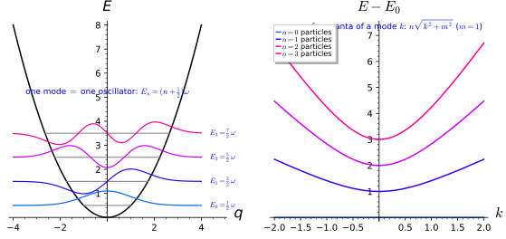
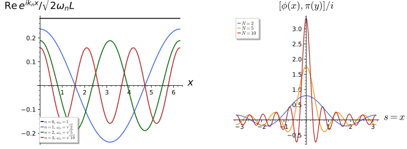
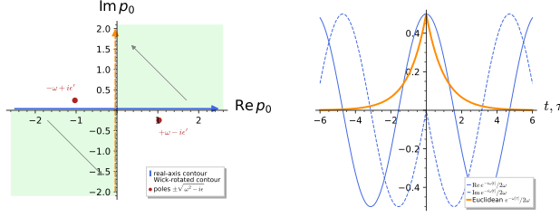
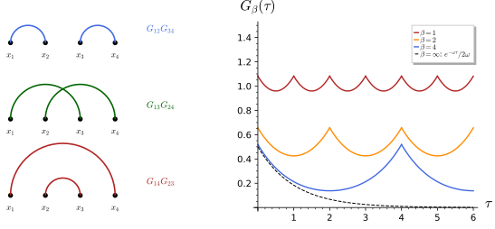
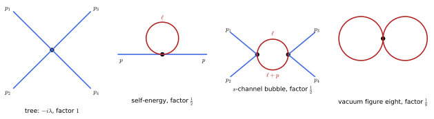
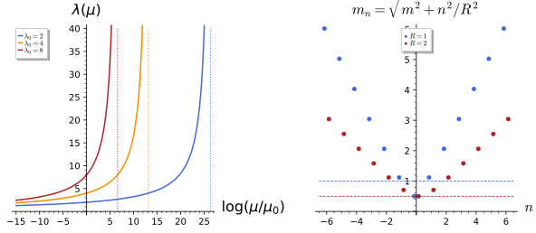

Quantum field theory
Quantum field theory quantises the fields of the previous chapters: the plane-wave modes of a free field become harmonic oscillators, their quanta are particles, propagators become Green’s functions, and the path integral turns correlation functions into Gaussian integrals evaluated by Wick’s theorem. This chapter has six sections. The first states in outline what quantisation adds to classical field theory. The second quantises the free real scalar canonically, with the mode expansion and Fock space; the third computes its two-point functions, the Feynman propagator with its i\epsilon poles and its Euclidean form after Wick rotation; the fourth introduces the generating functional, Gaussian path integrals, Wick’s theorem, the thermal circle, and the lattice evaluation of the path integral, exact for a free field and by Monte Carlo sampling in general. The fifth expands the quartic interaction in Feynman diagrams, with symmetry factors and the one-loop integral, and the sixth describes in outline regularisation, running couplings, effective field theories and the chiral anomaly, together with the spectrum of a field on a compact extra dimension. Interactions, renormalisation and anomalies are outlines with quoted results; the free-field statements, the combinatorics and the one-loop integrals are derived in full. Units \hbar = c = 1 are used from the second section on.
Quantisation in outline
Everything in these lectures is classical field theory, but the theories are meant as quantum theories, and three of their features, particles, renormalisation and anomalies, exist only after quantisation. This chapter says what quantisation adds, one notion at a time, at the level needed to read the later parts: the modes of a free field are harmonic oscillators, their quanta are particles, and the quantum consistency of the Higgs mechanism and of the fermion content constrains the models of Part V.
Canonical quantisation
Classical mechanics in Hamiltonian form (Hamiltonian mechanics) describes a system by coordinates and momenta whose Poisson brackets generate the time evolution. Quantum mechanics keeps this algebraic structure but realises it by operators on a Hilbert space, and the definition below states the rule that converts one into the other; in this section \hbar is kept explicit.
Definition 1 (Canonical quantisation) Canonical quantisation promotes the coordinates and momenta of a classical system to operators on a Hilbert space with the commutators [\hat q^i, \hat p_j] = i\hbar\delta^i_j replacing the Poisson brackets of Definition 12 of Classical mechanics, \{f, g\} \mapsto -\tfrac{i}{\hbar}[\hat f, \hat g]; for a field, [\hat\phi(t, \vec x), \hat\pi(t, \vec y)] = i\hbar\delta^3(\vec x - \vec y) with \pi = \partial\mathcal{L}/\partial\dot\phi the momentum density (Alvarez-Gaume and Vazquez-Mozo 2005, eqs. 3.50-3.52). Time evolution is generated by the Hamiltonian, \dot{\hat f} = \tfrac{i}{\hbar}[\hat H, \hat f].
Veriphy. Pending.
Lean. Pending.
Sage. Pending.
The first example is the system on which every later construction rests. Its ladder operators turn the canonical commutator into a statement about a spectrum, and the quantum mechanics chapter (The harmonic oscillator) treats it in full.
Example 1 (The harmonic oscillator) With \hat a = (\hat q + i\hat p)/\sqrt2 and \hat a^\dagger its adjoint (units \hbar = m = \omega = 1), [\hat a, \hat a^\dagger] = 1 and \hat H = \hat a^\dagger\hat a + \tfrac12: the spectrum is E_n = n + \tfrac12, with \hat a^\dagger raising and \hat a lowering the level (Figure 1, Exercise 7). Every free field mode is such an oscillator.
A classical symmetry with a conserved charge (Noether’s theorem for particles) survives quantisation as an operator that generates the symmetry through commutators. The second example records this correspondence, which turns the Poisson algebra of the charges into a Lie algebra of operators.
Example 2 (Noether charges as generators) A conserved Noether charge becomes an operator that generates its symmetry, \delta\hat\phi = \tfrac{i}{\hbar}[\hat Q, \hat\phi] (Alvarez-Gaume and Vazquez-Mozo 2005, eq. 6.8): the angular momentum operators of Example 54 of Classical mechanics generate rotations and obey the \mathfrak{so}(3) commutation relations, and the Hamiltonian generates time translation.
Not every classical field is a set of independent coordinates and momenta. Gauge fields carry redundant components, and the third example explains, in outline, why their quantisation needs an extra step.
Example 3 (Gauge fields) Gauge symmetry means that A_\mu contains unphysical components; quantising requires fixing a gauge or working with gauge-invariant states, and the two transverse polarisations of Exercise 29 of Classical field theory are the physical photon states. The non-abelian case needs the additional ghost fields of the Faddeev-Popov procedure, beyond this outline.

figures/oscillator_spectrum.sage.
The rule \{f, g\} \mapsto -\tfrac{i}{\hbar}[\hat f, \hat g] is exact for the brackets of q and p themselves but meets an ordering ambiguity for products. The first exercise computes the two sides for quadratic functions and shows where the difference enters.
Exercise 1 (Poisson brackets and commutators of quadratics) Compute \{q, p^2\} and \{q^2, p^2\}, then [\hat q, \hat p^2] and [\hat q^2, \hat p^2] from [\hat q, \hat p] = i\hbar, and compare -\tfrac{i}{\hbar}[\hat f, \hat g] with \{f, g\} in both cases.
Classically \{q, p^2\} = 2p and \{q^2, p^2\} = \partial_q(q^2)\partial_p(p^2) = 4qp. For the operators, [\hat q, \hat p^2] = \hat p[\hat q, \hat p] + [\hat q, \hat p]\hat p = 2i\hbar\hat p, so -\tfrac{i}{\hbar}[\hat q, \hat p^2] = 2\hat p, exactly the quantised bracket. Next [\hat q^2, \hat p^2] = \hat q[\hat q, \hat p^2] + [\hat q, \hat p^2]\hat q = 2i\hbar(\hat q\hat p + \hat p\hat q), so -\tfrac{i}{\hbar}[\hat q^2, \hat p^2] = 2(\hat q\hat p + \hat p\hat q). This is the quantisation of 4qp in the symmetric (Weyl) ordering; writing it as 4\hat q\hat p - 2i\hbar shows that another ordering differs by a term of order \hbar, which is the ambiguity of quantisation beyond quadratic order.
Heisenberg’s equation \dot{\hat f} = \tfrac{i}{\hbar}[\hat H, \hat f] replaces Hamilton’s equations. The second exercise solves it for the oscillator, where it is linear in the ladder operators and can be integrated at once.
Exercise 2 (Heisenberg equations of the oscillator) For \hat H = \hbar\omega(\hat a^\dagger\hat a + \tfrac12) show that \dot{\hat a} = -i\omega\hat a, solve for \hat a(t), and deduce \hat q(t) for \hat q = \sqrt{\hbar/(2m\omega)}(\hat a + \hat a^\dagger), \hat p = -i\sqrt{\hbar m\omega/2}(\hat a - \hat a^\dagger).
[\hat a^\dagger\hat a, \hat a] = [\hat a^\dagger, \hat a]\hat a = -\hat a, so \dot{\hat a} = \tfrac{i}{\hbar}\hbar\omega(-\hat a) = -i\omega\hat a and \hat a(t) = e^{-i\omega t}\hat a, \hat a^\dagger(t) = e^{i\omega t}\hat a^\dagger. Then \hat q(t) = \sqrt{\hbar/(2m\omega)}(e^{-i\omega t}\hat a + e^{i\omega t}\hat a^\dagger) = \hat q\cos\omega t + \frac{\hat p}{m\omega}\sin \omega t, the classical solution with operator initial data. The time dependence e^{\mp i\omega t} of the ladder operators is the time dependence of each mode in the field expansions of Section 1.2.
The orbital angular momentum L = x \times p is the example of Example 2. With \hat p = -i\hbar\nabla its commutators can be computed by letting the operators act on an arbitrary function, which is what the third exercise asks of Sage.
Exercise 3 (The angular momentum algebra) With \hat L_i = -i\hbar\,\epsilon_{ijk}x_j\partial_k acting on an arbitrary function f(x, y, z), verify [\hat L_x, \hat L_y] = i\hbar\hat L_z and its cyclic permutations, and [\hat L^2, \hat L_z] = 0; compare with the Poisson brackets \{L_x, L_y\} = L_z of Example 54 of Classical mechanics.
The second derivatives cancel in each commutator and the first-derivative terms recombine into i\hbar\hat L_z; \hat L^2 commutes with every component. The bracket \{L_x, L_y\} = L_z becomes [\hat L_x, \hat L_y] = i\hbar\hat L_z, exactly as the rule of Definition 1 prescribes:
x, y, z, hbar = var("x y z hbar")
f = function("f")(x, y, z)
Lx = lambda g: -I * hbar * (y * diff(g, z) - z * diff(g, y))
Ly = lambda g: -I * hbar * (z * diff(g, x) - x * diff(g, z))
Lz = lambda g: -I * hbar * (x * diff(g, y) - y * diff(g, x))
comm = lambda A, B, g: (A(B(g)) - B(A(g))).expand()
print("[L_x, L_y] f = i hbar L_z f:", bool(comm(Lx, Ly, f) == (I * hbar * Lz(f)).expand()))
print("[L_y, L_z] f = i hbar L_x f:", bool(comm(Ly, Lz, f) == (I * hbar * Lx(f)).expand()))
print("[L_z, L_x] f = i hbar L_y f:", bool(comm(Lz, Lx, f) == (I * hbar * Ly(f)).expand()))
L2 = lambda g: Lx(Lx(g)) + Ly(Ly(g)) + Lz(Lz(g))
print("[L^2, L_z] f = 0:", bool(comm(L2, Lz, f) == 0))
print("example: L_z (x + i y) = hbar (x + i y):", bool(Lz(x + I * y) == hbar * (x + I * y)))Output:
[L_x, L_y] f = i hbar L_z f: True
[L_y, L_z] f = i hbar L_x f: True
[L_z, L_x] f = i hbar L_y f: True
[L^2, L_z] f = 0: True
example: L_z (x + i y) = hbar (x + i y): TrueA free field is a collection of independent oscillators, one for each plane wave. Quantising each of them gives the particle interpretation of field theory, which the next definition states for the free fields of Scalar fields.
Definition 2 (Particles as quanta of modes) Expanding a free field in plane waves (Example 7 of Classical field theory), each mode \vec k is an oscillator of frequency \omega_k = \sqrt{\vec k^2 + m^2} with creation and annihilation operators \hat a^\dagger_{\vec k}, \hat a_{\vec k}; the vacuum |0\rangle is annihilated by all \hat a_{\vec k}, and the state \hat a^\dagger_{\vec k_1}\cdots\hat a^\dagger_{\vec k_n}|0\rangle contains n particles of momenta \hbar\vec k_i and energies \hbar\omega_{k_i} (Alvarez-Gaume and Vazquez-Mozo 2005, eqs. 3.53-3.58). The dispersion relation Equation 2 of Classical field theory is the relativistic energy-momentum relation of these particles.
Veriphy. Pending.
Lean. Pending.
Sage. Pending.
The real scalar field is the simplest case, and the complex scalar the simplest with a charge. The example below describes the particles of each and the role of the U(1) symmetry.
Example 4 (Scalar particles) The real scalar of mass m describes identical spin-0 particles of mass m; the complex scalar describes particles and antiparticles, created by \hat a^\dagger and \hat b^\dagger, with the U(1) charge Example 74 of Classical field theory counting their difference.
When one dimension of space is a circle, the momentum along it is quantised and appears in four dimensions as a mass. The second example states the resulting tower of particles, which is the starting point of Part III.
Example 5 (Kaluza-Klein particles) On M_4 \times S^1 the modes e^{iny/R} of a five-dimensional field are four-dimensional particles of mass |n|/R (Exercise 31 of Gauge symmetry and the Kaluza-Klein tower), the Kaluza-Klein tower; the quantum of the gauge field mode is a massive vector boson, and the charge n is the momentum around the circle (Part III).
Spinor fields obey a different rule, with anticommutators in place of commutators. The third example describes the consequence, the exclusion principle, and its relation to spin.
Example 6 (Fermions) The Dirac field is quantised with anticommutators, \{\hat b, \hat b^\dagger\} = 1, so that each mode holds at most one particle (the Pauli principle): spinor fields describe fermions, and the spin-statistics theorem ties this to the half-integer spin of Spinor fields and gamma matrices. Supersymmetry (The superalgebra) relates the two kinds of modes.
The definition asserts that the Klein-Gordon Lagrangian is a sum of oscillator Lagrangians. The first exercise proves this on a circle, where the modes are discrete and the computation is a Fourier series (Fourier series).
Exercise 4 (A field as a collection of oscillators) Expand a real scalar on a circle of length L in modes \phi = \sum_k q_k(t)e^{ikx} with k = 2\pi n/L, and show that the Klein-Gordon Lagrangian becomes a sum of oscillator Lagrangians with frequencies \omega_k = \sqrt{k^2 + m^2}.
\int_0^L\tfrac12(\dot\phi^2 - \phi'^2 - m^2\phi^2)\,dx = \tfrac{L}{2}\sum_k(|\dot q_k|^2 - (k^2 + m^2)|q_k|^2) by the orthogonality of the modes: each q_k is an oscillator of frequency \omega_k, and quantising each gives the particle states of Definition 2 with energies n\omega_k (Figure 1). On a circle of radius R the modes with k = n/R are the Kaluza-Klein tower.
Particles of the same mode are identical, so the states they form are symmetric under exchange. The second exercise computes the norms of two-particle states and shows how the factorials of the Fock basis arise.
Exercise 5 (Two-particle states) For two modes \vec k \neq \vec q with [\hat a_{\vec k}, \hat a^\dagger_{\vec q}] = 0 and [\hat a_{\vec k}, \hat a^\dagger_{\vec k}] = 1 (box normalisation), compute the norms of \hat a^\dagger_{\vec k}\hat a^\dagger_{\vec q}|0\rangle and (\hat a^\dagger_{\vec k})^2|0\rangle, show that the first state is symmetric under \vec k \leftrightarrow \vec q, and write the normalised two-particle states.
The creation operators commute, so \hat a^\dagger_{\vec k}\hat a^\dagger_{\vec q}|0\rangle = \hat a^\dagger_{\vec q}\hat a^\dagger_{\vec k}|0\rangle: the state is symmetric, as it must be for identical bosons. Its norm is \langle 0|\hat a_{\vec q}\hat a_{\vec k}\hat a^\dagger_{\vec k}\hat a^\dagger_{\vec q}|0\rangle = \langle 0|\hat a_{\vec q}(1 + \hat a^\dagger_{\vec k}\hat a_{\vec k})\hat a^\dagger_{\vec q}|0\rangle = 1, since \hat a_{\vec k} commutes past \hat a^\dagger_{\vec q} and kills the vacuum. For two quanta in one mode, \hat a(\hat a^\dagger)^2|0\rangle = 2\hat a^\dagger|0\rangle gives the norm 2. The normalised states are \hat a^\dagger_{\vec k}\hat a^\dagger_{\vec q}|0\rangle and (\hat a^\dagger_{\vec k})^2|0\rangle/\sqrt2, the cases n = 1, 1 and n = 2 of the Fock basis \prod_{\vec k}(\hat a^\dagger_{\vec k})^{n_{\vec k}}|0\rangle/\sqrt{n_{\vec k}!} of Definition 8.
For fermions the ladder operators of one mode obey \{\hat b, \hat b^\dagger\} = 1 and \hat b^2 = 0, and they can be realised by 2 \times 2 matrices. The third exercise builds them, and two anticommuting modes, with Sage.
Exercise 6 (A fermionic mode as matrices) Show that \hat b = \begin{pmatrix} 0 & 1 \\ 0 & 0 \end{pmatrix} satisfies \{\hat b, \hat b^\dagger\} = 1 and \hat b^2 = 0, that \hat N = \hat b^\dagger\hat b has eigenvalues 0 and 1, and that \hat b_1 = \hat b \otimes 1, \hat b_2 = \sigma_3 \otimes \hat b describe two modes with \{\hat b_1, \hat b_2\} = \{\hat b_1, \hat b_2^\dagger\} = 0.
\hat b\hat b^\dagger = \operatorname{diag}(1, 0) and \hat b^\dagger\hat b = \operatorname{diag}(0, 1) add to the identity, and \hat b^2 = 0: a second quantum cannot be added to an occupied mode, the Pauli principle. With the factor \sigma_3 (the Jordan-Wigner construction) the operators of different modes anticommute, whereas the naive 1 \otimes \hat b would commute with \hat b_1:
b = matrix(QQ, [[0, 1], [0, 0]]); bd = b.transpose(); one = identity_matrix(QQ, 2); s3 = diagonal_matrix(QQ, [1, -1])
ac = lambda A, B: A * B + B * A
print("{b, b^dag} = 1:", ac(b, bd) == one, " b^2 = 0:", b * b == 0)
print("N = b^dag b =", (bd * b).list(), " eigenvalues", sorted((bd * b).eigenvalues()))
b1 = b.tensor_product(one); b2 = s3.tensor_product(b)
print("{b1, b2} = 0:", ac(b1, b2) == 0, " {b1, b2^dag} = 0:", ac(b1, b2.transpose()) == 0)
print("{b2, b2^dag} = 1:", ac(b2, b2.transpose()) == identity_matrix(QQ, 4), " b2^2 = 0:", b2 * b2 == 0)
naive = one.tensor_product(b)
print("without sigma_3 the modes commute instead: [b1, 1 (x) b] = 0:", b1 * naive - naive * b1 == 0, ", {b1, 1 (x) b} = 0:", ac(b1, naive) == 0)Output:
{b, b^dag} = 1: True b^2 = 0: True
N = b^dag b = [0, 0, 0, 1] eigenvalues [0, 1]
{b1, b2} = 0: True {b1, b2^dag} = 0: True
{b2, b2^dag} = 1: True b2^2 = 0: True
without sigma_3 the modes commute instead: [b1, 1 (x) b] = 0: True , {b1, 1 (x) b} = 0: FalseThe figure and the definitions rely on ladder operators. The proposition records their properties on a truncated basis, where they become finite matrices and every statement can be computed exactly.
Proposition 1 (The oscillator spectrum) With \hat a and \hat a^\dagger represented on the truncated basis |0\rangle, \dots, |N - 1\rangle, [\hat a, \hat a^\dagger] = 1 away from the truncation, [\hat q, \hat p] = i, and \hat H = \hat a^\dagger\hat a + \tfrac12 has the spectrum n + \tfrac12.
Veriphy. Pending.
Lean. Pending.
Sage. Computed exactly with Sage’s matrices (figures/oscillator_spectrum.sage, Exercise 7).
The truncation cannot be avoided entirely: no pair of finite matrices satisfies [\hat a, \hat a^\dagger] = 1. The first example shows how the truncated matrices fail, in their last diagonal entry.
Example 7 (Where the truncation shows) On the basis |0\rangle, \dots, |N - 1\rangle the commutator [\hat a, \hat a^\dagger] is \operatorname{diag}(1, \dots, 1, -(N - 1)): the last entry compensates the others so that the trace vanishes, as the trace of every commutator of matrices does. The relations of Proposition 1 are therefore stated away from the truncation, and the low levels are exact for every N.
Position and momentum are linear combinations of the ladder operators, so they are tridiagonal in the number basis. The second example writes \hat q and computes the width of the ground state from it.
Example 8 (Position in the number basis) \hat q = (\hat a + \hat a^\dagger)/\sqrt2 has the entries \langle n|\hat q|n + 1\rangle = \langle n + 1|\hat q|n\rangle = \sqrt{(n + 1)/2} and zeros elsewhere; hence \langle 0|\hat q^2|0\rangle = \tfrac12, the variance of the Gaussian ground state, and \langle n|\hat q^2|n\rangle = n + \tfrac12, which grows with the level as the classical amplitude does.
The condition \hat a|0\rangle = 0 is a differential equation in the position representation. The third example solves it and recovers the lowest wavefunction of Figure 1.
Example 9 (The ground state wavefunction) With \hat p = -i\,d/dq, \hat a = (q + d/dq)/\sqrt2, so \hat a\psi_0 = 0 reads \psi_0' = -q\psi_0, solved by \psi_0 = \pi^{-1/4}e^{-q^2/2}, the normalised Gaussian; the excited states \psi_n \propto (\hat a^\dagger)^n\psi_0 are Hermite functions, drawn in the figure.
The first exercise is the computation behind the proposition. It builds the ladder operators as truncated matrices and checks the commutators and the spectrum directly.
Exercise 7 (Ladder operators as matrices) Represent \hat a and \hat a^\dagger as truncated matrices with Sage, check the commutators and the spectrum of \hat H, and verify \hat a|2\rangle = \sqrt2|1\rangle.
N = 8
a = matrix(SR, N, N, lambda i, j: sqrt(j) if j == i + 1 else 0)
ad = a.transpose()
num = ad * a
print("number operator a^dagger a is diagonal with entries 0..N-1:", num == diagonal_matrix(SR, [n for n in range(N)]))
comm = a * ad - ad * a
print("[a, a^dagger] = 1 except for the truncation entry:", [comm[i, i] for i in range(N)])
q = (a + ad) / sqrt(2); p = -I * (a - ad) / sqrt(2)
qp = q * p - p * q
print("[q, p] = i (off the truncation):", [qp[i, i] for i in range(N - 1)])
w = var("w", domain="real")
H = w * (num + identity_matrix(SR, N) / 2)
print("H = w (a^dagger a + 1/2) has eigenvalues", [H[n, n] for n in range(4)], "...")
print("a lowers and a^dagger raises the level: a|2> = sqrt(2)|1>:", (a * vector(SR, [0, 0, 1] + [0] * (N - 3))) == sqrt(2) * vector(SR, [0, 1] + [0] * (N - 2)))Output:
number operator a^dagger a is diagonal with entries 0..N-1: True
[a, a^dagger] = 1 except for the truncation entry: [1, 1, 1, 1, 1, 1, 1, -7]
[q, p] = i (off the truncation): [I, I, I, I, I, I, I]
H = w (a^dagger a + 1/2) has eigenvalues [1/2*w, 3/2*w, 5/2*w, 7/2*w] ...
a lowers and a^dagger raises the level: a|2> = sqrt(2)|1>: TrueThe trace argument of Example 7 is a theorem about all finite matrices. The second exercise asks for its proof and draws the consequence for quantum mechanics.
Exercise 8 (No finite-dimensional canonical pair) Show that there are no N \times N matrices Q, P with [Q, P] = i\hbar\,1, and conclude that the canonical commutator needs an infinite-dimensional Hilbert space and unbounded operators (Definition 30 of Functional analysis).
\operatorname{tr}(QP) = \operatorname{tr}(PQ), so \operatorname{tr}[Q, P] = 0, while \operatorname{tr}(i\hbar\,1) = i\hbar N \neq 0. The same argument works for bounded operators whenever a trace is defined; more strongly, if Q and P were bounded then [Q, P^n] = i\hbar nP^{n-1} would give n\hbar\|P^{n-1}\| \leq 2\|Q\|\|P\|\|P^{n-1}\| for all n, impossible. So at least one of \hat q, \hat p is unbounded, as in Unbounded operators and the Laplacian.
If \hat q and \hat p are truncated first and the Hamiltonian is built from them, the truncation spoils one level. The third exercise computes which one with Sage and explains why.
Exercise 9 (The Hamiltonian from truncated q and p) With N = 6, build \hat q and \hat p from truncated ladder operators, form \tfrac12(\hat q^2 + \hat p^2) and compare its spectrum with n + \tfrac12.
\tfrac12(\hat q^2 + \hat p^2) = \tfrac12(\hat a\hat a^\dagger + \hat a^\dagger\hat a), which is diagonal with entries n + \tfrac12 for n < N - 1 and (N - 1)/2 in the last place, where \hat a\hat a^\dagger has lost its N-th level. The ordering \hat a^\dagger\hat a + \tfrac12 of Proposition 1 avoids the defect because \hat a^\dagger\hat a is exact on the truncated space:
N = 6
a = matrix(SR, N, N, lambda i, j: sqrt(j) if j == i + 1 else 0); ad = a.transpose()
q = (a + ad) / sqrt(2); p = -I * (a - ad) / sqrt(2)
H1 = ((q * q + p * p) / 2).apply_map(lambda e: e.simplify_full())
print("(q^2 + p^2)/2 is diagonal:", H1.is_diagonal(), " entries:", H1.diagonal())
print("equals (a a^dag + a^dag a)/2:", H1 == ((a * ad + ad * a) / 2).apply_map(lambda e: e.simplify_full()))
H2 = ad * a + identity_matrix(SR, N) / 2
print("a^dag a + 1/2 has entries:", H2.diagonal(), " (exact n + 1/2)")Output:
(q^2 + p^2)/2 is diagonal: True entries: [1/2, 3/2, 5/2, 7/2, 9/2, 5/2]
equals (a a^dag + a^dag a)/2: True
a^dag a + 1/2 has entries: [1/2, 3/2, 5/2, 7/2, 9/2, 11/2] (exact n + 1/2)What the quantum theory requires
Quantisation does more than reinterpret the classical solutions: loop effects make couplings depend on the energy scale. The definition below states the condition under which this dependence is controlled by finitely many parameters, in outline; Section 1.6 returns to it with computations.
Definition 3 (Renormalisation) Loop corrections make the couplings of a quantum field theory depend on the energy scale; a theory is renormalisable if finitely many parameters absorb all divergences, which in four dimensions holds exactly when the Lagrangian contains only operators of mass dimension at most four (Alvarez-Gaume and Vazquez-Mozo 2005, sec. 8.1). Non-renormalisable theories are effective theories, valid below a cutoff scale.
Veriphy. Pending.
Lean. Pending.
Sage. Pending.
The renormalisable theories are those whose couplings are not suppressed by inverse powers of a mass. The first example lists the standard ones.
Example 10 (Renormalisable theories) Scalar theories with \phi^4 interactions, Yang-Mills theories, quantum electrodynamics and the Standard Model are renormalisable: their couplings are dimensionless or of positive mass dimension.
Gravity has a coupling of negative mass dimension, and so does every gauge theory in more than four dimensions. The second example draws the consequence for the higher-dimensional theories of these lectures.
Example 11 (Gravity and higher dimensions) The Einstein-Hilbert action has the coupling G of mass dimension -2, so quantum gravity is not renormalisable, and neither is any field theory in more than four dimensions (the Yang-Mills coupling in d dimensions has dimension (4 - d)/2): the higher-dimensional theories we reduce are to be read as classical or effective theories, with the reduction scale as cutoff.
The criterion is a counting of mass dimensions. The third example carries it out for the fields that appear in the Standard Model.
Example 12 (Counting dimensions) In four dimensions a scalar has mass dimension 1, a spinor \tfrac32, a gauge field 1 and a derivative 1, so \phi^4, \bar\psi i\gamma^\mu D_\mu\psi and F^2 have dimension 4 while \phi^6 and (\bar\psi\psi)^2 have dimensions 6: the first set is renormalisable, the second is not.
The mass dimension of a field follows from requiring the kinetic term to have the dimension of a Lagrangian density. The first exercise does this for a scalar in any number of dimensions.
Exercise 10 (Mass dimensions) Find the mass dimension of the fields and couplings of a scalar theory in d spacetime dimensions, and show that \phi^4 is renormalisable only for d \leq 4.
The action is dimensionless and d^dx has dimension -d, so \tfrac12(\partial\phi)^2 has dimension d and \phi has dimension (d - 2)/2; the coupling \lambda of \lambda\phi^4 then has dimension d - 4(d-2)/2 = 4 - d, which is non-negative, the renormalisability condition, only for d \leq 4. In five dimensions every interaction is non-renormalisable, as Example 11 states.
Fermions and gauge fields have different kinetic terms, so their dimensions differ from that of a scalar. The second exercise extends the counting to the couplings of a Yukawa and a gauge theory and tabulates them with Sage.
Exercise 11 (Dimensions of couplings in d dimensions) Using [\phi] = (d - 2)/2, [\psi] = (d - 1)/2 and [A_\mu] = (d - 2)/2, find the mass dimensions of the couplings of \phi^3, \phi^4, \phi^6, the Yukawa coupling g\phi\bar\psi\psi and the gauge coupling e\bar\psi\gamma^\mu A_\mu\psi in d dimensions, and tabulate them for d = 4, 5, 6, 10, 11.
Each term of the Lagrangian density has dimension d, so the coupling of a monomial has dimension d minus the dimensions of its fields: [g_3] = (6 - d)/2, [\lambda] = 4 - d, [g_6] = 6 - 2d, [g] = [e] = (4 - d)/2. In four dimensions \phi^3 is super-renormalisable, \phi^4, Yukawa and gauge couplings are dimensionless, and \phi^6 has dimension -2; in d \geq 5 only \phi^3 (up to d = 6) survives, and in ten or eleven dimensions every coupling has negative dimension:
d = var("d")
phi = (d - 2) / 2; psi = (d - 1) / 2; A = (d - 2) / 2
couplings = {"g3 phi^3": d - 3 * phi, "lambda phi^4": d - 4 * phi, "g6 phi^6": d - 6 * phi,
"Yukawa g phi psibar psi": d - phi - 2 * psi, "gauge e psibar A psi": d - A - 2 * psi}
for k, v in couplings.items():
print(k, ": dimension", v.simplify_full())
print("d " + " ".join(couplings.keys()))
for dv in [4, 5, 6, 10, 11]:
print(dv, [v.subs(d=dv) for v in couplings.values()])Output:
g3 phi^3 : dimension -1/2*d + 3
lambda phi^4 : dimension -d + 4
g6 phi^6 : dimension -2*d + 6
Yukawa g phi psibar psi : dimension -1/2*d + 2
gauge e psibar A psi : dimension -1/2*d + 2
d g3 phi^3 lambda phi^4 g6 phi^6 Yukawa g phi psibar psi gauge e psibar A psi
4 [1, 0, -2, 0, 0]
5 [1/2, -1, -4, -1/2, -1/2]
6 [0, -2, -6, -1, -1]
10 [-2, -6, -14, -3, -3]
11 [-5/2, -7, -16, -7/2, -7/2]A coupling of negative dimension defines an energy scale at which the theory stops being predictive. The third exercise estimates this scale for Fermi’s theory of the weak interaction.
Exercise 12 (The scale of Fermi’s theory) Fermi’s interaction \tfrac{G_F}{\sqrt2}(\bar\psi\gamma^\mu\psi)(\bar\psi\gamma_\mu\psi) has G_F = 1.166 \times 10^{-5}\,\mathrm{GeV}^{-2}. Find [G_F] and the energy at which the dimensionless combination G_FE^2 becomes of order one, and compare with the W mass m_W \approx 80\,\mathrm{GeV}.
The four-fermion operator has dimension 4 \cdot \tfrac32 = 6, so [G_F] = 4 - 6 = -2. Amplitudes grow like G_FE^2, which reaches one at E \sim G_F^{-1/2} \approx 293\,\mathrm{GeV}. The theory is an effective theory (Definition 22) of the exchange of a W boson: G_F/\sqrt2 = g^2/(8m_W^2), and new physics, the W itself, appears below the naive scale, at m_W \approx 80\,\mathrm{GeV}.
A symmetry of the classical action may fail to survive quantisation. The definition below names this phenomenon, which constrains the fermion content of every gauge theory.
Definition 4 (Anomaly) An anomaly is a classical symmetry that fails in the quantum theory however the theory is regularised; a gauge anomaly makes the quantum theory inconsistent, so the gauge anomalies of a model must cancel, which constrains the fermion content (Alvarez-Gaume and Vazquez-Mozo 2005, sec. 7).
Veriphy. Pending.
Lean. Pending.
Sage. Pending.
In the Standard Model the cancellation of gauge anomalies is an arithmetic identity among hypercharges. The first example states it; the first exercise below checks it.
Example 13 (Anomaly cancellation in the Standard Model) The U(1) hypercharges of the quarks and leptons of each generation are such that all gauge anomalies cancel, with the three colours of the quarks essential to the cancellation: the quantum theory relates the charges of particles that the classical theory leaves independent.
The same condition applies to models obtained by dimensional reduction. The second example says how it enters the selection of groups and cosets in Part V.
Example 14 (Anomalies in CSDR models) The fermion content of a model obtained by coset space dimensional reduction is fixed by the branching rules of Branching rules, and it must be anomaly-free in four dimensions; this requirement, together with the Weyl condition in higher dimensions, selects the cosets and groups usable in Part V.
Anomalies of global symmetries are not inconsistencies but effects. The third example names the classic one, which Definition 23 states in formulas.
Example 15 (Chiral anomalies as physics) The axial current of massless fermions is anomalous, \partial_\mu j^\mu_5 \propto F\tilde F, which accounts for the decay of the neutral pion into two photons: anomalies are physical when they afflict global symmetries and fatal when they afflict gauge symmetries.
Each generation of the Standard Model consists of fifteen left-handed Weyl fermions with known hypercharges. The first exercise checks with Sage that the anomaly coefficients, sums of hypercharges and their cubes, vanish.
Exercise 13 (Anomaly cancellation in one generation) With the left-handed fields Q (colour triplet, weak doublet, Y = \tfrac16), u^c (\bar 3, Y = -\tfrac23), d^c (\bar 3, Y = \tfrac13), L (doublet, Y = -\tfrac12) and e^c (Y = 1), compute \sum Y^3, \sum Y (the mixed gravitational anomaly), \sum_{\text{doublets}}Y and \sum_{\text{triplets}}Y, weighting each field by its multiplicity.
With multiplicities 6, 3, 3, 2, 1: \sum Y^3 = \tfrac{6}{216} - \tfrac{24}{27} + \tfrac{3}{27} - \tfrac28 + 1 = 0 and \sum Y = 1 - 2 + 1 - 1 + 1 = 0; the doublets give 3 \cdot \tfrac16 - \tfrac12 = 0 and the colour triplets 2 \cdot \tfrac16 - \tfrac23 + \tfrac13 = 0. Removing the leptons spoils the cancellation, so quarks and leptons must come in complete generations:
F = [("Q", 6, QQ(1) / 6, True, True), ("u^c", 3, -QQ(2) / 3, False, True), ("d^c", 3, QQ(1) / 3, False, True),
("L", 2, -QQ(1) / 2, True, False), ("e^c", 1, QQ(1), False, False)]
print("sum Y^3 =", sum(n * Y ** 3 for _, n, Y, _, _ in F))
print("sum Y (gravity) =", sum(n * Y for _, n, Y, _, _ in F))
print("SU(2)^2 U(1): sum over doublets of Y (per doublet, times colours) =", 3 * QQ(1) / 6 + (-QQ(1) / 2))
print("SU(3)^2 U(1): sum over triplets of Y (per triplet, times weak components) =", 2 * QQ(1) / 6 + (-QQ(2) / 3) + QQ(1) / 3)
quarks = [f for f in F if f[4]]
print("quarks alone: sum Y^3 =", sum(n * Y ** 3 for _, n, Y, _, _ in quarks), ", sum Y =", sum(n * Y for _, n, Y, _, _ in quarks))Output:
sum Y^3 = 0
sum Y (gravity) = 0
SU(2)^2 U(1): sum over doublets of Y (per doublet, times colours) = 0
SU(3)^2 U(1): sum over triplets of Y (per triplet, times weak components) = 0
quarks alone: sum Y^3 = -3/4 , sum Y = 0The cancellation involves the number of colours, which the classical theory leaves free. The second exercise determines it from the anomaly conditions.
Exercise 14 (The number of colours) Keep the hypercharges of Exercise 13 but let the quarks come in N_c colours. Which anomaly conditions fix N_c, and to what value?
The doublet condition is N_c \cdot \tfrac16 - \tfrac12 = 0, so N_c = 3. The cubic condition is N_c(\tfrac{2}{216} - \tfrac{8}{27} + \tfrac{1}{27}) - \tfrac28 + 1 = -\tfrac{N_c}{4} + \tfrac34 = 0, again N_c = 3. The linear condition N_c(\tfrac26 - \tfrac23 + \tfrac13) - 1 + 1 = 0 holds for every N_c, and the triplet condition does not involve the leptons. With these hypercharges the anomaly-free theory has three colours, as Example 13 states.
A theory in which every left-handed fermion of charge q is accompanied by one of charge -q has no gauge anomaly at all. The third exercise shows this for a U(1) theory and identifies such theories with ordinary Dirac fermions.
Exercise 15 (Vector-like theories are anomaly-free) The U(1)^3 anomaly of left-handed Weyl fermions of charges q_i is proportional to \sum_iq_i^3. Show that a single Weyl fermion is anomalous, that adding a second one of charge -q cancels the anomaly, and explain why quantum electrodynamics has no gauge anomaly.
One fermion gives q^3 \neq 0; adding charge -q gives q^3 + (-q)^3 = 0. The charge conjugate of a right-handed fermion of charge q is a left-handed fermion of charge -q, so the pair is one Dirac fermion of charge q whose two chiralities couple identically: the coupling is vector-like. Quantum electrodynamics is of this kind, so its gauge symmetry is anomaly-free; the axial symmetry, under which the two chiralities rotate oppositely, is a global symmetry and is anomalous (Definition 23).
Gauge bosons of the weak interaction are massive, and a mass term breaks the gauge symmetry. The definition below states, in outline, why the way in which they acquire mass matters for the quantum theory.
Definition 5 (Quantum consistency of massive vectors) A massive vector field with an explicit mass term is not renormalisable and violates unitarity at high energy, while a vector that acquires its mass through the Higgs mechanism, by absorbing the phase of a charged scalar whose potential is minimal away from zero (developed in The Higgs mechanism), remains renormalisable and unitary: the Higgs mechanism is classical in its derivation but its reason is quantum.
Veriphy. Pending.
Lean. Pending.
Sage. Pending.
The weak interaction is the physical example, and the Higgs boson its prediction. The first example records both and links them to the reductions studied later.
Example 16 (The weak interaction) The W and Z bosons are massive gauge bosons; the Higgs mechanism with a doublet gives them masses consistently and predicts the Higgs boson, found in 2012. The same mechanism, derived rather than postulated, is the output of CSDR.
Massive vectors also appear in the reductions of Part III, where their masses have a geometric origin. The second example states the analogous mechanism there.
Example 17 (Kaluza-Klein vector masses) The massive vector modes of Part III acquire their masses by eating the modes of a scalar from the metric: a geometric Higgs mechanism, consistent for the same reason.
Every effective description has a scale beyond which it fails, and for compactifications there are two. The third example names them.
Example 18 (The scale of the reduction) A compactification with internal radius R is an effective theory below the scale 1/R where the Kaluza-Klein modes appear; above the Planck scale gravity itself needs a quantum completion, which string theory supplies for the supergravity reductions of Part VI.
A massive vector has one more polarisation than a massless one, and the Higgs mechanism supplies it from a scalar. The first exercise counts the degrees of freedom on both sides of the mechanism.
Exercise 16 (Counting degrees of freedom) Count the physical polarisations of a massless and of a massive vector field, and check that the abelian Higgs model, a complex scalar coupled to a U(1) vector field and with its potential minimal on a circle |\phi| = v (developed in The Higgs mechanism), has the same number of degrees of freedom before and after symmetry breaking.
A massless vector has the two transverse polarisations of Exercise 29 of Classical field theory; a massive vector has three, the polarisations orthogonal to its four-momentum, which in the rest frame are the three spatial directions. Before breaking, the abelian Higgs model has a complex scalar (2) and a massless vector (2), four in total; after breaking, a real Higgs scalar (1) and a massive vector (3), again four: the Goldstone mode has become the longitudinal polarisation.
The longitudinal polarisation of a fast massive vector grows with its energy, which is the source of the unitarity problem of Definition 5. The second exercise computes it with Sage.
Exercise 17 (The longitudinal polarisation) For k^\mu = (E, 0, 0, |\vec k|) with E^2 - |\vec k|^2 = m^2, let \epsilon_L^\mu = (|\vec k|, 0, 0, E)/m. Check \epsilon_L \cdot k = 0 and \epsilon_L \cdot \epsilon_L = -1, and show that \epsilon_L^\mu = k^\mu/m + O(m/E) at high energy.
\epsilon_L \cdot k = (|\vec k|E - E|\vec k|)/m = 0 and \epsilon_L \cdot \epsilon_L = (|\vec k|^2 - E^2)/m^2 = -1. The difference \epsilon_L - k/m = (|\vec k| - E)(1, 0, 0, -1)/m has components -m/(2E) + O(m^3/E^3): the polarisation grows like E/m, and amplitudes with longitudinal vectors grow with the energy unless a cancellation, supplied by the Higgs boson, intervenes:
E, m = var("E m", domain="positive")
kk = sqrt(E ** 2 - m ** 2)
eta = diagonal_matrix([1, -1, -1, -1])
k = vector([E, 0, 0, kk]); eps = vector([kk, 0, 0, E]) / m
print("eps_L . k =", (eps * eta * k).simplify_full(), " eps_L . eps_L =", (eps * eta * eps).simplify_full())
diff0 = (eps - k / m)[0]
x = var("x") # x = m/E
print("(eps_L - k/m)^0 as a series in m/E:", (diff0.subs(m=x * E)).simplify_full().series(x, 4))Output:
eps_L . k = 0 eps_L . eps_L = -1
(eps_L - k/m)^0 as a series in m/E: (-1/2)*x + (-1/8)*x^3 + Order(x^4)In the Standard Model the masses of the weak bosons follow from the gauge coupling and the vacuum expectation value of the Higgs field. The third exercise evaluates them.
Exercise 18 (The weak boson masses) With m_W = gv/2, g \approx 0.65, v \approx 246\,\mathrm{GeV} and m_Z = m_W/\cos\theta_W with \sin^2\theta_W \approx 0.23, estimate m_W and m_Z and compare with 80.4 and 91.2\,\mathrm{GeV}.
m_W \approx 0.65 \times 246/2 \approx 80\,\mathrm{GeV} and m_Z \approx 80/\sqrt{0.77} \approx 91\,\mathrm{GeV}, in agreement with the measured values at the per cent level, which is the accuracy of the tree-level relations. The scale v is fixed by G_F of Exercise 12: v = (\sqrt2G_F)^{-1/2} \approx 246\,\mathrm{GeV}.
Canonical quantisation of the free scalar
The previous section stated in outline that a free field is a collection of oscillators. This section carries out the construction for the real scalar field of mass m, with \hbar = c = 1 from here on: the field becomes an operator obeying canonical commutation relations, its plane-wave modes become independent ladder operators, and the states they generate from the vacuum form the Fock space, whose vectors are states of finitely many particles. On a circle of length L every step reduces to finite sums, and the commutators can be computed there exactly.
Field operators
A classical field assigns a number to every point of space at each time, and its momentum density is \pi = \partial\mathcal L/\partial\dot\phi = \dot\phi for the Klein-Gordon Lagrangian of Scalar fields. Quantisation replaces both by operators, one pair for each point, with the commutator of Definition 1 in which the Kronecker delta becomes a Dirac delta.
Definition 6 (Field operator) A real scalar quantum field is a family of self-adjoint operators \hat\phi(t, \vec x) with conjugate momenta \hat\pi(t, \vec x) = \partial_t\hat\phi(t, \vec x), acting on a Hilbert space and obeying the equal-time canonical commutation relations [\hat\phi(t, \vec x), \hat\pi(t, \vec y)] = i\delta^3(\vec x - \vec y), \qquad [\hat\phi(t, \vec x), \hat\phi(t, \vec y)] = [\hat\pi(t, \vec x), \hat\pi(t, \vec y)] = 0, with time evolution generated by the Hamiltonian \hat H = \int d^3x\,\tfrac12\bigl(\hat\pi^2 + (\nabla\hat\phi)^2 + m^2\hat\phi^2\bigr) through \partial_t\hat F = i[\hat H, \hat F]. Because of the delta function, \hat\phi(t, \vec x) is an operator-valued distribution: the smeared fields \hat\phi(f) = \int d^3x\,f(\vec x)\hat\phi(t, \vec x), with test functions f (Distributions), are the operators.
Veriphy. Pending.
Lean. Pending.
Sage. Pending.
The delta function is easiest to understand by first replacing space by a lattice. Then the field is a finite set of coupled oscillators, and the continuum relations are the limit of the familiar ones.
Example 19 (The field on a lattice) On a lattice of spacing a with sites j, let \phi_j and \pi_j be the field and its momentum density at the sites; the Lagrangian \sum_ja\,\tfrac12(\dot\phi_j^2 - ((\phi_{j+1} - \phi_j)/a)^2 - m^2\phi_j^2) has canonical momenta a\pi_j, so [\hat\phi_j, \hat\pi_l] = i\delta_{jl}/a. As a \to 0, \delta_{jl}/a becomes \delta(x - y): a quantum field is the continuum limit of a chain of coupled oscillators, the system of Small oscillations and normal modes.
The Hamiltonian of the definition is the classical energy of Scalar fields with the fields replaced by operators. The second example checks that Heisenberg’s equations reproduce the Klein-Gordon equation, so that the quantum field obeys the classical field equation as an operator identity.
Example 20 (Heisenberg’s equation is the Klein-Gordon equation) Using the commutators of Definition 6, i[\hat H, \hat\phi(\vec x)] = \hat\pi(\vec x) and i[\hat H, \hat\pi(\vec x)] = \nabla^2\hat\phi(\vec x) - m^2\hat\phi(\vec x) (Exercise 19), so \partial_t^2\hat\phi = \nabla^2\hat\phi - m^2\hat\phi, that is (\Box + m^2)\hat\phi = 0. Every solution method of the classical equation, in particular the plane-wave expansion, applies to the operator field.
The field at a single point is too singular to be an operator, and the third example shows this in the simplest quantity, the variance of the field in the vacuum. Smearing removes the problem.
Example 21 (Smeared fields) The commutator of smeared fields is a number, [\hat\phi(f), \hat\pi(g)] = i\int d^3x\,f(\vec x)g(\vec x), finite for test functions. At a point, the vacuum variance \langle 0|\hat\phi(\vec x)^2|0\rangle = \int\frac{d^3k}{(2\pi)^32\omega_k} (computed from Definition 7) diverges quadratically at large |\vec k|, while \langle 0|\hat\phi(f)^2|0\rangle = \int\frac{d^3k}{(2\pi)^32\omega_k}|\tilde f(\vec k)|^2 is finite because \tilde f decays fast.
The commutators with \hat H that turn Heisenberg’s equation into the field equation are computed from the canonical relations alone. The first exercise asks for these computations.
Exercise 19 (Commutators with the Hamiltonian) Using [\hat\phi(\vec x), \hat\pi(\vec y)] = i\delta^3(\vec x - \vec y), show that i[\hat H, \hat\phi(\vec x)] = \hat\pi(\vec x) and i[\hat H, \hat\pi(\vec x)] = (\nabla^2 - m^2)\hat\phi(\vec x).
[\hat\pi(\vec y)^2, \hat\phi(\vec x)] = \hat\pi(\vec y)[\hat\pi(\vec y), \hat\phi(\vec x)] + [\hat\pi(\vec y), \hat\phi(\vec x)]\hat\pi(\vec y) = - 2i\delta^3(\vec x - \vec y)\hat\pi(\vec y), and \hat\phi commutes with the other terms of \hat H, so i[\hat H, \hat\phi(\vec x)] = i\cdot\tfrac12\cdot(-2i)\hat\pi(\vec x) = \hat\pi(\vec x). Similarly [m^2\hat\phi(\vec y)^2, \hat\pi(\vec x)] = 2im^2\delta^3(\vec x - \vec y)\hat\phi(\vec y) and, after integrating by parts, [(\nabla\hat\phi(\vec y))^2, \hat\pi(\vec x)] = 2i\nabla\delta^3(\vec y - \vec x)\cdot \nabla\hat\phi(\vec y) integrates to -2i\nabla^2\hat\phi(\vec x). Hence i[\hat H, \hat\pi(\vec x)] = i\cdot\tfrac12(-2i\nabla^2\hat\phi + 2im^2\hat\phi) = \nabla^2\hat\phi - m^2\hat\phi.
On a periodic lattice the oscillators decouple into normal modes, which are the lattice version of plane waves. The second exercise computes the normal-mode frequencies with Sage and compares them with the continuum dispersion relation \omega^2 = k^2 + m^2.
Exercise 20 (Normal modes of a periodic chain) For a periodic chain of N = 6 sites with spacing a, the equations of motion are \ddot\phi_j = (\phi_{j+1} - 2\phi_j + \phi_{j-1})/a^2 - m^2\phi_j. Find the eigenvalues of the coupling matrix and show that \omega_n^2 = m^2 + \tfrac{4}{a^2}\sin^2(\pi n/N), which tends to m^2 + k_n^2 with k_n = 2\pi n/(Na) for |n| \ll N.
The coupling matrix is circulant, so its eigenvectors are the discrete plane waves e^{2\pi ijn/N}, with eigenvalues m^2 + (2 - 2\cos(2\pi n/N))/a^2 = m^2 + \tfrac{4}{a^2}\sin^2(\pi n/N). For |n| \ll N, \tfrac{2}{a}\sin(\pi n/N) \approx 2\pi n/(Na) = k_n. Each normal mode is an independent oscillator, which is the lattice form of the mode expansion:
N = 6; a, m = var("a m", domain="positive")
K = matrix(SR, N, N, lambda i, j: m ** 2 + 2 / a ** 2 if i == j else (-1 / a ** 2 if (i - j) % N in (1, N - 1) else 0))
ev = sorted([e.simplify_full() for e in K.eigenvalues()], key=lambda e: e.subs(a=1, m=1))
pred = sorted([(m ** 2 + 4 / a ** 2 * sin(pi * n / N) ** 2).simplify_full() for n in range(N)], key=lambda e: e.subs(a=1, m=1))
print("eigenvalues:", ev)
print("agree with m^2 + (4/a^2) sin^2(pi n/N):", all(bool(u == v) for u, v in zip(ev, pred)))
n = var("n")
print("small-n expansion of (2/a) sin(pi n/N) in n:", (2 / a * sin(pi * n / N)).series(n, 4), " vs k_n = 2 pi n/(N a)")Output:
eigenvalues: [m^2, (a^2*m^2 + 1)/a^2, (a^2*m^2 + 1)/a^2, (a^2*m^2 + 3)/a^2, (a^2*m^2 + 3)/a^2, (a^2*m^2 + 4)/a^2]
agree with m^2 + (4/a^2) sin^2(pi n/N): True
small-n expansion of (2/a) sin(pi n/N) in n: (1/3*pi/a)*n + (-1/648*pi^3/a)*n^3 + Order(n^4) vs k_n = 2 pi n/(N a)A complex field is two real fields, and its U(1) charge becomes an operator. The third exercise derives the canonical structure and shows that the field lowers the charge by one unit.
Exercise 21 (The complex scalar and its charge) For \mathcal L = \partial_\mu\phi^*\partial^\mu\phi - m^2\phi^*\phi, find the momenta conjugate to \phi and \phi^*, write the canonical commutators, and show that the charge \hat Q = i\int d^3x\,(\hat\phi^\dagger\hat\pi^\dagger - \hat\pi\hat\phi) satisfies [\hat Q, \hat\phi(\vec y)] = -\hat\phi(\vec y).
\pi = \partial\mathcal L/\partial\dot\phi = \dot\phi^* and \pi^* = \dot\phi, with [\hat\phi(\vec x), \hat\pi(\vec y)] = [\hat\phi^\dagger(\vec x), \hat\pi^\dagger(\vec y)] = i\delta^3(\vec x - \vec y) and all other equal-time commutators zero. In [\hat Q, \hat\phi(\vec y)] only -i\int\hat\pi\hat\phi contributes: [\hat\pi(\vec x)\hat\phi(\vec x), \hat\phi(\vec y)] = -i\delta^3(\vec x - \vec y)\hat\phi(\vec x), so [\hat Q, \hat\phi(\vec y)] = -i\cdot(-i)\hat\phi(\vec y) = -\hat\phi(\vec y). If \hat Q|q\rangle = q|q\rangle then \hat Q\hat\phi|q\rangle = (q - 1)\hat\phi|q\rangle: the field annihilates a particle of charge +1 or creates an antiparticle of charge -1, as in Example 4.
Solving the operator Klein-Gordon equation by plane waves expresses the field through ladder operators, one pair for each wave vector. The definition fixes the normalisation used in the rest of the chapter, both in infinite space and on a circle.
Definition 7 (Mode expansion) The mode expansion of the free real scalar field is \hat\phi(x) = \int\frac{d^3k}{(2\pi)^3}\frac{1}{\sqrt{2\omega_k}}\bigl(\hat a_{\vec k}e^{-ik\cdot x} + \hat a^\dagger_{\vec k}e^{ik\cdot x}\bigr), \qquad k^0 = \omega_k = \sqrt{|\vec k|^2 + m^2}, with k \cdot x = \omega_kt - \vec k\cdot\vec x; the canonical commutators of Definition 6 are equivalent to [\hat a_{\vec k}, \hat a^\dagger_{\vec q}] = (2\pi)^3\delta^3(\vec k - \vec q), [\hat a_{\vec k}, \hat a_{\vec q}] = 0. On a circle of length L (one space dimension, k_n = 2\pi n/L, n \in \mathbb Z) the expansion is the sum \hat\phi(t, x) = \sum_n\frac{1}{\sqrt{2\omega_nL}}\bigl(\hat a_ne^{-i\omega_nt + ik_nx} + \hat a_n^\dagger e^{i\omega_nt - ik_nx}\bigr), \qquad [\hat a_n, \hat a_m^\dagger] = \delta_{nm}.
Veriphy. Pending.
Lean. Pending.
Sage. Pending.
The circle is the setting of the figure below, and the first example spells out the expansion there. The amplitude 1/\sqrt{2\omega_nL} is the size of the vacuum fluctuation of each mode.
Example 22 (Modes on a circle) With L = 2\pi and m = 1, k_n = n and \omega_n = \sqrt{n^2 + 1}; the mode n contributes (\hat a_ne^{inx} + \hat a_n^\dagger e^{-inx})/\sqrt{4\pi\omega_n} at t = 0, and \langle 0|\hat\phi(x)^2|0\rangle = \sum_n 1/(4\pi\omega_n). The heavier modes fluctuate less, but there are infinitely many of them (Figure 2, Exercise 24).
Substituting the expansion into the Hamiltonian decouples it into the modes. The second example states the result, which Exercise 23 derives, and identifies its constant term.
Example 23 (The Hamiltonian as a sum of oscillators) On the circle \hat H = \sum_n\omega_n(\hat a_n^\dagger\hat a_n + \tfrac12): one oscillator of frequency \omega_n per mode, as Exercise 4 found classically. The constant \tfrac12\sum_n\omega_n is the zero-point energy, infinite and regularised in Proposition 5 of Functional analysis; only its dependence on L is observable.
The construction needs every mode to be an oscillator, which fails for a massless field on a circle. The third example describes the exception.
Example 24 (The zero mode of a massless field) For m = 0 the mode n = 0 has \omega_0 = 0: the spatial average q_0 = \int_0^L\phi\,dx/\sqrt L obeys \ddot q_0 = 0 and is a free particle, with Hamiltonian p_0^2/2 and continuous spectrum, not an oscillator. The expansion of Definition 7 then needs a separate term (q_0 + p_0t)/\sqrt L; a mass, however small, turns the zero mode back into an oscillator.

figures/free_field_modes.sage.
The ladder operators are recovered from the field and its momentum by a Fourier transform. The first exercise does this on the circle, which shows that the two descriptions carry the same information.
Exercise 22 (Ladder operators from the field) On the circle, show that \hat a_n = \int_0^L\frac{dx}{\sqrt{2\omega_nL}}e^{-ik_nx}\bigl(\omega_n\hat\phi(0, x) + i\hat\pi(0, x)\bigr), and deduce [\hat a_n, \hat a_m^\dagger] = \delta_{nm} from the canonical commutators.
By orthogonality, \int_0^Le^{-ik_nx}\hat\phi(0, x)dx = \sqrt{L/(2\omega_n)}(\hat a_n + \hat a_{-n}^\dagger) and, with \hat\pi = \partial_t\hat\phi, \int_0^Le^{-ik_nx}\hat\pi(0, x)dx = -i\omega_n\sqrt{L/(2\omega_n)}(\hat a_n - \hat a_{-n}^\dagger), using \omega_{-n} = \omega_n. The combination \omega_n(\cdot) + i(\cdot) isolates 2\omega_n\sqrt{L/(2\omega_n)}\hat a_n, which gives the formula. Then [\hat a_n, \hat a_m^\dagger] = \frac{1}{2\sqrt{\omega_n\omega_m}L}\int\int e^{-ik_nx + ik_my}\bigl(\omega_n[\hat\phi(x), -i\hat\pi(y)] + \omega_m[i\hat\pi(x), \hat\phi(y)]\bigr) = \frac{\omega_n + \omega_m}{2\sqrt{\omega_n\omega_m}L}\int e^{-i(k_n - k_m)x}dx = \delta_{nm}.
The decoupling of the Hamiltonian into modes is a computation with the orthogonality of the exponentials. The second exercise carries it out and shows how the terms that would mix modes or oscillate in time cancel.
Exercise 23 (The Hamiltonian in modes) Substitute the circle expansion into \hat H = \int_0^Ldx\,\tfrac12(\hat\pi^2 + (\partial_x\hat\phi)^2 + m^2\hat\phi^2) and show that \hat H = \sum_n\tfrac{\omega_n}{2}(\hat a_n^\dagger\hat a_n + \hat a_n\hat a_n^\dagger).
The x-integral of a product of two modes is L\delta_{n, -m} or L\delta_{nm}. The terms \hat a_n\hat a_{-n} come with the factor \frac{1}{2\omega_n}\bigl(-\omega_n^2 + k_n^2 + m^2\bigr)e^{-2i\omega_nt} from \hat\pi^2, (\partial_x\hat\phi)^2 and \hat\phi^2 respectively, which vanishes by the dispersion relation; the same holds for \hat a^\dagger_n\hat a^\dagger_{-n}. The mixed terms come with \frac{1}{2\omega_n}(\omega_n^2 + k_n^2 + m^2) = \omega_n, giving \tfrac12\sum_n\omega_n(\hat a_n^\dagger\hat a_n + \hat a_n\hat a_n^\dagger) = \sum_n\omega_n(\hat a_n^\dagger\hat a_n + \tfrac12).
Example 21 asserted that the field at a point has infinite variance. The third exercise computes the truncated mode sum on the circle with Sage and finds a logarithmic growth, the one-dimensional form of the divergence.
Exercise 24 (The vacuum fluctuation at a point) On the circle with L = 2\pi and m = 1, compute S_N = \sum_{|n| \leq N}\frac{1}{4\pi\omega_n} for N = 10, 100, 1000, 10^4 and show that S_N - \frac{\log N}{2\pi} converges.
For large n, 1/\omega_n \approx 1/n, so S_N \approx \frac{1}{2\pi}\sum_{n \leq N}\frac1n \approx \frac{\log N}{2\pi} plus a constant: the variance of \hat\phi at a point grows without bound as the truncation is removed, while the smeared field of Example 21 stays finite. In three dimensions the same sum grows like the square of the cutoff:
def S(N):
return sum(1 / (4 * pi * sqrt(RDF(n) ** 2 + 1)) for n in range(-N, N + 1))
for N in [10, 100, 1000, 10000]:
s = RDF(S(N)); print("N = %6d S_N = %.6f S_N - log(N)/(2 pi) = %.6f" % (N, s, s - log(RDF(N)) / (2 * RDF(pi))))Output:
N = 10 S_N = 0.485262 S_N - log(N)/(2 pi) = 0.118794
N = 100 S_N = 0.844344 S_N - log(N)/(2 pi) = 0.111408
N = 1000 S_N = 1.210093 S_N - log(N)/(2 pi) = 0.110690
N = 10000 S_N = 1.576489 S_N - log(N)/(2 pi) = 0.110618Fock space
The ladder operators of all modes act on one Hilbert space, built from a vacuum by applying creation operators. The definition describes this space, in the discrete setting of a circle or box where the states can be normalised.
Definition 8 (Fock space) Let \hat a_k, \hat a_k^\dagger be the ladder operators of the modes k of a box, with [\hat a_k, \hat a_q^\dagger] = \delta_{kq}. The Fock space is the Hilbert space with orthonormal basis |\{n_k\}\rangle = \prod_k\frac{(\hat a_k^\dagger)^{n_k}}{\sqrt{n_k!}}|0\rangle, \qquad n_k \in \{0, 1, 2, \dots\},\ \text{finitely many } n_k \neq 0, where the vacuum |0\rangle satisfies \hat a_k|0\rangle = 0 for all k. On it act the number operator \hat N = \sum_k\hat a_k^\dagger\hat a_k, the normal-ordered Hamiltonian \hat H = \sum_k\omega_k\hat a_k^\dagger\hat a_k and the momentum \hat P = \sum_kk\,\hat a_k^\dagger\hat a_k, with \hat N|\{n_k\}\rangle = \sum_kn_k|\{n_k\}\rangle, \hat H|\{n_k\}\rangle = \sum_kn_k\omega_k|\{n_k\}\rangle and \hat P|\{n_k\}\rangle = \sum_kn_kk|\{n_k\}\rangle.
Veriphy. Pending.
Lean. Pending.
Sage. Pending.
A state with one quantum is a particle with definite momentum and energy. The first example checks that energy and momentum obey the relativistic relation of a particle of mass m.
Example 25 (One-particle states) |k\rangle = \hat a_k^\dagger|0\rangle has \hat H|k\rangle = \omega_k|k\rangle and \hat P|k\rangle = k|k\rangle, so E^2 - P^2 = \omega_k^2 - k^2 = m^2: it is a particle of mass m, and the dispersion relation of the classical waves is the energy-momentum relation of the quanta (Definition 2).
States with several quanta are labelled by occupation numbers alone, which says that the particles are identical and obey Bose statistics. The second example connects this with the statistical mechanics of Quantum statistics.
Example 26 (Bose statistics) A basis state specifies how many quanta occupy each mode, not which quantum is in which mode; the creation operators commute, so multiparticle states are symmetric (Exercise 5). In thermal equilibrium each mode is an oscillator with mean occupation 1/(e^{\beta\omega_k} - 1), the Bose-Einstein distribution of photons in black-body radiation.
The Hamiltonian of the definition has no zero-point term. The third example explains the operation that removes it and the sense in which the removed constant is physical.
Example 27 (Normal ordering) The normal-ordered product :\!\hat A\!: moves all annihilation operators to the right, so :\!\hat a\hat a^\dagger\!: = \hat a^\dagger\hat a and the Hamiltonian of Example 23 becomes :\!\hat H\!: = \sum_k\omega_k\hat a_k^\dagger\hat a_k, with \langle 0|:\!\hat H\!:|0\rangle = 0. The discarded constant \tfrac12\sum\omega_k does not change energy differences, but its dependence on the size of the box is the Casimir energy of Proposition 5 of Functional analysis.
Two modes give a Fock space that is a tensor product, and Sage can represent it with truncated matrices. The first exercise lists the energies and their degeneracies.
Exercise 25 (Two modes as a tensor product) Represent two modes with frequencies \omega_1 = 1 and \omega_2 = 2 by \hat a_1 = \hat a \otimes 1 and \hat a_2 = 1 \otimes \hat a, each truncated to four levels. Check [\hat a_1, \hat a_2^\dagger] = 0 and [\hat H, \hat N] = 0, and list the energies of \hat H = \omega_1\hat a_1^\dagger\hat a_1 + \omega_2\hat a_2^\dagger\hat a_2 with their degeneracies.
The operators of different factors commute, and \hat H, \hat N are diagonal in the occupation basis, so they commute. The energy n_1 + 2n_2 takes the value E for \lfloor E/2\rfloor + 1 pairs (n_1, n_2) in the untruncated space: 1 state at E = 0 and E = 1, 2 at E = 2, 3; from E = 4 on the truncation n_i \leq 3 removes states such as |4, 0\rangle, and Sage’s counts are smaller than \lfloor E/2\rfloor + 1 there. States of different particle number can have the same energy, here |2, 0\rangle and |0, 1\rangle:
M = 4
a = matrix(QQbar, M, M, lambda i, j: sqrt(j) if j == i + 1 else 0); one = identity_matrix(QQbar, M)
a1 = a.tensor_product(one); a2 = one.tensor_product(a)
d = lambda X: X.conjugate_transpose()
print("[a1, a2^dag] = 0:", a1 * d(a2) - d(a2) * a1 == 0)
H = 1 * d(a1) * a1 + 2 * d(a2) * a2; Nop = d(a1) * a1 + d(a2) * a2
print("[H, N] = 0:", H * Nop - Nop * H == 0, " H diagonal:", H.is_diagonal())
from collections import Counter
c = Counter(ZZ(e) for e in H.diagonal())
print("energy: degeneracy ", sorted(c.items()))
print("states with E = 2: (n1, n2) =", [(i // M, i % M) for i in range(M * M) if H[i, i] == 2])Output:
[a1, a2^dag] = 0: True
[H, N] = 0: True H diagonal: True
energy: degeneracy [(0, 1), (1, 1), (2, 2), (3, 2), (4, 2), (5, 2), (6, 2), (7, 2), (8, 1), (9, 1)]
states with E = 2: (n1, n2) = [(0, 1), (2, 0)]The creation operators change the energy and momentum by fixed amounts. The second exercise derives this from commutators, which is the precise sense in which \hat a_k^\dagger creates a particle.
Exercise 26 (Creation operators add a particle) Show that [\hat H, \hat a_k^\dagger] = \omega_k\hat a_k^\dagger, [\hat P, \hat a_k^\dagger] = k\hat a_k^\dagger and [\hat N, \hat a_k^\dagger] = \hat a_k^\dagger, and deduce the action of \hat a_k^\dagger on an eigenstate of \hat H, \hat P and \hat N. Why does \hat N commute with \hat H?
[\hat a_q^\dagger\hat a_q, \hat a_k^\dagger] = \hat a_q^\dagger[\hat a_q, \hat a_k^\dagger] = \delta_{qk}\hat a_k^\dagger, and summing with weights \omega_q, q or 1 gives the three relations. If \hat H|\psi\rangle = E|\psi\rangle then \hat H\hat a_k^\dagger|\psi\rangle = \hat a_k^\dagger(\hat H + \omega_k)|\psi\rangle = (E + \omega_k)\hat a_k^\dagger|\psi\rangle, and similarly for \hat P and \hat N: \hat a_k^\dagger adds one particle of energy \omega_k and momentum k. Both \hat H and \hat N are functions of the commuting \hat a_k^\dagger\hat a_k, so they commute: in a free theory particle number is conserved, and interactions (Section 1.5) break this.
A classical wave is not a state of definite particle number. The third exercise constructs the states of one mode that come closest to classical oscillations, the coherent states, and computes their particle-number distribution.
Exercise 27 (Coherent states of a mode) For one mode let |\alpha\rangle = e^{-|\alpha|^2/2}e^{\alpha\hat a^\dagger}|0\rangle. Show that \hat a|\alpha\rangle = \alpha|\alpha\rangle, that \langle\alpha|\alpha\rangle = 1, that the probability of n quanta is Poisson with mean |\alpha|^2, and that \langle\alpha|\hat q(t)|\alpha\rangle oscillates like the classical solution.
|\alpha\rangle = e^{-|\alpha|^2/2}\sum_n\frac{\alpha^n}{\sqrt{n!}}|n\rangle, so \hat a|\alpha\rangle = e^{-|\alpha|^2/2}\sum_n\frac{\alpha^n\sqrt n}{\sqrt{n!}}|n - 1\rangle = \alpha|\alpha\rangle and \langle\alpha|\alpha\rangle = e^{-|\alpha|^2}\sum_n|\alpha|^{2n}/n! = 1. The probability of n quanta is e^{-|\alpha|^2}|\alpha|^{2n}/n!, Poisson with mean |\alpha|^2. With \hat a(t) = e^{-i\omega t}\hat a, \langle\alpha|\hat q(t)|\alpha\rangle = (\alpha e^{-i\omega t} + \bar\alpha e^{i\omega t})/\sqrt{2\omega} = \sqrt{2/\omega}|\alpha|\cos(\omega t - \arg\alpha): a classical field configuration is a coherent state of many quanta, with relative number fluctuation 1/|\alpha|.
The mode expansion and the Fock space are equivalent to the canonical commutators, and on the circle the equivalence can be followed mode by mode. The proposition states what the truncated oscillator matrices give.
Proposition 2 (The canonical commutator from the modes) On a circle of length L = 2\pi with m = 1: truncated oscillators of different modes commute and satisfy [\hat a_n, \hat a_n^\dagger] = 1 away from the truncation; the mode functions e^{ik_nx}/\sqrt L are orthonormal; for the expansion truncated to |n| \leq N (here N = 2, five modes), [\hat\phi(x), \hat\pi(y)] acts on the vacuum as i\,D_N(x - y) with D_N(s) = \frac1L\sum_{|n| \leq N}e^{ik_ns} = \frac{\sin((2N + 1)\pi s/L)}{L\sin(\pi s/L)}, the Dirichlet kernel, whose integral over the circle is 1 for every N, so that D_N tends to the periodic delta function; and on the Fock states of three modes \sum_n\omega_n(\hat a_n^\dagger\hat a_n + \tfrac12) is diagonal with energies E_0 + \sum_kn_k\omega_k.
Veriphy. Pending.
Lean. Pending.
Sage. Exact computation (figures/free_field_modes.sage).
The smallest truncation already shows the structure of the result. The first example looks at it and notes that the frequencies have dropped out of the commutator.
Example 28 (A single mode) For N = 0, D_0 = 1/L: the zero mode alone gives the constant commutator [\hat\phi(x), \hat\pi(y)] = i/L, the delta function projected onto constants. In every term the factor 1/\sqrt{2\omega_n} of \hat\phi and the factor \omega_n/\sqrt{2\omega_n} of \hat\pi combine to \tfrac12, so the commutator is independent of the mass, as the canonical relations require.
As the circle grows, the discrete wave numbers fill the line and the sums become integrals. The second example takes this limit and recovers the normalisation of Definition 7 in infinite space.
Example 29 (The continuum limit) The spacing of the k_n is 2\pi/L, so \frac1L\sum_n f(k_n) \to \int\frac{dk}{2\pi}f(k) as L \to \infty and D_\infty(s) \to \int\frac{dk}{2\pi}e^{iks} = \delta(s). Rescaling \hat a_n = \hat a_k/\sqrt L turns [\hat a_n, \hat a_m^\dagger] = \delta_{nm} into [\hat a_k, \hat a_q^\dagger] = 2\pi\delta(k - q), the one-dimensional form of (2\pi)^3\delta^3(\vec k - \vec q).
The last statement of the proposition is the spectrum of the free field in a finite basis. The third example reads off one of its energies.
Example 30 (A Fock state of three modes) With \omega_0 = 1, \omega_1 = \sqrt2, \omega_2 = \sqrt5, the state |1, 0, 2\rangle (one quantum in mode 0, two in mode 2) has energy E_0 + 1 + 2\sqrt5 with E_0 = \tfrac12(1 + \sqrt2 + \sqrt5); after normal ordering, 1 + 2\sqrt5, the energy of three particles at rest or moving around the circle.
The proposition checks the commutator of \hat\phi with \hat\pi. The first exercise shows by hand that the field commutes with itself at equal times, as the canonical relations also require.
Exercise 28 (Equal-time commutators of the field with itself) From the circle expansion show that [\hat\phi(0, x), \hat\phi(0, y)] = 0 and [\hat\pi(0, x), \hat\pi(0, y)] = 0.
[\hat\phi(x), \hat\phi(y)] = \sum_n\frac{1}{2\omega_nL}(e^{ik_n(x - y)} - e^{-ik_n(x - y)}). The substitution n \to -n maps the second sum onto the first, because \omega_{-n} = \omega_n, so the commutator vanishes. For the momenta the factors (-i\omega_n)(i\omega_n) = \omega_n^2 replace 1, and the same substitution applies. At unequal times the phases e^{\mp i\omega_nt} spoil the cancellation, and the commutator becomes the function of Section 1.3.
The convergence of the Dirichlet kernel to a delta function is the convergence of Fourier series. The second exercise tests it against a smooth function with Sage.
Exercise 29 (The commutator against a test function) With L = 2\pi and f(s) = 1/(2 - \cos s), compute \int_{-\pi}^{\pi}D_N(s)f(s)\,ds for N = 1, 2, 5, 10, 20 and compare with f(0) = 1. Why is the convergence geometric?
\int D_Nf = \sum_{|n| \leq N}c_n, the Fourier partial sum of f at 0 (Definition 3 of Fourier analysis), with c_n = (2 - \sqrt3)^{|n|}/\sqrt3. The error \sum_{|n| > N}c_n = \frac{2(2 - \sqrt3)^{N + 1}}{\sqrt3(\sqrt3 - 1)} decreases by the factor 2 - \sqrt3 \approx 0.27 per mode, because f is analytic in a strip:
s = var("s")
f = 1 / (2 - cos(s))
r = 2 - sqrt(3)
for N in [1, 2, 5, 10, 20]:
D = (1 + 2 * sum(cos(n * s) for n in range(1, N + 1))) / (2 * pi)
val = numerical_integral(D * f, -pi, pi)[0]
print("N = %2d integral = %.15f 1 - integral = %.3e predicted error = %.3e" % (N, val, 1 - val, (2 * r ** (N + 1) / (sqrt(3) * (sqrt(3) - 1))).n()))
print("Fourier coefficient c_3 = (1/2pi) int f e^{-3is}:", numerical_integral(f * cos(3 * s), -pi, pi)[0] / (2 * pi).n(), " vs r^3/sqrt(3) =", (r ** 3 / sqrt(3)).n())Output:
N = 1 integral = 0.886751345948129 1 - integral = 1.132e-01 predicted error = 1.132e-01
N = 2 integral = 0.969655114602890 1 - integral = 3.034e-02 predicted error = 3.034e-02
N = 5 integral = 0.999416228539881 1 - integral = 5.838e-04 predicted error = 5.838e-04
N = 10 integral = 0.999999193684291 1 - integral = 8.063e-07 predicted error = 8.063e-07
N = 20 integral = 0.999999999998463 1 - integral = 1.537e-12 predicted error = 1.538e-12
Fourier coefficient c_3 = (1/2pi) int f e^{-3is}: 0.0111069989302698 vs r^3/sqrt(3) = 0.0111069989302699The Fock space of a massless field on a circle has a famous counting problem. The third exercise counts the states of the right-moving modes with given energy, which are partitions of an integer.
Exercise 30 (Counting states by partitions) For a massless field on a circle with L = 2\pi, consider only the modes n \geq 1 with \omega_n = n. Show that the number of Fock states of energy E \in \mathbb N is the number p(E) of partitions of E, list the states for E = 4, and compute p(E) for E \leq 10 with Sage.
A Fock state assigns occupation numbers n_k to the modes k \geq 1 with \sum_kkn_k = E, which is a partition of E into parts k repeated n_k times. For E = 4: 4, 3 + 1, 2 + 2, 2 + 1 + 1, 1 + 1 + 1 + 1, that is \hat a_4^\dagger|0\rangle, \hat a_3^\dagger\hat a_1^\dagger|0\rangle, (\hat a_2^\dagger)^2|0\rangle, \hat a_2^\dagger(\hat a_1^\dagger)^2|0\rangle and (\hat a_1^\dagger)^4|0\rangle, five states. The generating function is \prod_k(1 - q^k)^{-1}, the partition function \operatorname{Tr}q^{\hat H} of the modes:
print("states of energy 4:", [list(p) for p in Partitions(4)])
print("p(E) for E = 0..10:", [Partitions(E).cardinality() for E in range(11)])
R.<q> = PowerSeriesRing(QQ, default_prec=11)
Z = prod(1 / (1 - q ** k) for k in range(1, 11))
print("prod_k (1 - q^k)^{-1} =", Z)
print("coefficients agree:", [Z[E] for E in range(11)] == [Partitions(E).cardinality() for E in range(11)])Output:
states of energy 4: [[4], [3, 1], [2, 2], [2, 1, 1], [1, 1, 1, 1]]
p(E) for E = 0..10: [1, 1, 2, 3, 5, 7, 11, 15, 22, 30, 42]
prod_k (1 - q^k)^{-1} = 1 + q + 2*q^2 + 3*q^3 + 5*q^4 + 7*q^5 + 11*q^6 + 15*q^7 + 22*q^8 + 30*q^9 + 42*q^10 + O(q^11)
coefficients agree: TruePropagators and Green’s functions
The vacuum expectation values of products of field operators are the observable content of a free field theory, and the simplest of them, the two-point functions, turn out to be the Green’s functions of the Klein-Gordon operator studied in Green’s functions. This section defines the vacuum two-point function, the time-ordered product that yields the Feynman propagator, and the Euclidean correlator obtained by rotating time to the imaginary axis; the poles of the propagator, their residues and the rotation itself are computed with the tools of Series and residues and Definition 21 of Complex analysis.
Vacuum correlators
The field operators do not commute at different times, so the order of a product matters. The definition takes the plain product first; its expectation value in the vacuum is computed directly from the mode expansion.
Definition 9 (Two-point function) The (Wightman) two-point function of the free real scalar field is the vacuum expectation value W(x - y) = \langle 0|\hat\phi(x)\hat\phi(y)|0\rangle = \int\frac{d^3k}{(2\pi)^32\omega_k}e^{-ik\cdot(x - y)}, \qquad k^0 = \omega_k, obtained from Definition 7 because only the term \hat a_{\vec k}\hat a^\dagger_{\vec q} survives between vacua. Its antisymmetric part is the commutator function \Delta(x - y) = [\hat\phi(x), \hat\phi(y)] = W(x - y) - W(y - x), a multiple of the identity operator.
Veriphy. Pending.
Lean. Pending.
Sage. Pending.
A single oscillator is a field in zero space dimensions, and the integral over \vec k disappears. The first example computes its two-point function and the same function on a circle.
Example 31 (One mode and the circle) For \hat q(t) = (\hat ae^{-i\omega t} + \hat a^\dagger e^{i\omega t})/\sqrt{2\omega}, \langle 0|\hat q(t)\hat q(0)|0\rangle = e^{-i\omega t}/(2\omega): a pure positive frequency. On the circle of Definition 7, W(t, s) = \sum_n\frac{1}{2\omega_nL}e^{-i\omega_nt + ik_ns}, one such term per mode.
The commutator function is the difference of two expectation values, and for one mode it is a sine. The second example identifies it with the retarded Green’s function of Part I, up to a factor and a step function.
Example 32 (The commutator and the retarded Green’s function) For one mode, \Delta(t) = \frac{e^{-i\omega t} - e^{i\omega t}}{2\omega} = -\frac{i\sin\omega t}{\omega}, and G_{\mathrm{ret}}(t) = i\theta(t)\Delta(t) = \theta(t)\frac{\sin\omega t}{\omega} solves \ddot G + \omega^2G = \delta(t). For the field, G_{\mathrm{ret}}(x) = i\theta(x^0)\Delta(x) is the retarded Green’s function of \Box + m^2 (Definition 27 of Differential equations), so the response of the quantum field to a classical source is the classical one.
The commutator vanishes at equal times, by the canonical relations. The third example extends this to all spacelike separations, which is the statement that measurements in causally disconnected regions do not interfere.
Example 33 (Microcausality) At x^0 = y^0, \Delta = \int\frac{d^3k}{(2\pi)^32\omega_k}(e^{i\vec k\cdot\vec r} - e^{-i\vec k\cdot\vec r}) = 0 by \vec k \to -\vec k. The measure d^3k/(2\omega_k) is Lorentz invariant (Exercise 33), so W and \Delta are invariant under orthochronous Lorentz transformations, and any spacelike x - y can be boosted to equal times: [\hat\phi(x), \hat\phi(y)] = 0 whenever (x - y)^2 < 0.
At equal times in infinite space the two-point function depends only on the distance. For a massless field the integral can be done with a convergence factor, and the first exercise does it with Sage.
Exercise 31 (The massless two-point function at equal times) For m = 0 insert e^{-\epsilon|\vec k|} into W(0, \vec r), do the angular integral, and show with Sage that W = \frac{1}{4\pi^2(r^2 + \epsilon^2)}, which tends to \frac{1}{4\pi^2r^2}.
The angular integral gives \int d\Omega\,e^{ikr\cos\theta} = 4\pi\frac{\sin kr}{kr}, so W = \frac{1}{(2\pi)^3}\frac{4\pi}{2r}\int_0^\infty \sin(kr)e^{-\epsilon k}dk = \frac{1}{4\pi^2r}\frac{r}{r^2 + \epsilon^2}. The factor e^{-\epsilon k} is the same as evaluating at the imaginary time t = -i\epsilon, and the result is -\frac{1}{4\pi^2x^2} with x^2 = t^2 - r^2, Lorentz invariant:
k, r, eps = var("k r eps"); assume(r > 0); assume(eps > 0)
W = 1 / (2 * pi) ** 3 * 4 * pi / (2 * r) * integrate(sin(k * r) * exp(-eps * k), k, 0, oo)
print("W(0, r) =", W.simplify_full())
print("equals 1/(4 pi^2 (r^2 + eps^2)):", bool(W == 1 / (4 * pi ** 2 * (r ** 2 + eps ** 2))))
print("limit eps -> 0:", limit(W, eps=0))Output:
W(0, r) = 1/4/(pi^2*eps^2 + pi^2*r^2)
equals 1/(4 pi^2 (r^2 + eps^2)): True
limit eps -> 0: 1/4/(pi^2*r^2)The commutator function of one mode can be computed with the truncated matrices of Proposition 1, since only the lowest levels enter. The second exercise does this with Sage and checks the Green’s function property.
Exercise 32 (The commutator of one mode with matrices) With \hat a truncated to four levels and \hat q(t) = (\hat ae^{-i\omega t} + \hat a^\dagger e^{i\omega t})/\sqrt{2\omega}, compute \langle 0|[\hat q(t), \hat q(0)]|0\rangle and \langle 0|\hat q(t)\hat q(0)|0\rangle, and check that G(t) = \sin(\omega t)/\omega satisfies \ddot G + \omega^2G = 0 with G(0) = 0, \dot G(0) = 1, which makes \theta(t)G(t) the retarded Green’s function.
Between vacua only \hat a\hat a^\dagger contributes, so the truncation does not matter: \langle 0|\hat q(t)\hat q(0)|0\rangle = e^{-i\omega t}/(2\omega) and the commutator is -i\sin(\omega t)/\omega. The function \theta(t)\sin(\omega t)/\omega is continuous at 0 and its derivative jumps by 1, so applying d^2/dt^2 + \omega^2 gives \delta(t):
N = 4; t = var("t", domain="real"); w = var("w", domain="positive")
a = matrix(SR, N, N, lambda i, j: sqrt(j) if j == i + 1 else 0); ad = a.transpose()
q = lambda s: (a * exp(-I * w * s) + ad * exp(I * w * s)) / sqrt(2 * w)
v0 = vector(SR, [1] + [0] * (N - 1))
W = (v0 * q(t) * q(0) * v0).simplify_full()
C = (v0 * (q(t) * q(0) - q(0) * q(t)) * v0)
print("<0|q(t)q(0)|0> =", W)
print("<0|[q(t), q(0)]|0> = -i sin(w t)/w:", bool((C - (-I * sin(w * t) / w)).exponentialize().simplify_full() == 0))
G = sin(w * t) / w
print("G'' + w^2 G =", (diff(G, t, 2) + w ** 2 * G).simplify_full(), " G(0) =", G.subs(t=0), " G'(0) =", diff(G, t).subs(t=0))Output:
<0|q(t)q(0)|0> = 1/2*e^(-I*t*w)/w
<0|[q(t), q(0)]|0> = -i sin(w t)/w: True
G'' + w^2 G = 0 G(0) = 0 G'(0) = 1The Lorentz invariance of the two-point function rests on the invariance of the measure d^3k/(2\omega_k). The third exercise derives it from the manifestly invariant measure on the mass shell.
Exercise 33 (The invariant measure on the mass shell) Show that \int d^4k\,\delta(k^2 - m^2)\theta(k^0)f(k) = \int\frac{d^3k}{2\omega_k}f(\omega_k, \vec k) and conclude that d^3k/(2\omega_k) is invariant under Lorentz transformations that preserve the sign of k^0.
For fixed \vec k, k^2 - m^2 = (k^0)^2 - \omega_k^2 vanishes at k^0 = \pm\omega_k with derivative \pm2\omega_k, so \delta(k^2 - m^2)\theta(k^0) = \delta(k^0 - \omega_k)/(2\omega_k) by the composition rule of Example 48 of Fourier analysis; integrating over k^0 gives the right-hand side. The left-hand side is built from d^4k (Jacobian 1), k^2 and the sign of k^0, all invariant under orthochronous Lorentz transformations, hence so is the right-hand side.
The Feynman propagator
The perturbation theory of Section 1.5 needs expectation values of products ordered in time, with the later operator to the left. The definition introduces this ordering and identifies the resulting two-point function with the Feynman propagator of Definition 28 of Differential equations.
Definition 10 (Time-ordered product) The time-ordered product of two field operators is T\hat\phi(x)\hat\phi(y) = \theta(x^0 - y^0)\hat\phi(x)\hat\phi(y) + \theta(y^0 - x^0)\hat\phi(y)\hat\phi(x), and its vacuum expectation value is the Feynman propagator D_F(x - y) = \langle 0|T\hat\phi(x)\hat\phi(y)|0\rangle = \int\frac{d^4p}{(2\pi)^4}\frac{i\,e^{-ip\cdot(x - y)}}{p^2 - m^2 + i\epsilon}, \qquad \epsilon \to 0^+, equal to \theta(x^0 - y^0)W(x - y) + \theta(y^0 - x^0)W(y - x). It satisfies (\Box + m^2)D_F = -i\delta^4, so D_F = -iG_F with the Green’s function G_F of Definition 28 of Differential equations.
Veriphy. Pending.
Lean. Pending.
Sage. Pending.
For one mode the time-ordered two-point function depends on |t| only. The first example writes it and the frequency integral that represents it, which Proposition 3 evaluates.
Example 34 (The propagator of one mode) \langle 0|T\hat q(t)\hat q(0)|0\rangle = \frac{e^{-i\omega|t|}}{2\omega} = \int\frac{dp_0}{2\pi}\frac{i\,e^{-ip_0t}}{p_0^2 - \omega^2 + i\epsilon}: for t > 0 it is W(t), for t < 0 it is W(-t), and in both cases only the positive frequency \omega appears in e^{-i\omega|t|}. In the field, each mode \vec k contributes this function with \omega = \omega_k.
The time ordering has a particle interpretation. The second example states it, and explains why the prescription of Part I, which looked like a technical choice, is forced by the operator definition.
Example 35 (Particles propagate forward in time) For x^0 > y^0, D_F = \langle 0|\hat\phi(x)\hat\phi(y)|0\rangle is the amplitude for a particle created at y to be found at x; for y^0 > x^0 the roles are exchanged. Either way positive energy flows forward in time, which is the content of the i\epsilon placement of Definition 28 of Differential equations: the pole at +\omega_k is shifted below the real axis and is picked up when the contour is closed below for t > 0, the pole at -\omega_k is shifted above and is picked up for t < 0 (Figure 3).
The step functions in the time-ordered product produce a delta function when differentiated. The third example checks the Green’s function equation for one mode directly.
Example 36 (The Green’s function equation) \frac{d}{dt}\frac{e^{-i\omega|t|}}{2\omega} = -\frac{i}{2}\operatorname{sgn}(t)e^{-i\omega|t|} jumps by -i at t = 0, so \bigl(\frac{d^2}{dt^2} + \omega^2\bigr)\frac{e^{-i\omega|t|}}{2\omega} = -i\delta(t). Applied to each mode, this gives (\Box + m^2)D_F = - i\delta^4.
The Green’s function equation can also be derived from the operators, using only the canonical commutator. The first exercise does this for one mode.
Exercise 34 (The equation from the commutator) Differentiate \langle 0|T\hat q(t)\hat q(0)|0\rangle twice in t, keeping the derivatives of the step functions, and use [\hat q, \hat p] = i, \dot{\hat q} = \hat p, \dot{\hat p} = -\omega^2\hat q to show (\partial_t^2 + \omega^2)\langle 0|T\hat q(t)\hat q(0)|0\rangle = -i\delta(t).
\partial_t\langle T\hat q(t)\hat q(0)\rangle = \delta(t)\langle[\hat q(t), \hat q(0)]\rangle + \langle T\hat p(t)\hat q(0)\rangle, and the first term vanishes because [\hat q(0), \hat q(0)] = 0. Differentiating again, \partial_t^2\langle T\hat q\hat q\rangle = \delta(t)\langle[\hat p(0), \hat q(0)]\rangle + \langle T\dot{\hat p}(t)\hat q(0)\rangle = -i\delta(t) - \omega^2\langle T\hat q(t)\hat q(0)\rangle. The delta function comes from the canonical commutator alone, which is why D_F is a Green’s function in every free theory.
The Feynman propagator, the retarded Green’s function and the two-point function are related by homogeneous solutions. The second exercise finds the relation for one mode.
Exercise 35 (Feynman and retarded propagators) For one mode show that \frac{e^{-i\omega|t|}}{2\omega} = -i\,\theta(t)\frac{\sin\omega t}{\omega} + \frac{e^{i\omega t}}{2\omega} for all t, and check that the last term solves the homogeneous equation.
For t < 0 both sides are e^{i\omega t}/(2\omega). For t > 0 the right-hand side is \frac{-i\sin\omega t}{\omega} + \frac{e^{i\omega t}}{2\omega} = \frac{e^{-i\omega t} - e^{i\omega t} + e^{i\omega t}}{2\omega} = \frac{e^{-i\omega t}}{2\omega}. So D_F = -iG_{\mathrm{ret}} + W(-t), and W(-t) = e^{i\omega t}/(2\omega) satisfies \ddot W + \omega^2W = 0: two Green’s functions differ by a homogeneous solution, as in Definition 28 of Differential equations; the factor -i reflects (\partial_t^2 + \omega^2)D_F = -i\delta.
The frequency integral of Example 34 can be checked in reverse, by Fourier transforming the time dependence. The third exercise does this with Sage, with a damping factor that produces the i\epsilon.
Exercise 36 (The Fourier transform of the time-ordered function) Compute \int_{-\infty}^\infty dt\,e^{ip_0t}\frac{e^{-(i\omega + \epsilon)|t|}}{2\omega} with Sage for \epsilon > 0, and show that it equals \frac{i(1 - i\epsilon/\omega)}{p_0^2 - \omega^2 + 2i\epsilon\omega + \epsilon^2}, which is \frac{i}{p_0^2 - \omega^2 + i\epsilon'} to first order in \epsilon.
The two half-lines give \frac{1}{2\omega}\bigl(\frac{1}{i\omega + \epsilon - ip_0} + \frac{1}{i\omega + \epsilon + ip_0}\bigr) = \frac{1}{2\omega}\frac{2(i\omega + \epsilon)}{(i\omega + \epsilon)^2 + p_0^2}, and (i\omega + \epsilon)^2 = -\omega^2 + 2i\epsilon\omega + \epsilon^2. The damping e^{-\epsilon|t|}, which makes the integral converge, is what places the poles off the real axis; the sign of \epsilon' = 2\epsilon\omega > 0 is the Feynman one:
t, p0 = var("t p0", domain="real"); w, eps = var("w eps", domain="positive")
F = (integrate(exp(I * p0 * t) * exp(-(I * w + eps) * t), t, 0, oo) + integrate(exp(-I * p0 * t) * exp(-(I * w + eps) * t), t, 0, oo)) / (2 * w)
target = I * (1 - I * eps / w) / (p0 ** 2 - w ** 2 + 2 * I * eps * w + eps ** 2)
print("transform =", F.simplify_full())
print("equals i (1 - i eps/w)/(p0^2 - w^2 + 2 i eps w + eps^2):", bool((F - target).simplify_full() == 0))
print("limit eps -> 0:", limit(F, eps=0).simplify_full())Output:
transform = -(eps + I*w)/(-2*I*eps*w^2 + w^3 - (eps^2 + p0^2)*w)
equals i (1 - i eps/w)/(p0^2 - w^2 + 2 i eps w + eps^2): True
limit eps -> 0: I/(p0^2 - w^2)Euclidean correlators
Replacing real time by imaginary time turns the oscillating propagator into a decaying one and the hyperbolic Klein-Gordon operator into an elliptic one. The definition records the Euclidean two-point function and its relation to D_F, with the conventions of Definition 21 of Complex analysis.
Definition 11 (Euclidean correlator) With Euclidean time \tau = it and p_E = (p_4, \vec p), p_E^2 = p_4^2 + |\vec p|^2, the Euclidean two-point function of the free scalar is G_E(x_E) = \int\frac{d^4p_E}{(2\pi)^4}\frac{e^{ip_E\cdot x_E}}{p_E^2 + m^2}, the Green’s function of the positive operator -\partial_\tau^2 - \nabla^2 + m^2, (-\partial_E^2 + m^2)G_E = \delta^4(x_E). It is the Feynman propagator at imaginary time, G_E(\tau, \vec x) = D_F(-i\tau, \vec x) for \tau > 0, and in momentum space the rotation p^0 = ip_4 turns \frac{i\,dp^0}{p^2 - m^2 + i\epsilon} into \frac{dp_4}{p_E^2 + m^2}.
Veriphy. Pending.
Lean. Pending.
Sage. Pending.
The first example is the one-mode case, in which imaginary time turns the phase into an exponential decay. It is the right-hand curve of Figure 3.
Example 37 (One mode in imaginary time) D_F(t) = e^{-i\omega|t|}/(2\omega) at t = -i\tau gives G_E(\tau) = e^{-\omega|\tau|}/(2\omega) = \int\frac{dp}{2\pi}\frac{e^{ip\tau}}{p^2 + \omega^2}, the Green’s function of -d^2/d\tau^2 + \omega^2. The decay rate is the energy of the first excited state above the vacuum, which is how lattice computations extract masses from Euclidean correlators.
Integrating the Euclidean propagator over all of Euclidean time leaves a static Green’s function in three dimensions. The second example identifies it with the Yukawa potential of Part I.
Example 38 (The static limit is the Yukawa potential) \int_{-\infty}^\infty d\tau\,G_E(\tau, \vec x) sets p_4 = 0 and leaves \int\frac{d^3p}{(2\pi)^3}\frac{e^{i\vec p\cdot\vec x}}{|\vec p|^2 + m^2} = \frac{e^{-mr}}{4\pi r} (Proposition 9 of Differential equations): the exchange of a particle of mass m between static sources gives a potential of range 1/m, and m = 0 gives the Coulomb potential.
The Euclidean denominator is positive, so it can be written as an integral of an exponential. The third example introduces this representation, which connects the propagator with the heat kernel of Definition 38 of Functional analysis.
Example 39 (The proper-time representation) \frac{1}{p_E^2 + m^2} = \int_0^\infty ds\,e^{-s(p_E^2 + m^2)}, and the Gaussian integral over p_E gives G_E(x_E) = \int_0^\infty ds\,(4\pi s)^{-d/2}e^{-x_E^2/(4s) - m^2s} in d Euclidean dimensions: the propagator is the heat kernel of -\partial_E^2 integrated over the proper time s, weighted by e^{-m^2s}.
The proper-time integral can be done in one dimension and checked against the one-mode result. The first exercise does this with Sage.
Exercise 37 (Proper time in one dimension) Show with Sage that \int_0^\infty ds\,(4\pi s)^{-1/2}e^{-\tau^2/(4s) - \omega^2s} = \frac{e^{-\omega|\tau|}}{2\omega}.
The integral is of the form \int_0^\infty s^{-1/2}e^{-a/s - bs}ds = \sqrt{\pi/b}\,e^{-2\sqrt{ab}} with a = \tau^2/4 and b = \omega^2, so it equals \frac{1}{\sqrt{4\pi}}\frac{\sqrt\pi}{\omega}e^{-\omega|\tau|} = \frac{e^{-\omega|\tau|}}{2\omega}, the one-mode propagator of Example 37:
s = var("s"); tau, w = var("tau w", domain="positive")
G = integrate((4 * pi * s) ** (-QQ(1) / 2) * exp(-tau ** 2 / (4 * s) - w ** 2 * s), s, 0, oo)
print("integral =", G.simplify_full())
print("equals e^{-w tau}/(2 w):", bool(G == exp(-w * tau) / (2 * w)))Output:
integral = 1/2*e^(-tau*w)/w
equals e^{-w tau}/(2 w): TrueIn four dimensions the massless proper-time integral is elementary. The second exercise computes it with Sage and compares with the equal-time result of Exercise 31.
Exercise 38 (The massless Euclidean propagator in four dimensions) Compute \int_0^\infty ds\,(4\pi s)^{-2}e^{-x_E^2/(4s)} and compare with W(0, \vec r) = \frac{1}{4\pi^2r^2}.
With u = 1/s the integral is \frac{1}{16\pi^2}\int_0^\infty e^{-ux_E^2/4}du = \frac{1}{4\pi^2x_E^2}. At \tau = 0 this is \frac{1}{4\pi^2r^2}, the equal-time two-point function: at equal times the Euclidean and Minkowski correlators agree, and x_E^2 = \tau^2 + r^2 continues -x^2 = r^2 - t^2:
s = var("s"); x = var("x", domain="positive")
G = integrate((4 * pi * s) ** (-2) * exp(-x ** 2 / (4 * s)), s, 0, oo)
print("integral =", G, " equals 1/(4 pi^2 x^2):", bool(G == 1 / (4 * pi ** 2 * x ** 2)))Output:
integral = 1/4/(pi^2*x^2) equals 1/(4 pi^2 x^2): TrueLoop integrals are rotated to Euclidean momenta before they are evaluated. The third exercise performs the rotation for the integral that appears in the one-loop bubble of Section 1.5.
Exercise 39 (Wick-rotating a loop integral) Show that \int\frac{d^4\ell}{(2\pi)^4}\frac{1}{(\ell^2 - \Delta + i\epsilon)^2} = i\int\frac{d^4\ell_E}{(2\pi)^4}\frac{1}{(\ell_E^2 + \Delta)^2} for \Delta > 0, and explain why the rotation is allowed.
The poles in \ell^0 are at \pm(\sqrt{|\vec\ell|^2 + \Delta} - i\epsilon'), in the fourth and second quadrants as in Figure 3, and the integrand decays like |\ell^0|^{-4}, so the contour can be turned anticlockwise onto the imaginary axis (Definition 21 of Complex analysis). With \ell^0 = i\ell_4, d\ell^0 = i\,d\ell_4 and \ell^2 - \Delta = -(\ell_E^2 + \Delta), whose square is (\ell_E^2 + \Delta)^2; the factor i remains. The Euclidean integral is real and positive, so the Minkowski one is purely imaginary.
The statements of this section about one mode reduce to residues and elementary integrals. The proposition collects them, including the Wick rotation of the frequency integral.
Proposition 3 (Residues and Wick rotation of the propagator) For \omega, \epsilon > 0 let \Omega = \sqrt{\omega^2 - i\epsilon}. The function \frac{i}{p_0^2 - \omega^2 + i\epsilon} has simple poles at p_0 = \pm\Omega, in the fourth and second quadrants, with residues \pm\frac{i}{2\Omega}. Closing the contour below for t > 0 and above for t < 0, \int\frac{dp_0}{2\pi}\frac{i\,e^{-ip_0t}}{p_0^2 - \omega^2 + i\epsilon} = \frac{e^{-i\Omega|t|}}{2\Omega}, which tends to \frac{e^{-i\omega|t|}}{2\omega} as \epsilon \to 0. The Wick rotation holds: \int dp_0\frac{i}{p_0^2 - \omega^2 + i\epsilon} = \frac{\pi}{\Omega} \to \frac{\pi}{\omega} = \int dp_4\frac{1}{p_4^2 + \omega^2}, and the substitution p_0 = ip_4 turns \frac{i\,dp_0}{p^2 - m^2} into \frac{dp_4}{p_E^2 + m^2}. Finally \int\frac{dp}{2\pi}\frac{e^{ip\tau}}{p^2 + \omega^2} = \frac{e^{-\omega|\tau|}}{2\omega}, which solves -G'' + \omega^2G = 0 away from \tau = 0 with a slope jump of -1 there.
Veriphy. Pending.
Lean. Pending.
Sage. Exact computation (figures/feynman_poles.sage).

figures/feynman_poles.sage.
Interactive figure (drag to rotate or zoom); the static version is above.
For t > 0 the exponential e^{-ip_0t} decays in the lower half-plane, which decides where the contour is closed. The first example carries out the closing and identifies the pole that contributes.
Example 40 (Closing the contour below) For t > 0, |e^{-ip_0t}| = e^{t\operatorname{Im}p_0} is small for \operatorname{Im}p_0 < 0, and the lower semicircle contributes nothing by Jordan’s lemma (Series and residues). The clockwise contour encloses only p_0 = \Omega, so the integral is \frac{-2\pi i}{2\pi}\cdot \frac{i\,e^{-i\Omega t}}{2\Omega} = \frac{e^{-i\Omega t}}{2\Omega}: the positive-frequency pole propagates forward in time.
The rotation of the contour sweeps through two quadrants, and the i\epsilon has removed the poles from exactly these. The second example reads this off the figure.
Example 41 (Why the rotation is allowed) Turning the real axis anticlockwise by 90° sweeps the first and third quadrants, which contain no pole because the poles sit at \Omega (fourth quadrant) and -\Omega (second quadrant); the arcs at infinity vanish because the integrand decays like p_0^{-2}. With the opposite sign of i\epsilon the poles would lie in the first and third quadrants and the rotation would have to be clockwise, giving the complex conjugate result.
As \epsilon \to 0 the integrand develops a singular imaginary part supported on the mass shell. The third example describes it, as the interactive version of the figure shows.
Example 42 (The imaginary part on the mass shell) \frac{1}{p_0^2 - \omega^2 + i\epsilon} = \frac{p_0^2 - \omega^2}{(p_0^2 - \omega^2)^2 + \epsilon^2} - \frac{i\epsilon}{(p_0^2 - \omega^2)^2 + \epsilon^2}, and the second term tends to -i\pi\delta(p_0^2 - \omega^2) while the first tends to the principal value (Definition 10 of Fourier analysis): the propagator is singular exactly where p_0 = \pm\omega, on the mass shell of a real particle.
For t < 0 the contour must be closed above. The first exercise carries out this case and completes the derivation of e^{-i\omega|t|}/(2\omega).
Exercise 40 (Negative times) For t < 0 close the contour of Proposition 3 in the upper half-plane, find the enclosed pole and show that the integral is \frac{e^{i\Omega t}}{2\Omega} = \frac{e^{-i\Omega|t|}}{2\Omega}.
For t < 0, |e^{-ip_0t}| = e^{t\operatorname{Im}p_0} decays for \operatorname{Im}p_0 > 0, so the contour is closed anticlockwise above and encloses -\Omega, where the residue of \frac{i\,e^{-ip_0t}}{p_0^2 - \Omega^2} is \frac{i\,e^{i\Omega t}}{-2\Omega}. Then \frac{2\pi i}{2\pi}\cdot\frac{i\,e^{i\Omega t}}{-2\Omega} = \frac{e^{i\Omega t}}{2\Omega}, and e^{i\Omega t} = e^{-i\Omega|t|} for t < 0. The negative frequency pole propagates backward in time, which in the time-ordered product means that the roles of the two points are exchanged.
The limit of Example 42 is a statement about distributions. The second exercise tests it numerically with Sage against a Gaussian test function.
Exercise 41 (The imaginary part as a delta function) With f(x) = e^{-x^2}, compute \int_{-\infty}^\infty f(x)\operatorname{Im}\frac{1}{x^2 - 1 + i\epsilon}dx numerically for \epsilon = 10^{-2}, 10^{-3}, 10^{-4}, and compare with -\pi\int f(x)\delta(x^2 - 1)dx = -\pi e^{-1}.
\delta(x^2 - 1) = \tfrac12(\delta(x - 1) + \delta(x + 1)), so the limit is -\tfrac{\pi}{2}(f(1) + f(-1)) = -\pi/e \approx -1.1557. The Lorentzian \epsilon/((x^2 - 1)^2 + \epsilon^2) has width of order \epsilon around x = \pm1, and the error decreases linearly in \epsilon:
x = var("x"); e_const = exp(1)
for e in [1e-2, 1e-3, 1e-4]:
f = lambda t: exp(-t ** 2) * (-e / ((t ** 2 - 1) ** 2 + e ** 2))
val = sum(numerical_integral(f, a, b, max_points=200)[0] for a, b in [(-6, -1.5), (-1.5, -1), (-1, -0.5), (-0.5, 0.5), (0.5, 1), (1, 1.5), (1.5, 6)])
print("eps = %.0e integral = %.6f -pi/e = %.6f difference = %.2e" % (e, val, -(pi / e_const).n(), val + (pi / e_const).n()))Output:
eps = 1e-02 integral = -1.166455 -pi/e = -1.155727 difference = -1.07e-02
eps = 1e-03 integral = -1.156814 -pi/e = -1.155727 difference = -1.09e-03
eps = 1e-04 integral = -1.155836 -pi/e = -1.155727 difference = -1.09e-04The Feynman prescription is not the only one, but it is the only one compatible with the rotation. The third exercise shows what goes wrong for the retarded prescription.
Exercise 42 (The retarded prescription and the rotation) For the retarded prescription both poles sit below the real axis, at \pm\omega - i\epsilon. Show that the anticlockwise rotation of the contour now crosses a pole, and compute the difference between \int dp_0\frac{i}{(p_0 + i\epsilon)^2 - \omega^2} and the Euclidean integral.
The poles of \frac{i}{(p_0 + i\epsilon)^2 - \omega^2} are at \pm\omega - i\epsilon, and the one at -\omega - i\epsilon lies in the third quadrant, which the rotation sweeps. Closing the original contour above (no poles) gives \int dp_0\frac{i}{(p_0 + i\epsilon)^2 - \omega^2} = 0, the retarded Green’s function at t = 0, while the rotated integral is \int i\,dp_4\frac{i}{-p_4^2 - \omega^2} = \pi/\omega. The closed contour made of the real axis, the imaginary axis traversed downward and the two arcs runs anticlockwise around the first quadrant and clockwise around the third, so the difference of the two integrals is -2\pi i times the residue at -\omega - i\epsilon, which is \frac{i}{-2\omega}: -2\pi i\cdot\frac{-i}{2\omega} = -\frac{\pi}{\omega} = 0 - \frac{\pi}{\omega}, as found. Only the Feynman prescription relates Minkowski and Euclidean correlators by the rotation without such a correction.
The path integral and Euclidean field theory
The path integral of quantum mechanics (Perturbation theory and the path integral) writes transition amplitudes as integrals over paths weighted by e^{iS}. For a field the paths are field configurations, and after the rotation to imaginary time of Section 1.3 the weight becomes e^{-S_E}, a Gaussian for a free field. This section defines the generating functional of correlation functions, evaluates the Gaussian integral that gives it for a free field, derives Wick’s theorem from it, and returns to the thermal circle of Finite temperature as a compact Euclidean time, where Euclidean time is periodic. It ends with the path integral on a lattice: exactly for a free field, through the spectral decomposition of Euclidean correlators, and by Metropolis sampling when the integral is not Gaussian.
The generating functional
All correlation functions of a theory are packaged in one functional of an external source. The definition gives it in both signatures; the Euclidean form is the one that can be defined as a limit of ordinary integrals.
Definition 12 (Generating functional) The generating functional of a scalar field theory with action S[\phi] is Z[J] = \langle 0|T\exp\Bigl(i\int d^4x\,J(x)\hat\phi(x)\Bigr)|0\rangle = \frac{\int\mathcal D\phi\,e^{iS[\phi] + i\int J\phi}}{\int\mathcal D\phi\,e^{iS[\phi]}}, and the time-ordered correlators are its functional derivatives, \langle 0|T\hat\phi(x_1)\cdots\hat\phi(x_n)|0\rangle = (-i)^n\frac{\delta^nZ}{\delta J(x_1)\cdots\delta J(x_n)}\big|_{J = 0}. In Euclidean signature Z_E[J] = \int\mathcal D\phi\,e^{-S_E[\phi] + \int J\phi}/\int\mathcal D\phi\,e^{-S_E[\phi]} with S_E = \int d^4x_E\,\bigl(\tfrac12(\partial_E\phi)^2 + V(\phi)\bigr), and the Euclidean correlators are \frac{\delta^nZ_E}{\delta J(x_1)\cdots\delta J(x_n)}\big|_{J = 0}. The measure \mathcal D\phi is defined as the limit of \prod_jd\phi_j over the sites of a lattice.
Veriphy. Pending.
Lean. Pending.
Sage. Pending.
A field theory in zero dimensions has a single variable, and its path integral is an ordinary integral. The first example computes its generating function, which already contains the combinatorics of the general case.
Example 43 (Field theory in zero dimensions) For S_E(\phi) = \tfrac12m^2\phi^2, \int_{-\infty}^\infty d\phi\,e^{-m^2\phi^2/2 + J\phi} = \frac{\sqrt{2\pi}}{m}e^{J^2/(2m^2)}, so Z(J) = e^{J^2/(2m^2)} and \langle\phi^{2n}\rangle = \frac{d^{2n}Z}{dJ^{2n}}\big|_0 = \frac{(2n - 1)!!}{m^{2n}}: the propagator is 1/m^2, and the moments are the Gaussian moments of Theorem 6 of Probability and statistics with \sigma^2 = 1/m^2.
One space dimension fewer than a field is quantum mechanics. The second example is the Euclidean oscillator, whose generating functional is determined by the one-mode propagator of Section 1.3.
Example 44 (The Euclidean oscillator) For S_E[q] = \int d\tau\,\tfrac12(\dot q^2 + \omega^2q^2) on the whole line, Z_E[J] = \exp\bigl(\tfrac12\int\int d\tau\,d\tau'\,J(\tau) G(\tau - \tau')J(\tau')\bigr) with G(\tau) = e^{-\omega|\tau|}/(2\omega), the inverse of -d^2/d\tau^2 + \omega^2 (Example 37); two derivatives give back \langle q(\tau)q(\tau')\rangle = G(\tau - \tau').
The measure \mathcal D\phi is not a measure on an infinite-dimensional space but a limit. The third example writes the lattice version, in which every statement of this section is a statement about finite-dimensional integrals.
Example 45 (The lattice definition) On a hypercubic lattice of spacing a, S_E = a^4\sum_j\bigl(\tfrac12\sum_\mu(\phi_{j + \hat\mu} - \phi_j)^2/a^2 + V(\phi_j)\bigr) and \mathcal D\phi = \prod_jd\phi_j; the free action is \tfrac12\phi^{\mathsf T}A\phi with a positive matrix A, the lattice form of -\partial_E^2 + m^2, and Z_E is an ordinary integral over \mathbb R^{N}. The continuum theory is the limit a \to 0 with the parameters adjusted, which is the renormalisation of Section 1.6.
The zero-dimensional generating function produces all moments by differentiation. The first exercise lets Sage differentiate it and compares with the double factorials.
Exercise 43 (Moments from the generating function) With Sage, differentiate Z(J) = e^{J^2/(2m^2)} up to order 10 at J = 0, check \langle\phi^{2n}\rangle = (2n - 1)!!/m^{2n} and that odd moments vanish, and compare with the integrals \int\phi^{2n}e^{-m^2\phi^2/2}d\phi/\int e^{-m^2\phi^2/2}d\phi.
Expanding e^{J^2/(2m^2)} = \sum_n\frac{J^{2n}}{2^nn!m^{2n}}, the coefficient of J^{2n}/(2n)! is \frac{(2n)!}{2^nn!m^{2n}} = \frac{(2n - 1)!!}{m^{2n}}, and only even powers occur. The direct integrals agree:
J, phi = var("J phi"); m = var("m", domain="positive")
Z = exp(J ** 2 / (2 * m ** 2))
mom = [diff(Z, J, k).subs(J=0) for k in range(11)]
print("derivatives at J = 0:", mom)
print("even moments = (2n-1)!!/m^{2n}:", all(bool(mom[2 * n] == prod(range(2 * n - 1, 0, -2)) / m ** (2 * n)) for n in range(6)), " odd vanish:", all(mom[k] == 0 for k in range(1, 11, 2)))
norm = integrate(exp(-m ** 2 * phi ** 2 / 2), phi, -oo, oo)
print("direct integrals agree:", all(bool(integrate(phi ** k * exp(-m ** 2 * phi ** 2 / 2), phi, -oo, oo) / norm == mom[k]) for k in range(11)))Output:
derivatives at J = 0: [1, 0, m^(-2), 0, 3/m^4, 0, 15/m^6, 0, 105/m^8, 0, 945/m^10]
even moments = (2n-1)!!/m^{2n}: True odd vanish: True
direct integrals agree: TrueThe logarithm of the generating functional has a simpler expansion, containing only the connected correlators. The second exercise identifies them for the Gaussian case.
Exercise 44 (Connected correlators) Let W[J] = \log Z[J] (Euclidean). Show that \frac{\delta^2W}{\delta J(x)\delta J(y)}\big|_0 = \langle\phi(x)\phi(y)\rangle - \langle\phi(x)\rangle\langle\phi(y)\rangle, and that for a free field W is quadratic in J, so that all connected correlators beyond the two-point function vanish.
\frac{\delta W}{\delta J(x)} = \frac{1}{Z}\frac{\delta Z}{\delta J(x)} and \frac{\delta^2W}{\delta J(x)\delta J(y)} = \frac1Z\frac{\delta^2Z}{\delta J(x)\delta J(y)} - \frac{1}{Z^2}\frac{\delta Z}{\delta J(x)}\frac{\delta Z}{\delta J(y)}, which at J = 0 is the covariance. For a free field Z = e^{\frac12\langle J, GJ\rangle} (Definition 13), so W = \tfrac12\langle J, GJ\rangle and its third and higher derivatives vanish: all information is in the propagator, and the higher correlators of Definition 14 are products of propagators, which are disconnected.
The integral of a total derivative vanishes, and applied to the path integral this gives the quantum form of the field equation. The third exercise derives it in zero dimensions.
Exercise 45 (The Schwinger-Dyson equation) From \int d\phi\,\frac{d}{d\phi}e^{-S(\phi) + J\phi} = 0 derive \langle S'(\phi)\rangle_J = J, where \langle\cdot\rangle_J is the average with weight e^{-S + J\phi}. Check it for S = \tfrac12m^2\phi^2, and write the relation for S = \tfrac12\phi^2 + \tfrac{\lambda}{4!}\phi^4 at J = 0 after multiplying by \phi first.
The derivative is (-S'(\phi) + J)e^{-S + J\phi}, so \langle S'\rangle_J = J. For the Gaussian, m^2\langle\phi\rangle_J = J, the classical field equation with a source, \langle\phi\rangle_J = J/m^2. Inserting \phi first, \int\frac{d}{d\phi}(\phi e^{-S}) = 0 gives \langle\phi S'(\phi)\rangle = 1, that is \langle\phi^2\rangle + \tfrac{\lambda}{6}\langle\phi^4\rangle = 1, an exact relation between correlators; at \lambda = 0 it gives \langle\phi^2\rangle = 1, and to first order \langle\phi^2\rangle = 1 - \tfrac{\lambda}{2} (Exercise 95).
For a free field the Euclidean action is quadratic and the path integral is Gaussian. The definition states the result, exact for finitely many variables and taken as the definition of the field integral, with the determinant understood through zeta regularisation.
Definition 13 (Gaussian path integral) For a positive self-adjoint operator A with inverse G = A^{-1}, the Gaussian path integral is \int\mathcal D\phi\,e^{-\frac12\langle\phi, A\phi\rangle + \langle J, \phi\rangle} = (\det A)^{-1/2}\,e^{\frac12\langle J, GJ\rangle}, which for \phi \in \mathbb R^n and a positive definite matrix A is the identity \int d^nx\,e^{-\frac12x^{\mathsf T}Ax + J^{\mathsf T}x} = (2\pi)^{n/2}(\det A)^{-1/2}e^{\frac12J^{\mathsf T}A^{-1}J}. For the free scalar, A = -\partial_E^2 + m^2, G = G_E (Definition 11), and \det A is the zeta-regularised determinant of Definition 39 of Functional analysis.
Veriphy. Pending.
Lean. Pending.
Sage. Pending.
The finite-dimensional identity can be checked on a two-by-two matrix, where the integrals are elementary. The first example uses the matrix of Proposition 4.
Example 46 (A two-dimensional Gaussian) For A = \begin{pmatrix} 2 & 1 \\ 1 & 3 \end{pmatrix}, \det A = 5 and A^{-1} = \tfrac15\begin{pmatrix} 3 & -1 \\ -1 & 2 \end{pmatrix}, so \int d^2x\,e^{-\frac12x^{\mathsf T}Ax + J^{\mathsf T}x} = \frac{2\pi}{\sqrt5}e^{(3J_1^2 - 2J_1J_2 + 2J_2^2)/10}; the covariances are \langle x_1^2\rangle = \tfrac35, \langle x_1x_2\rangle = -\tfrac15, \langle x_2^2\rangle = \tfrac25.
For the free field the definition gives the generating functional in closed form. The second example writes it in Minkowski and Euclidean signature.
Example 47 (The free generating functional) The normalised free generating functional is Z_E[J] = \exp\bigl(\tfrac12\int\int J(x)G_E(x - y)J(y)\bigr), and in Minkowski signature Z[J] = \exp\bigl(-\tfrac12\int\int J(x)D_F(x - y)J(y)\bigr); two derivatives with the factors (-i)^2 of Definition 12 give back D_F. The determinant cancels in the normalisation, but it carries the vacuum energy, as the next example shows.
On a circle of Euclidean time the determinant of the oscillator operator is finite after zeta regularisation, and it gives the partition function. The third example quotes the value and compares it with the sum over levels.
Example 48 (The oscillator determinant on a circle) For periodic paths of period \beta, the eigenvalues of -d^2/d\tau^2 + \omega^2 are \omega_n^2 + \omega^2 with \omega_n = 2\pi n/\beta, and the zeta-regularised determinant is \prod_n(\omega_n^2 + \omega^2) = (2\sinh(\beta\omega/2))^2 (quoted). Then (\det A)^{-1/2} = \frac{1}{2\sinh(\beta\omega/2)} = \sum_ne^{-\beta\omega(n + 1/2)} = \operatorname{Tr}e^{-\beta\hat H}: the Gaussian path integral over the thermal circle is the partition function of the oscillator (Exercise 48).
The finite-dimensional identity can be tested in three dimensions with Sage by integrating one variable at a time. The first exercise does this with a source.
Exercise 46 (A three-dimensional Gaussian) For A = \begin{pmatrix} 2 & 1 & 0 \\ 1 & 2 & 1 \\ 0 & 1 & 2 \end{pmatrix} and a symbolic source J, compute \int d^3x\,e^{-\frac12x^{\mathsf T}Ax + J^{\mathsf T}x} with Sage and compare with (2\pi)^{3/2}(\det A)^{-1/2}e^{\frac12J^{\mathsf T}A^{-1}J}.
\det A = 4 and A^{-1} = \tfrac14\begin{pmatrix} 3 & -2 & 1 \\ -2 & 4 & -2 \\ 1 & -2 & 3 \end{pmatrix}; the iterated integrals complete the square in each variable in turn and reproduce the formula. Up to the sign of the middle variable, A is the lattice operator -\partial^2 on three sites with fixed ends, so this is a free field on a tiny lattice:
x1, x2, x3, J1, J2, J3 = var("x1 x2 x3 J1 J2 J3")
A = matrix(QQ, [[2, 1, 0], [1, 2, 1], [0, 1, 2]]); X = vector([x1, x2, x3]); Jv = vector([J1, J2, J3])
print("det A =", A.det(), " A^{-1} =", A.inverse().list())
I3 = integrate(integrate(integrate(exp(-X * A * X / 2 + Jv * X), x1, -oo, oo), x2, -oo, oo), x3, -oo, oo)
target = (2 * pi) ** (QQ(3) / 2) / sqrt(A.det()) * exp(Jv * A.inverse() * Jv / 2)
print("iterated integral equals the formula:", bool((I3 / target).simplify_full() == 1))Output:
det A = 4 A^{-1} = [3/4, -1/2, 1/4, -1/2, 1, -1/2, 1/4, -1/2, 3/4]
iterated integral equals the formula: TrueThe identity itself follows from two steps, a shift that removes the source and a rotation that diagonalises A. The second exercise asks for the proof.
Exercise 47 (Completing the square) Prove the finite-dimensional identity of Definition 13: substitute x = y + A^{-1}J, then diagonalise A by an orthogonal matrix.
With x = y + A^{-1}J, -\tfrac12x^{\mathsf T}Ax + J^{\mathsf T}x = -\tfrac12y^{\mathsf T}Ay + \tfrac12J^{\mathsf T}A^{-1}J, using A^{\mathsf T} = A; the shift has Jacobian 1. Writing A = O^{\mathsf T}DO with O orthogonal (Theorem 12 of Functional analysis) and z = Oy, the integral factorises into \prod_i\int dz_i\,e^{-d_iz_i^2/2} = \prod_i\sqrt{2\pi/d_i} = (2\pi)^{n/2}(\det A)^{-1/2}. Positivity of A is needed for convergence, which is why the Euclidean form is the one that is defined.
The oscillator partition function can be computed from the spectrum, without the path integral. The third exercise does this with Sage and extracts the thermal energy.
Exercise 48 (The partition function from the levels) Sum Z = \sum_{n \geq 0}e^{-\beta\omega(n + 1/2)} with Sage, show Z = \frac{1}{2\sinh(\beta\omega/2)}, and compute E = -\partial_\beta\log Z.
The geometric series gives Z = \frac{e^{-\beta\omega/2}}{1 - e^{-\beta\omega}} = \frac{1}{2\sinh(\beta\omega/2)}, which is (\det A)^{-1/2} of Example 48. Then E = \frac{\omega}{2}\coth\frac{\beta\omega}{2} = \omega(n_B + \tfrac12) with n_B = 1/(e^{\beta\omega} - 1), the Bose-Einstein occupation plus the zero-point energy:
n = var("n"); b, w = var("b w", domain="positive")
Z = sum(exp(-b * w * (n + QQ(1) / 2)), n, 0, oo)
print("Z =", Z.simplify_full(), " equals 1/(2 sinh(b w/2)):", bool((Z - 1 / (2 * sinh(b * w / 2))).exponentialize().simplify_full() == 0))
E = -diff(log(Z), b)
nB = 1 / (exp(b * w) - 1)
print("E = w (n_B + 1/2):", bool((E - w * (nB + QQ(1) / 2)).simplify_full() == 0), " E = (w/2) coth(b w/2):", bool((E - w / 2 * coth(b * w / 2)).exponentialize().simplify_full() == 0))Output:
Z = e^(b*w)/(e^(3/2*b*w) - e^(1/2*b*w)) equals 1/(2 sinh(b w/2)): True
E = w (n_B + 1/2): True E = (w/2) coth(b w/2): TrueWick’s theorem, the thermal circle and the lattice
Derivatives of e^{\frac12\langle J, GJ\rangle} bring down one propagator for every pair of derivatives. The definition names the pairing and states the resulting rule, the field form of Theorem 6 of Probability and statistics.
Definition 14 (Wick contraction) In a Gaussian (free) theory, a Wick contraction of two fields is the replacement of the pair by its propagator, \phi(x_i)\phi(x_j) \mapsto G(x_i, x_j). Wick’s theorem states that \langle\phi(x_1)\cdots\phi(x_{2n})\rangle = \sum_{\text{pairings}}\prod_{\{i, j\}}G(x_i, x_j), a sum over the (2n - 1)!! ways of partitioning the 2n points into pairs, and that correlators of an odd number of fields vanish; it follows by differentiating Z = e^{\frac12\langle J, GJ\rangle}. In Minkowski signature the time-ordered correlators obey the same rule with G = D_F.
Veriphy. Pending.
Lean. Pending.
Sage. Pending.
Four points have three pairings, drawn in Figure 4. The first example writes the four-point function of a free field and identifies its connected part.
Example 49 (The four-point function) \langle\phi_1\phi_2\phi_3\phi_4\rangle = G_{12}G_{34} + G_{13}G_{24} + G_{14}G_{23} with G_{ij} = G(x_i, x_j): three terms, each a product of two propagators. The connected part, obtained by subtracting all products of lower correlators, is zero, as Exercise 44 predicts for a free field.
When points coincide the propagators are evaluated at zero separation, where they diverge. The second example shows the effect on powers of the field at one point.
Example 50 (Coincident points) \langle\phi(x)^4\rangle = 3G(x, x)^2 and \langle\phi(x)^2\phi(y)^2\rangle = G(x, x)G(y, y) + 2G(x, y)^2. Since G(x, x) is the divergent variance of Example 21, composite operators such as \phi^4 must be defined by subtracting the self-contractions, which is normal ordering (Example 27) in operator language.
The rule has an operator form, which is how it is proved without path integrals. The third example states it for two fields, in outline.
Example 51 (The operator form) For free fields T\hat\phi(x)\hat\phi(y) = :\!\hat\phi(x)\hat\phi(y)\!: + D_F(x - y), and in general a time-ordered product equals the sum over all partial contractions of normal-ordered products; since normal-ordered products have zero vacuum expectation value, only the full contractions survive in \langle 0|T\cdots|0\rangle, which is Definition 14.
Six points have fifteen pairings, still few enough to list. The first exercise generates them with Sage and checks the count against the sixth Gaussian moment.
Exercise 49 (The fifteen pairings of six points) List the pairings of \{1, \dots, 6\} with Sage, check that there are 15, and verify that setting all G_{ij} = \sigma^2 reproduces \mathbb E X^6 = 15\sigma^6.
The point 1 is paired with one of five others, and the remaining four points have three pairings, so 5 \cdot 3 = 15. With equal propagators every pairing contributes \sigma^6:
P = SetPartitions(6, [2, 2, 2])
print("number of pairings:", P.cardinality())
for p in P:
print(sorted(sorted(b) for b in p))
x = var("x"); sigma = var("sigma", domain="positive")
print("E X^6 =", (integrate(x ** 6 * exp(-x ** 2 / (2 * sigma ** 2)), x, -oo, oo) / (sigma * sqrt(2 * pi))).simplify_full())Output:
number of pairings: 15
[[1, 2], [3, 4], [5, 6]]
[[1, 6], [2, 3], [4, 5]]
[[1, 5], [2, 3], [4, 6]]
[[1, 4], [2, 3], [5, 6]]
[[1, 3], [2, 4], [5, 6]]
[[1, 3], [2, 5], [4, 6]]
[[1, 4], [2, 5], [3, 6]]
[[1, 5], [2, 4], [3, 6]]
[[1, 6], [2, 4], [3, 5]]
[[1, 6], [2, 5], [3, 4]]
[[1, 5], [2, 6], [3, 4]]
[[1, 4], [2, 6], [3, 5]]
[[1, 3], [2, 6], [4, 5]]
[[1, 2], [3, 6], [4, 5]]
[[1, 2], [3, 5], [4, 6]]
E X^6 = 15*sigma^6Wick’s theorem with repeated indices gives mixed moments of correlated Gaussian variables. The second exercise computes one by hand and by the generating function.
Exercise 50 (A mixed moment) For a Gaussian pair with covariance G, compute \langle x_1^2x_2^2\rangle by Wick’s theorem and by differentiating e^{\frac12J^{\mathsf T}GJ}, and evaluate it for the matrix of Example 46.
Label the factors x_1x_1'x_2x_2'; the pairings are (11')(22'), (12)(1'2') and (12')(1'2), so \langle x_1^2x_2^2\rangle = G_{11}G_{22} + 2G_{12}^2. The coefficient of J_1^2J_2^2/(2!2!) in e^{\frac12(G_{11}J_1^2 + 2G_{12}J_1J_2 + G_{22}J_2^2)} agrees. For Example 46, \tfrac35\cdot\tfrac25 + 2\cdot\tfrac{1}{25} = \tfrac{8}{25}.
In the Euclidean oscillator the propagator is e^{-\omega|\tau|}/(2\omega), and Wick’s theorem gives every correlator of positions at different times. The third exercise computes the four-point function and its large-separation limit.
Exercise 51 (Four positions of the oscillator) Write \langle q(\tau_1)q(\tau_2)q(\tau_3)q(\tau_4)\rangle for the Euclidean oscillator, and find its limit when \tau_1, \tau_2 are close to each other and far from \tau_3, \tau_4.
\frac{1}{4\omega^2}\bigl(e^{-\omega(|\tau_{12}| + |\tau_{34}|)} + e^{-\omega(|\tau_{13}| + |\tau_{24}|)} + e^{-\omega(|\tau_{14}| + |\tau_{23}|)}\bigr) with \tau_{ij} = \tau_i - \tau_j. When the pairs are separated by T \to \infty the last two terms decay like e^{-2\omega T} and the correlator factorises into \langle q_1q_2\rangle\langle q_3q_4\rangle: the clustering of correlations, whose rate 2\omega is the energy of the lowest two-quantum state.
When Euclidean time is a circle of circumference \beta, the path integral computes a trace, the partition function at temperature 1/\beta (Finite temperature as a compact Euclidean time). The definition gives the propagator on this circle.
Definition 15 (Thermal propagator) For a mode of frequency \omega on the Euclidean time circle \tau \sim \tau + \beta (periodic bosonic paths), the thermal propagator is the periodic Green’s function of -d^2/d\tau^2 + \omega^2, G_\beta(\tau) = \frac1\beta\sum_{n \in \mathbb Z}\frac{e^{i\omega_n\tau}}{\omega_n^2 + \omega^2} = \sum_{k \in \mathbb Z}\frac{e^{-\omega|\tau + k\beta|}}{2\omega} = \frac{\cosh\bigl(\omega(\beta/2 - \tau)\bigr)}{2\omega\sinh(\omega\beta/2)}\quad(0 \leq \tau \leq \beta), with the Matsubara frequencies \omega_n = 2\pi n/\beta; it equals the thermal expectation \operatorname{Tr}(e^{-\beta\hat H}T\hat q(\tau)\hat q(0))/\operatorname{Tr}e^{-\beta\hat H}.
Veriphy. Pending.
Lean. Pending.
Sage. Pending.
The Matsubara frequencies are the Fourier modes of the time circle, as the modes k_n = 2\pi n/L were of a spatial circle in Definition 7. The first example lists them, together with their fermionic counterpart.
Example 52 (Matsubara frequencies) Periodic paths have \omega_n = 2\pi n/\beta; fermionic fields are antiperiodic around the thermal circle, with \omega_n = (2n + 1)\pi/\beta, so they have no zero mode. A thermal field theory in d dimensions is a Euclidean theory on S^1_\beta \times \mathbb R^{d - 1}, in which each spatial mode is accompanied by the tower \omega_n.
At coincident times the thermal propagator is the mean square of the coordinate. The second example reads off the thermal occupation from it.
Example 53 (Thermal fluctuations) G_\beta(0) = \langle\hat q^2\rangle_\beta = \frac{\coth(\beta\omega/2)}{2\omega} = \frac{n_B + \frac12}{\omega} with n_B = \frac{1}{e^{\beta\omega} - 1}: zero-point fluctuations plus thermally excited quanta. At high temperature \langle\hat q^2\rangle_\beta \approx T/\omega^2, the classical equipartition value (Exercise 53).
The images \tau + k\beta in the definition are the same construction that produces a field on a compact spatial dimension from a field on a line. The third example makes the comparison.
Example 54 (Time circle and space circle) A propagator on a circle is the sum of the propagators on the line over all windings, and its Fourier modes are discrete. The same mathematics describes a spatial circle of radius R: the momenta n/R play the role of the Matsubara frequencies and add n^2/R^2 to the mass squared, which is the tower of masses of Proposition 8.
The sum over images is a pair of geometric series. The first exercise sums them and obtains the closed form of the definition.
Exercise 52 (Summing the images) For 0 < \tau < \beta, split \sum_ke^{-\omega|\tau + k\beta|} into k \geq 0 and k \leq -1, sum both geometric series, and show that the result is \frac{\cosh(\omega(\beta/2 - \tau))}{\sinh(\omega\beta/2)}.
With q = e^{-\omega\beta}: \sum_{k \geq 0}e^{-\omega(\tau + k\beta)} = \frac{e^{-\omega\tau}}{1 - q} and \sum_{k \geq 1}e^{-\omega(k\beta - \tau)} = \frac{qe^{\omega\tau}}{1 - q}. Multiplying numerator and denominator by e^{\omega\beta/2}, the sum is \frac{e^{\omega(\beta/2 - \tau)} + e^{-\omega(\beta/2 - \tau)}}{e^{\omega\beta/2} - e^{-\omega\beta/2}} = \frac{\cosh(\omega(\beta/2 - \tau))}{\sinh(\omega\beta/2)}, which is symmetric under \tau \to \beta - \tau and therefore periodic.
At high temperature the thermal circle is small and the quantum oscillator becomes classical. The second exercise expands the thermal propagator in \beta with Sage.
Exercise 53 (The high-temperature expansion) Expand G_\beta(0) = \frac{\coth(\beta\omega/2)}{2\omega} in powers of \beta and interpret the first two terms. Which Matsubara frequency gives the leading term?
G_\beta(0) = \frac{1}{\beta\omega^2} + \frac{\beta}{12} - \frac{\beta^3\omega^2}{720} + \dots. The leading term is the classical equipartition value T/\omega^2 of \langle q^2\rangle, and it comes from the zero Matsubara frequency alone, \frac{1}{\beta}\frac{1}{0 + \omega^2}; the modes n \neq 0 are heavy at high temperature and give the quantum corrections, the dimensional reduction of thermal field theory to the static modes:
b = var("b"); w = var("w", domain="positive")
G0 = coth(b * w / 2) / (2 * w)
print("G_beta(0) =", G0.series(b, 5))
print("zero-mode term (1/beta)/(w^2) =", 1 / (b * w ** 2))Output:
G_beta(0) = (w^(-2))*b^(-1) + 1/12*b + (-1/720*w^2)*b^3 + Order(b^5)
zero-mode term (1/beta)/(w^2) = 1/(b*w^2)Fermions have antiperiodic boundary conditions and odd Matsubara frequencies. The third exercise evaluates their frequency sum numerically with Sage and identifies the Fermi-Dirac distribution.
Exercise 54 (The fermionic frequency sum) Show numerically with Sage that \frac1\beta\sum_n\frac{1}{((2n + 1)\pi/\beta)^2 + \omega^2} = \frac{\tanh(\beta\omega/2)}{2\omega}, and write the result as (\tfrac12 - n_F)/\omega with n_F = 1/(e^{\beta\omega} + 1).
\tanh(x/2) = 1 - \frac{2}{e^x + 1}, so \frac{\tanh(\beta\omega/2)}{2\omega} = \frac{1 - 2n_F}{2\omega} = \frac{\frac12 - n_F}{\omega}: thermal occupation reduces the fluctuation of a fermionic mode, where for bosons it increased it. The sum agrees with the closed form to high precision:
n = var("n"); b, w = var("b w", domain="positive")
S = sum(1 / (((2 * n + 1) * pi / b) ** 2 + w ** 2), n, -oo, oo) / b
for bv, wv in [(1, 1), (2, QQ(1) / 2), (QQ(1) / 3, 4)]:
print("beta = %s, w = %s: sum = %s tanh/(2w) = %s" % (bv, wv, S.subs(b=bv, w=wv).n(80), (tanh(bv * wv / 2) / (2 * wv)).n(80)))
nF = 1 / (exp(b * w) + 1)
print("tanh(b w/2)/(2w) = (1/2 - n_F)/w exactly:", bool((tanh(b * w / 2) / (2 * w) - (QQ(1) / 2 - nF) / w).exponentialize().simplify_full() == 0))Output:
beta = 1, w = 1: sum = 0.23105857863000487925116 tanh/(2w) = 0.23105857863000487925116
beta = 2, w = 1/2: sum = 0.46211715726000975850232 tanh/(2w) = 0.46211715726000975850232
beta = 1/3, w = 4: sum = 0.072847868168488765008455 tanh/(2w) = 0.072847868168488765008455
tanh(b w/2)/(2w) = (1/2 - n_F)/w exactly: TrueGaussian integrals, Wick pairings and the thermal propagator are all exact identities in finitely many variables or one mode. The proposition collects them, with the image sum written in closed form.
Proposition 4 (Gaussian integrals, pairings and the thermal propagator) For A = \begin{pmatrix} 2 & 1 \\ 1 & 3 \end{pmatrix}, \int d^2x\,e^{-\frac12x^{\mathsf T}Ax + J^{\mathsf T}x} = \frac{2\pi}{\sqrt{\det A}}e^{\frac12J^{\mathsf T}A^{-1}J}. For three variables with a symbolic symmetric covariance G, the derivatives of e^{\frac12J^{\mathsf T}GJ} give \langle x_ix_jx_kx_l\rangle = G_{ij}G_{kl} + G_{ik}G_{jl} + G_{il}G_{jk} for all index choices and vanishing third moments. The pairings of 2n points number (2n - 1)!! = 1, 3, 15, 105, 945, 10395 for n \leq 6, and \mathbb E Y^6 = 15 for a unit Gaussian. The image sum \sum_ke^{-\omega|\tau + k\beta|}/(2\omega) equals \frac{\cosh(\omega(\beta/2 - \tau))}{2\omega\sinh(\omega\beta/2)} on 0 < \tau < \beta; this function solves -G'' + \omega^2G = 0 there, takes equal values at 0 and \beta, and tends to e^{-\omega\tau}/(2\omega) as \beta \to \infty; its value at \tau = 0, \frac{\coth(\beta\omega/2)}{2\omega}, is exactly (n_B + \tfrac12)/\omega and agrees with the Matsubara sum \frac1\beta\sum_n(\omega_n^2 + \omega^2)^{-1}.
Veriphy. Pending.
Lean. Pending.
Sage. Exact computation (figures/thermal_propagator.sage); the Matsubara sum, which Sage returns through digamma functions, is compared numerically, to 45 digits at four parameter points.

figures/thermal_propagator.sage.
The number of pairings grows quickly, and the count has a simple closed form. The first example tabulates it and compares with the factorial.
Example 55 (How many pairings) (2n - 1)!! = \frac{(2n)!}{2^nn!} gives 1, 3, 15, 105, 945, 10395 for n = 1, \dots, 6; by Stirling’s formula it grows like \sqrt2(2n/e)^n. In perturbation theory each order brings four more fields per vertex, and this growth of the number of terms is the origin of the divergence of the perturbation series (Exercise 69).
The thermal propagator interpolates between the finite-temperature and the vacuum theories. The second example describes the limit \beta \to \infty, visible in the figure.
Example 56 (The zero-temperature limit) As \beta \to \infty only the image k = 0 survives for fixed \tau, and G_\beta(\tau) \to e^{-\omega\tau}/(2\omega), the vacuum propagator of Example 37; equivalently, \frac1\beta\sum_n \to \int\frac{dp}{2\pi}, as the sum over spatial modes became an integral in Example 29.
Periodicity in imaginary time is the characteristic property of thermal correlators. The third example states it and its real-time form, in outline.
Example 57 (Periodicity and the KMS condition) G_\beta(0) = G_\beta(\beta), and more generally G_\beta(\tau + \beta) = G_\beta(\tau): thermal correlators are periodic in imaginary time with period 1/T. Continued to real time this is the Kubo-Martin-Schwinger condition \langle A(t)B\rangle_\beta = \langle BA(t + i\beta)\rangle_\beta, which characterises thermal equilibrium states (stated in outline).
The double factorial satisfies a recursion that mirrors the way a pairing is built. The first exercise derives it and connects it with the integration by parts of Theorem 6 of Probability and statistics.
Exercise 55 (The recursion for pairings) Show that the number P_n of pairings of 2n points satisfies P_n = (2n - 1)P_{n - 1}, and that \langle x^{2n}\rangle = (2n - 1)\sigma^2\langle x^{2n - 2}\rangle is the same recursion.
The first point has 2n - 1 possible partners, and the remaining 2n - 2 points are paired in P_{n - 1} ways, so P_n = (2n - 1)P_{n - 1} with P_1 = 1. In the proof of Theorem 6 of Probability and statistics, writing x^{2n}\rho = x^{2n - 1}\cdot x\rho with x\rho = -\sigma^2\rho' and integrating by parts differentiates x^{2n - 1}, which produces 2n - 1 terms, one for each partner of the singled-out factor. Both recursions start at 1, so P_n = (2n - 1)!! and \langle x^{2n}\rangle = P_n\sigma^{2n}.
The thermal propagator at coincident points gives the mean energy of the oscillator. The second exercise computes it and compares with Exercise 48.
Exercise 56 (The thermal energy from the propagator) Using \langle\hat p^2\rangle_\beta = \omega^2\langle\hat q^2\rangle_\beta for the thermal oscillator, show that E = \tfrac12\langle\hat p^2\rangle_\beta + \tfrac12\omega^2\langle\hat q^2\rangle_\beta = \omega^2G_\beta(0) and compare with -\partial_\beta\log Z.
E = \omega^2G_\beta(0) = \frac{\omega}{2}\coth\frac{\beta\omega}{2} = \omega(n_B + \tfrac12), which is the energy found from the partition function in Exercise 48. The relation \langle\hat p^2\rangle = \omega^2\langle\hat q^2\rangle holds because both equal \omega(n_B + \tfrac12) in the Fock basis, where \langle n|\hat q^2|n\rangle = (n + \tfrac12)/\omega and \langle n|\hat p^2|n\rangle = \omega(n + \tfrac12).
Wick’s theorem for six fields is a statement about sixth derivatives of a Gaussian generating function. The third exercise checks it with Sage for two correlated variables.
Exercise 57 (Sixth moments of two variables) For a symbolic covariance G of two variables, compute \langle x_1^3x_2^3\rangle and \langle x_1^4x_2^2\rangle by differentiating e^{\frac12J^{\mathsf T}GJ} with Sage, and compare with the sum over the 15 pairings of the six factors.
Counting pairings by type: for x_1^3x_2^3, either one 1-1, one 2-2 and one 1-2 pair (3 \cdot 3 \cdot 1 = 9 ways) or three 1-2 pairs (3! = 6 ways), giving 9G_{11}G_{22}G_{12} + 6G_{12}^3. For x_1^4x_2^2: 3G_{11}^2G_{22} (3 pairings of the four x_1, times the 2-2 pair) plus 12G_{11}G_{12}^2 (two 1-2 pairs: 4 \cdot 3 choices, the remaining x_1 pair fixed); 3 + 12 = 15:
G11, G12, G22, j1, j2 = var("G11 G12 G22 j1 j2")
W = exp((G11 * j1 ** 2 + 2 * G12 * j1 * j2 + G22 * j2 ** 2) / 2)
m33 = diff(W, j1, 3, j2, 3).subs(j1=0, j2=0).expand()
m42 = diff(W, j1, 4, j2, 2).subs(j1=0, j2=0).expand()
print("<x1^3 x2^3> =", m33, " ", bool(m33 == 9 * G11 * G22 * G12 + 6 * G12 ** 3))
print("<x1^4 x2^2> =", m42, " ", bool(m42 == 3 * G11 ** 2 * G22 + 12 * G11 * G12 ** 2))
print("number of terms (pairings with multiplicity):", m33.subs(G11=1, G12=1, G22=1), m42.subs(G11=1, G12=1, G22=1))Output:
<x1^3 x2^3> = 6*G12^3 + 9*G11*G12*G22 True
<x1^4 x2^2> = 12*G11*G12^2 + 3*G11^2*G22 True
number of terms (pairings with multiplicity): 15 15On the thermal circle the Euclidean path integral of a mode is an integral over periodic paths. Replacing the paths by their values at N equally spaced times, and space by a periodic lattice as well, turns every path integral of this section into an ordinary integral over finitely many variables, as in Example 45. For a free field the integral is Gaussian and the propagator is a finite Fourier sum; the proposition evaluates it when the time direction is long, and shows how energies are read off from Euclidean correlators (Boudreau and Swanson 2018, sec. 24.2).
Proposition 5 (The free field on a lattice) Let the free Euclidean scalar of mass m live on a hypercubic lattice of spacing a in d dimensions, with the action S_E = a^d\sum_x\bigl(\frac12\sum_\mu(\phi_{x + a\hat\mu} - \phi_x)^2/a^2 + \frac12m^2\phi_x^2\bigr), periodic with L sites in each of the d - 1 spatial directions and infinite in Euclidean time. For a spatial momentum p with ap_i \in \frac{2\pi}{L}\mathbb{Z} let \tilde\phi_p(t) = a^{d - 1}\sum_{\vec x}e^{-ip \cdot \vec x}\phi_{(\vec x, t)}. Then \langle\tilde\phi_p(t)\tilde\phi_{-p}(0)\rangle = V\,\frac{e^{-E_p|t|}}{(2/a)\sinh(aE_p)}, \qquad \frac{4}{a^2}\sinh^2 \frac{aE_p}{2} = m^2 + \frac{4}{a^2}\sum_{i = 1}^{d - 1}\sin^2\frac{ap_i}{2} , \tag{1} where V = (La)^{d - 1} is the spatial volume. As a \to 0 at fixed m and p, E_p^2 \to m^2 + p^2 and the correlator tends to its continuum value Ve^{-E_p|t|}/(2E_p).
Veriphy. Pending.
Lean. Pending.
Sage. Pending.
The action is \frac12\phi^{\mathsf T}A\phi with A diagonal in the Fourier modes, so Definition 13 gives the propagator as a sum over the lattice momenta, defined modulo 2\pi/a in each direction and so confined to the Brillouin zone (-\pi/a, \pi/a]^d (taken up again in Definition 4 of Renormalisation); the sum over the time component becomes an integral, evaluated by residues in Exercise 59. In one dimension there is no space, and the proposition is a statement about the oscillator of Example 44 on a time lattice.
Example 58 (The oscillator on a time lattice) For d = 1 the field is the coordinate q_n = q(na) with m = \omega, and the proposition gives \langle q_nq_0\rangle = a\,e^{-aE|n|}/(2\sinh aE) with \sinh\frac{aE}{2} = \frac{\omega a}{2}, so E = \frac2a\operatorname{arcsinh}\frac{\omega a}{2} = \omega - \frac{\omega^3a^2}{24} + O(a^4); as a \to 0 the correlator tends to e^{-\omega|\tau|}/(2\omega) of Example 44. On a time circle of N sites the images give a\cosh(aE(\frac N2 - n))/(2\sinh(aE)\sinh\frac{aEN}{2}), the lattice form of Definition 15 with \beta = Na (Exercise 58).
Veriphy. Pending.
Lean. Pending.
Sage. Pending.
The dispersion relation Equation 1 is what a numerical simulation of the free field must reproduce. The second example evaluates it for the parameters of a published test, in lattice units.
Example 59 (Energies in lattice units) In three dimensions with ma = \frac12 and L = 24, the particle at rest has aE_0 = 2\operatorname{arcsinh}\frac14 = 0.4949, the exact value against which the Monte Carlo estimate 0.4965(5) of Boudreau and Swanson (2018, sec. 24.2.2) is tested. The lowest non-zero momentum, ap = \frac{2\pi}{24} along an axis, has aE = 2\operatorname{arcsinh}(\frac1{16} + \sin^2\frac{\pi}{24})^{1/2} = 0.5568, against the continuum a(m^2 + p^2)^{1/2} = 0.5644: momenta of order 1/a feel the lattice.
Veriphy. Pending.
Lean. Pending.
Sage. Pending.
The difference between lattice and continuum energies is a power series in a^2. The third example finds its first term, which also shows that rotation invariance is lost on the lattice and recovered in the limit.
Example 60 (Lattice artefacts in the energy) Since \frac{4}{a^2}\sinh^2\frac{aE}{2} = E^2 + \frac{a^2E^4}{12} + O(a^4) and \frac{4}{a^2}\sin^2\frac{ap}{2} = p^2 - \frac{a^2p^4}{12} + O(a^4) by Taylor expansion, Equation 1 gives E^2 = m^2 + p^2 - \frac{a^2}{12}\bigl((m^2 + p^2)^2 + \sum_ip_i^4\bigr) + O(a^4). The correction is of order a^2, and its term \sum_ip_i^4 depends on the direction of p: at equal |p| a particle moving along an axis and one moving along a diagonal have different energies. Only the hypercubic symmetry of the lattice survives, and rotation invariance returns as a \to 0 (Boudreau and Swanson 2018, sec. 24.2).
Veriphy. Pending.
Lean. Pending.
Sage. Pending.
On a time circle the propagator is a finite Fourier sum, and the images of Definition 15 give it in closed form. The first exercise checks the two expressions against each other with Sage.
Exercise 58 (The periodic time lattice) In lattice units (a = 1, M = ma), show that the propagator of the free field on a time circle of N sites, G(n) = \frac1N\sum_{\nu = 0}^{N - 1}e^{2\pi i\nu n/N}/(M^2 + 4\sin^2\frac{\pi\nu}{N}), equals \sum_{j \in \mathbb{Z}} \frac{e^{-\epsilon|n + jN|}}{2\sinh\epsilon} = \frac{\cosh(\epsilon(N/2 - n))}{2\sinh\epsilon\,\sinh(\epsilon N/2)} for 0 \leq n \leq N, with 2\sinh\frac\epsilon2 = M. Check this with Sage for N = 24, M = \frac12, and compare with the infinite lattice.
The periodic Green’s function of the lattice operator is the sum of the infinite-lattice one, e^{-\epsilon|n|}/(2\sinh \epsilon) (Exercise 59), over the windings n + jN, as in Definition 15; the two geometric series of Exercise 52, with \omega replaced by \epsilon and \beta by N, give the closed form. At N = 24 the three expressions agree to the working precision, and the deviation from the infinite lattice is of order e^{-\epsilon N}:
R = RealField(80)
def mode_sum(N, M, n):
return sum(cos(2 * R.pi() * nu * n / N) / (M^2 + 4 * sin(R.pi() * nu / N)^2) for nu in range(N)) / N
def closed(N, M, n):
eps = 2 * arcsinh(M / 2)
return cosh(eps * (N / 2 - n)) / (2 * sinh(eps) * sinh(eps * N / 2))
def images(N, M, n, J=200):
eps = 2 * arcsinh(M / 2)
return sum(exp(-eps * abs(n + j * N)) for j in range(-J, J + 1)) / (2 * sinh(eps))
N, M = 24, R(1) / 2
eps = 2 * arcsinh(M / 2)
print("M = m a =", M, "; eps = a E = 2 arcsinh(M/2) =", eps.n(digits=8))
print(" n mode sum closed form image sum |difference|")
for n in [0, 1, 2, 6, 12, 18, 23]:
a_, b_, c_ = mode_sum(N, M, n), closed(N, M, n), images(N, M, n)
print(f"{n:2d} {a_.n(digits=15)} {b_.n(digits=15)} {c_.n(digits=15)} {max(abs(a_ - b_), abs(a_ - c_)).n(digits=3)}")
print("infinite lattice e^{-eps n}/(2 sinh eps) at n = 0, 1, 2:", [(exp(-eps * n) / (2 * sinh(eps))).n(digits=12) for n in range(3)])
print("N = 200, n = 0, 1, 2:", [mode_sum(200, M, n).n(digits=12) for n in range(3)])
# exact check of the mode sum for a small lattice: N = 4, symbolic M
Ms = var("Ms", domain="positive")
G0 = sum(1 / (Ms^2 + 4 * sin(pi * nu / 4)^2) for nu in range(4)) / 4
e = 2 * arcsinh(Ms / 2)
print("N = 4, n = 0, symbolic: mode sum - closed form =", (G0 - cosh(2 * e) / (2 * sinh(e) * sinh(2 * e))).simplify_full().canonicalize_radical().simplify_full())Output:
M = m a = 0.50000000000000000000000 ; eps = a E = 2 arcsinh(M/2) = 0.49493292
n mode sum closed form image sum |difference|
0 0.970155963374610 0.970155963374610 0.970155963374610 1.65e-24
1 0.591425458796437 0.591425458796437 0.591425458796437 8.27e-25
2 0.360551318917372 0.360551318917372 0.360551318917372 2.07e-24
6 0.0499230616877676 0.0499230616877676 0.0499230616877676 3.57e-24
12 0.00511103542180027 0.00511103542180027 0.00511103542180027 9.18e-25
18 0.0499230616877676 0.0499230616877676 0.0499230616877676 1.38e-23
23 0.591425458796437 0.591425458796437 0.591425458796437 4.96e-24
infinite lattice e^{-eps n}/(2 sinh eps) at n = 0, 1, 2: [0.970142500145, 0.591410312663, 0.360530703348]
N = 200, n = 0, 1, 2: [0.970142500145, 0.591410312663, 0.360530703348]
N = 4, n = 0, symbolic: mode sum - closed form = 0Veriphy. Pending.
Lean. Pending.
Sage. Pending.
The step from the Fourier sum to the exponential is a contour integral on the unit circle. The second exercise carries it out, and with it the proof of the proposition.
Exercise 59 (The time integral by residues) Show that \frac{1}{2\pi}\int_{-\pi}^{\pi}dk\,\frac{e^{ikn}}{M^2 + 4\sin^2(k/2)} = \frac{e^{-\epsilon|n|}}{2\sinh\epsilon} with 2\sinh\frac\epsilon2 = M, by substituting z = e^{ik}. Use it to derive Equation 1 from the propagator \bigl(\frac{4}{a^2}\sum_\mu\sin^2\frac{ak_\mu}{2} + m^2\bigr)^{-1}.
With z = e^{ik}, 4\sin^2\frac k2 = 2 - z - z^{-1} and dk = dz/(iz), so for n \geq 0 the integral is \frac{1}{2\pi i}\oint\frac{-z^n\,dz}{z^2 - (2 + M^2)z + 1}. The roots of the denominator are e^{\pm\epsilon} with 2\cosh\epsilon = 2 + M^2, equivalently 4\sinh^2\frac\epsilon2 = M^2; only e^{-\epsilon} lies inside the circle, with residue -e^{-\epsilon n}/(e^{-\epsilon} - e^{\epsilon}) = e^{-\epsilon n}/(2\sinh\epsilon), and n < 0 follows from k \to -k. The spatial sums in \langle\tilde\phi_p(t)\tilde\phi_{-p}(0)\rangle select the spatial momentum p and produce the factor V, leaving V\int_{-\pi/a}^{\pi/a}\frac{dk_0}{2\pi}\frac{e^{ik_0t}}{\frac{4}{a^2}\sin^2\frac{ak_0}{2} + m^2 + \hat p^2} with \hat p^2 = \frac{4}{a^2}\sum_i\sin^2\frac{ap_i}{2}. Substituting k = ak_0 and n = t/a turns it into Va times the integral above with M^2 = a^2(m^2 + \hat p^2), which is Equation 1 with \epsilon = aE_p.
Veriphy. Pending.
Lean. Pending.
Sage. Pending.
Lattice programs absorb the lattice spacing into the field and leave a single parameter that couples neighbouring sites. The third exercise finds it for the free field and shows that the continuum limit is a limit of this parameter (Boudreau and Swanson 2018, eqs. 24.9-24.12 and Exercise 24.4).
Exercise 60 (The hopping parameter) Show that \phi_x = \sqrt\kappa\,a^{1 - d/2}\hat\phi_x brings the free lattice action to the form S_E = \sum_x\bigl( \hat\phi_x^2 - \kappa\sum_\mu\hat\phi_x\hat\phi_{x + a\hat\mu}\bigr), with the hopping parameter \kappa = 2/(2d + m^2a^2). Show that \kappa \to 1/d as a \to 0, at a rate set by the mass, and explain what goes wrong for \kappa > 1/d.
Each site occurs in 2d of the squares (\phi_{x + a\hat\mu} - \phi_x)^2, so S_E = a^{d - 2}\sum_x\bigl((d + \frac12m^2 a^2)\phi_x^2 - \sum_\mu\phi_x\phi_{x + a\hat\mu}\bigr). With \phi_x = c\,\hat\phi_x the hopping term has the coefficient \kappa = a^{d - 2}c^2, and the diagonal term is \kappa(d + \frac12m^2a^2)\hat\phi_x^2, equal to \hat\phi_x^2 for \kappa = 2/(2d + m^2a^2) = \frac1d\bigl(1 - \frac{m^2a^2}{2d} + O(a^4)\bigr). For \kappa = 0.32 and d = 3 this is ma = \frac12, the case of Example 59. At \kappa = 1/d the mass vanishes in lattice units; for \kappa > 1/d the constant field has the action (1 - d\kappa)\sum_x\hat\phi_x^2 < 0, the quadratic form is not positive and the Gaussian integral diverges.
Veriphy. Pending.
Lean. Pending.
Sage. Pending.
The exponential decay of Equation 1 is not special to free fields. Inserting a complete set of energy eigenstates between the two operators of any Euclidean correlator writes it as a sum of exponentials whose rates are energy differences, and this is how masses are extracted from simulations (Boudreau and Swanson 2018, sec. 24.2.2).
Proposition 6 (Spectral decomposition of a Euclidean correlator) Let \hat H have a discrete spectrum E_0 < E_1 \leq E_2 \leq \dots with orthonormal eigenvectors |n\rangle, let \hat O be Hermitian, and let \hat O(\tau) = e^{\hat H\tau}\hat Oe^{-\hat H\tau}. For \tau \geq 0 C(\tau) = \langle 0|\hat O(\tau)\hat O(0)|0\rangle = \sum_n|\langle n|\hat O|0\rangle|^2e^{-(E_n - E_0)\tau} . \tag{2} The term n = 0 is the constant \langle 0|\hat O|0\rangle^2, and the effective mass of the connected correlator, m_{\text{eff}}(\tau) = -\frac{d}{d\tau}\log\bigl(C(\tau) - \langle 0|\hat O|0\rangle^2\bigr), decreases to E_{n_*} - E_0 as \tau \to \infty, where n_* is the lowest excited state with \langle n_*|\hat O|0\rangle \neq 0; on a lattice the derivative is replaced by \frac1a\log\frac{C(\tau)}{C(\tau + a)}.
Veriphy. Pending.
Lean. Pending.
Sage. Pending.
The decomposition follows from e^{-\hat H\tau}|0\rangle = e^{-E_0\tau}|0\rangle and 1 = \sum_n|n\rangle\langle n|, and the effective mass decreases because the logarithm of a sum of exponentials with positive weights is convex. For the oscillator the sum has a single term, and the proposition reproduces the propagator of Example 44.
Example 61 (The oscillator) \hat q = (\hat a + \hat a^\dagger)/\sqrt{2\omega} connects |0\rangle only to |1\rangle, with |\langle 1|\hat q|0\rangle|^2 = \frac{1}{2\omega}, so C(\tau) = e^{-\omega\tau}/(2\omega) and m_{\text{eff}} = \omega at every \tau. For \hat q^2 the states |0\rangle and |2\rangle contribute, \langle 0|\hat q^2|0\rangle = \frac{1}{2\omega} and |\langle 2|\hat q^2|0\rangle|^2 = \frac{2}{4\omega^2}, so the connected correlator is e^{-2\omega\tau}/(2\omega^2), in agreement with Wick’s theorem, 2G(\tau)^2 (Definition 14), and with the rate 2\omega of Exercise 51.
Veriphy. Pending.
Lean. Pending.
Sage. Pending.
For a field the states are particles, and an operator reaches the states whose quantum numbers it carries. The second example compares an operator that creates one particle with one that creates two (Boudreau and Swanson 2018, eqs. 24.34-24.35).
Example 62 (One- and two-particle operators) For the free field, \tilde\phi_0 creates one particle at rest and nothing else, and Proposition 5 gives a single exponential, Ve^{-m|t|}/(2m) in the continuum: E_{n_*} - E_0 = m. The operator \tilde\phi_0^2 creates pairs, and by Wick’s theorem its connected correlator is 2\langle\tilde\phi_0(t)\tilde\phi_0(0)\rangle^2 = V^2e^{-2m|t|}/(2m^2), the rate 2m of two particles at rest. The products \tilde\phi_p\tilde\phi_{-p} create pairs with opposite momenta and energy 2E_p; in an interacting theory such operators reach the excited levels that a single field operator does not.
Veriphy. Pending.
Lean. Pending.
Sage. Pending.
The lowest rate sets the distance over which correlations survive. The third example relates it to the correlation length of statistical mechanics, and explains what a continuum limit requires of a lattice theory.
Example 63 (Mass gap and correlation length) The connected correlator decays as e^{-|t|/\xi} with the correlation length \xi = 1/(E_{n_*} - E_0), the inverse mass gap. In lattice units \xi/a = 1/(aE), which is 2.02 for ma = \frac12 (Example 59). A continuum limit keeps the physical \xi fixed while a \to 0, so \xi/a \to \infty: the lattice theory must approach a critical point, at which its correlation length diverges, as the free field does when \kappa \to 1/d (Exercise 60) (Boudreau and Swanson 2018, Exercise 24.5). For interacting theories this is the renormalisation that Definition 4 of Renormalisation develops.
Veriphy. Pending.
Lean. Pending.
Sage. Pending.
On a lattice periodic in time the correlator is a cosh rather than an exponential, and the effective mass of the proposition has to be adapted. The first exercise compares two definitions with Sage.
Exercise 61 (Effective masses on a periodic lattice) On a periodic time lattice of T = 24 sites, with ma = \frac12, the zero-momentum correlator is proportional to \cosh(aE(t - T/2)) (Exercise 58). With Sage, tabulate \log\frac{C(t)}{C(t + 1)} and the cosh mass \operatorname{arccosh}\frac{C(t - 1) + C(t + 1)}{2C(t)} for t = 1, \dots, 12, and explain why the first drifts and changes sign at T/2 while the second is constant.
C(t) \propto e^{-aEt} + e^{-aE(T - t)} contains the state propagating forward and its image propagating backward around the circle. For t \ll T/2 the second term is negligible and \log\frac{C(t)}{C(t + 1)} \approx aE; near T/2 the two terms are comparable, the ratio tends to 1, and beyond T/2 the logarithm is negative. For a cosh, C(t - 1) + C(t + 1) = 2\cosh(aE)\,C(t) exactly, so the cosh mass is aE = 0.4949 at every t; this is why the plain effective mass of a simulation is trusted only well below T/2 (Boudreau and Swanson 2018, sec. 24.2.2):
R = RealField(60)
T, M = 24, R(1) / 2
E = 2 * arcsinh(M / 2)
C = lambda t: sum(cos(2 * R.pi() * nu * t / T) / (M^2 + 4 * sin(R.pi() * nu / T)^2) for nu in range(T)) / T
print("a E = 2 arcsinh(m a/2) =", E.n(digits=6), "; continuum m a =", M)
print(" t C(t) log(C(t)/C(t+1)) cosh mass")
for t in range(1, 13):
c0, c1, cm = C(t), C(t + 1), C(t - 1)
print(f"{t:2d} {c0.n(digits=8):<14} {log(c0 / c1).n(digits=6):<17} {arccosh((cm + c1) / (2 * c0)).n(digits=6)}")
print("check at t = 3: log(cosh(E(T/2 - t))/cosh(E(T/2 - t - 1))) =",
log(cosh(E * (T / 2 - 3)) / cosh(E * (T / 2 - 4))).n(digits=6))Output:
a E = 2 arcsinh(m a/2) = 0.494933 ; continuum m a = 0.50000000000000000
t C(t) log(C(t)/C(t+1)) cosh mass
1 0.59142546 0.494901 0.494933
2 0.36055132 0.494848 0.494933
3 0.21981501 0.494704 0.494933
4 0.13403245 0.494318 0.494933
5 0.081758006 0.493281 0.494933
6 0.049923062 0.490500 0.494933
7 0.030568883 0.483102 0.494933
8 0.018856926 0.463776 0.494933
9 0.011859199 0.415617 0.494933
10 0.0078262730 0.308301 0.494933
11 0.0057499148 0.117783 0.494933
12 0.0051110354 -0.117783 0.494933
check at t = 3: log(cosh(E(T/2 - t))/cosh(E(T/2 - t - 1))) = 0.494704Veriphy. Pending.
Lean. Pending.
Sage. Pending.
With an interaction the energies are no longer known in closed form, but the proposition still applies to the anharmonic oscillator, whose spectrum can be computed in a truncated number basis. The second exercise extracts its gap from the correlator.
Exercise 62 (The gap of the anharmonic oscillator) For \hat H = \frac12\hat p^2 + \frac12\hat q^2 + \lambda\hat q^4, compute with Sage the spectrum in a truncated number basis (as in Exercise 9), the weights |\langle n|\hat q|0\rangle|^2, the correlator C(\tau) of Equation 2 and its effective mass, for \lambda = 0, 0.1 and 1. Show that only odd n contribute and that the effective mass tends to E_1 - E_0.
The parity \hat q \to -\hat q commutes with \hat H, its eigenstates have parity (-1)^n and \hat q is odd, so \langle n|\hat q|0\rangle = 0 for even n. The first excited state carries almost all the weight (at \lambda = 0.1 the weight of n = 3 is 6 \times 10^{-4} of that of n = 1), so the effective mass reaches the gap, 1.2104 at \lambda = 0.1 and 1.9341 at \lambda = 1, already at \tau \approx 1; at \lambda = 0 it is \omega = 1 at every \tau:
import numpy as np
N = 60
a = np.diag(np.sqrt(np.arange(1.0, N)), 1) # annihilation operator, a|n> = sqrt(n)|n-1>
q = (a + a.T) / np.sqrt(2.0); p = (a - a.T) / (np.sqrt(2.0) * 1j)
for lam in [0.0, 0.1, 1.0]:
H = np.real(p @ p) / 2 + q @ q / 2 + lam * np.linalg.matrix_power(q, 4)
E, V = np.linalg.eigh(H) # ascending energies, orthonormal real eigenvectors
w = (V.T @ q @ V[:, 0])**2 # |<n|q|0>|^2
C = lambda tau: float(np.sum(w * np.exp(-(E - E[0]) * tau)))
meff = lambda tau, h=1e-4: -(np.log(C(tau + h)) - np.log(C(tau - h))) / (2 * h)
print(f"lam = {lam}: E_0 = {E[0]:.6f}, gap E_1 - E_0 = {E[1] - E[0]:.6f}, E_3 - E_0 = {E[3] - E[0]:.6f}")
print(" weights |<n|q|0>|^2, n = 0..5:", [round(float(x), 6) for x in w[:6]], "; sum = <q^2> = C(0) =", round(float(w.sum()), 6))
print(" effective mass at tau = 0.5, 1, 2, 4:", [round(float(meff(t)), 6) for t in [0.5, 1, 2, 4]])Output:
lam = 0.000000000000000: E_0 = 0.500000, gap E_1 - E_0 = 1.000000, E_3 - E_0 = 3.000000
weights |<n|q|0>|^2, n = 0..5: [0.0, 0.5, 0.0, 0.0, 0.0, 0.0] ; sum = <q^2> = C(0) = 0.5
effective mass at tau = 0.5, 1, 2, 4: [1.0, 1.0, 1.0, 1.0]
lam = 0.100000000000000: E_0 = 0.559146, gap E_1 - E_0 = 1.210356, E_3 - E_0 = 4.069736
weights |<n|q|0>|^2, n = 0..5: [0.0, 0.412282, 0.0, 0.000243, 0.0, 0.0] ; sum = <q^2> = C(0) = 0.412525
effective mass at tau = 0.5, 1, 2, 4: [1.210761, 1.210453, 1.210362, 1.210356]
lam = 1.00000000000000: E_0 = 0.803771, gap E_1 - E_0 = 1.934122, E_3 - E_0 = 7.138633
weights |<n|q|0>|^2, n = 0..5: [0.0, 0.256643, 0.0, 0.000505, 0.0, 1e-06] ; sum = <q^2> = C(0) = 0.25715
effective mass at tau = 0.5, 1, 2, 4: [1.934881, 1.934178, 1.934122, 1.934122]Veriphy. Pending.
Lean. Pending.
Sage. Pending.
The proposition is a statement about the vacuum. On a time circle the trace replaces the vacuum expectation value, and the third exercise shows how the cosh of the periodic lattice arises from it.
Exercise 63 (The decomposition at finite temperature) On a time circle of circumference \beta, show that \operatorname{Tr}(e^{-(\beta - \tau)\hat H}\hat Oe^{-\tau\hat H}\hat O)/\operatorname{Tr}e^{-\beta\hat H} = Z^{-1}\sum_{m, n}|\langle m|\hat O|n\rangle|^2e^{-(\beta - \tau)E_m - \tau E_n}, and that for \hat O = \hat q of the oscillator the leading terms at large \beta are \frac{1}{2\omega}(e^{-\omega\tau} + e^{-\omega(\beta - \tau)}), the first two images of Definition 15.
Inserting 1 = \sum_m|m\rangle\langle m| before \hat O and 1 = \sum_n|n\rangle\langle n| after it gives \sum_{m, n}e^{-(\beta - \tau)E_m}\langle m|\hat O|n\rangle e^{-\tau E_n}\langle n|\hat O|m\rangle, and \langle n|\hat O|m\rangle = \overline{\langle m|\hat O|n\rangle}. For the oscillator Z = e^{-\beta\omega/2}(1 + O(e^{-\beta\omega})), and the pairs (m, n) = (0, 1) and (1, 0), with |\langle 0|\hat q|1\rangle|^2 = \frac{1}{2\omega}, give \frac{1}{2\omega} (e^{-\omega\tau} + e^{-\omega(\beta - \tau)}) after division by Z. The second term is the vacuum correlator propagating the other way around the circle, and the sum is the cosh of Exercise 61 at leading order.
Veriphy. Pending.
Lean. Pending.
Sage. Pending.
For an interacting field the lattice integral is not Gaussian, and its dimension, one variable per site, rules out quadrature. It is evaluated as a Monte Carlo estimate (Definition 17 of Probability and statistics) with configurations drawn from the weight e^{-S_E}, and since e^{-S_E}/Z cannot be sampled directly, the configurations are produced by a Markov chain that changes one site at a time (Boudreau and Swanson 2018, sec. 24.2.1). The definition describes the simplest such chain.
Definition 16 (Metropolis sampling) Let S_E[\phi] be a lattice action. Metropolis sampling generates configurations as follows: at a site x, propose \phi'_x = \phi_x + \delta with \delta uniform in [-\Delta, \Delta], and accept it with probability \min(1, e^{-(S_E[\phi'] - S_E[\phi])}), keeping the old value otherwise; one sweep visits every site once. The configurations after successive sweeps form a Markov chain whose stationary distribution is e^{-S_E[\phi]}\prod_xd\phi_x /Z, and \langle O\rangle is estimated by the average of O over the chain after an initial stretch of thermalisation. Successive configurations are correlated, so the statistical error of Definition 17 of Probability and statistics is computed from the averages over blocks of many sweeps.
Veriphy. Pending.
Lean. Pending.
Sage. Pending.
The cost of a Metropolis update is set by how much of the action it has to recompute. For a lattice action with nearest-neighbour couplings only a few terms change, and the first example writes them out for the quartic theory of Section 1.5 in the form used by lattice programs.
Example 64 (The change of the action is local) In terms of the hopping parameter of Exercise 60, the lattice action of Proposition 5 with bare mass m_0 and the quartic interaction a^d\sum_x\frac{\lambda_0}{4!}\phi_x^4 added takes the form S_E = \sum_x\bigl(-\kappa\sum_\mu\hat\phi_x\hat\phi_{x + a\hat\mu} + (1 - 2g)\hat\phi_x^2 + g\hat\phi_x^4\bigr) (Exercise 66). A change \hat\phi_x \to \hat\phi_x + \delta alters only the terms that contain \hat\phi_x: \delta S = -\kappa N_x\delta + (1 - 2g)(2\hat\phi_x\delta + \delta^2) + g\bigl((\hat\phi_x + \delta)^4 - \hat\phi_x^4\bigr) with N_x = \sum_\mu(\hat\phi_{x + a\hat\mu} + \hat\phi_{x - a\hat\mu}), the sum over the 2d neighbours. An update costs a fixed number of operations, and a sweep a number proportional to the number of sites (Boudreau and Swanson 2018, eq. 24.20).
Veriphy. Pending.
Lean. Pending.
Sage. Pending.
In one dimension the lattice field is a path, and Metropolis sampling becomes a numerical method for the path integral of quantum mechanics (Perturbation theory and the path integral). The second example applies it to the oscillator, whose exact lattice values are known from Exercise 58.
Example 65 (Path-integral Monte Carlo for the oscillator) For S_E = \sum_n\bigl((q_{n + 1} - q_n)^2/(2a) + \frac12a\omega^2q_n^2\bigr) on a time circle of N = 20 sites with a = \frac12 and \omega = 1, a chain of 10^5 sweeps gives \langle q^2\rangle = 0.488 \pm 0.004 (Exercise 64), against the exact lattice value a\coth(\frac{N\epsilon}{2})/(2\sinh\epsilon) = 0.4851, \epsilon = aE. The lattice value differs from the continuum \frac{1}{2\omega} = 0.5 by the factor 1 - \frac{\omega^2a^2}{8} + O(a^4) that follows from Example 58: the statistical error of the simulation and the lattice artefact are separate errors, and only the first decreases with more sweeps.
Veriphy. Pending.
Lean. Pending.
Sage. Pending.
At strong coupling the quartic theory becomes a familiar model of statistical mechanics, and the chain shows the spontaneous breaking of its symmetry \hat\phi \to -\hat\phi. The third example describes this limit (Boudreau and Swanson 2018, sec. 24.2 and 24.2.3).
Example 66 (The Ising limit and broken symmetry) Writing (1 - 2g)\hat\phi_x^2 + g\hat\phi_x^4 = g(\hat\phi_x^2 - 1)^2 + \hat\phi_x^2 - g shows that as g \to \infty the weight forces \hat\phi_x = \pm1, and the action becomes -\kappa\sum_{x, \mu}s_xs_{x + a\hat\mu} up to a constant: the Ising model with coupling \kappa in units of the temperature (Example 78 of Thermodynamics and statistical mechanics). The quartic theory is in the universality class of the Ising model. In three dimensions the chain finds a phase with \langle\hat\phi\rangle \neq 0 for \kappa above a critical value, 0.2217 in the Ising limit and about 0.397 at g = 0.4; in a finite volume the breaking shows as long stays of the chain near \pm v with rare passages between them.
Veriphy. Pending.
Lean. Pending.
Sage. Pending.
The oscillator is the test case of every path-integral program. The first exercise writes the Metropolis chain in a few lines of Sage and compares its estimates with the exact lattice values.
Exercise 64 (Monte Carlo for the oscillator) Implement Metropolis sampling for the lattice oscillator of Example 65 with \Delta = 1, estimate \langle q_n^2\rangle, \langle q_nq_{n + 1}\rangle and \langle q_nq_{n + 2}\rangle with errors from blocks of sweeps, and compare with Exercise 58 (multiplied by a). Estimate the energy E from \frac1a\log\frac{\langle q_n^2\rangle}{\langle q_nq_{n + 1}\rangle}.
The change of the action at site n involves only q_{n \pm 1}, as in Example 64. With \Delta = 1 about 60\% of the proposals are accepted; after 10^3 sweeps of thermalisation, 10^5 sweeps give \langle q_n^2\rangle = 0.4876 \pm 0.0036 against the exact 0.4851, and the two other correlators within two per cent of the exact 0.2958 and 0.1803, and the effective mass 0.98 near the lattice energy E = 0.990, slightly below \omega = 1:
exec(r'''
import random, math
rng = random.Random(20261019)
N, a, w, Delta = 20, 0.5, 1.0, 1.0
q = [0.0] * N
def dS(n, new): # change of the action when q_n -> new (only the neighbours of n enter)
old, l, r = q[n], q[(n - 1) % N], q[(n + 1) % N]
kin = ((r - new)**2 + (new - l)**2 - (r - old)**2 - (old - l)**2) / (2 * a)
return kin + a * w**2 * (new**2 - old**2) / 2
accepted, therm, sweeps, block = 0, 1000, 100000, 2000
q2, c1, c2, blocks = 0.0, 0.0, 0.0, []
for sweep in range(therm + sweeps):
for n in range(N):
new = q[n] + rng.uniform(-Delta, Delta)
d = dS(n, new)
if d <= 0 or rng.random() < math.exp(-d):
q[n] = new
if sweep >= therm: accepted += 1
if sweep >= therm:
m2 = sum(x * x for x in q) / N
q2 += m2; blocks.append(m2)
c1 += sum(q[n] * q[(n + 1) % N] for n in range(N)) / N
c2 += sum(q[n] * q[(n + 2) % N] for n in range(N)) / N
means = [sum(blocks[i:i + block]) / block for i in range(0, sweeps, block)]
mean = sum(means) / len(means)
err = math.sqrt(sum((m - mean)**2 for m in means) / (len(means) * (len(means) - 1)))
eps = 2 * math.asinh(w * a / 2)
exact = lambda n: a * math.cosh(eps * (N / 2 - n)) / (2 * math.sinh(eps) * math.sinh(eps * N / 2))
print(f"acceptance rate {accepted / (sweeps * N):.3f} with Delta = {Delta}")
print(f"Monte Carlo <q^2> = {mean:.4f} +- {err:.4f} ({len(means)} blocks of {block} sweeps)")
print(f"exact lattice <q^2> = {exact(0):.4f}; continuum 1/(2 omega) = {1 / (2 * w):.4f}")
print(f"<q_n q_(n+1)> = {c1 / sweeps:.4f} (exact {exact(1):.4f}); <q_n q_(n+2)> = {c2 / sweeps:.4f} (exact {exact(2):.4f})")
print(f"effective mass log(<q^2>/<q_n q_(n+1)>)/a = {math.log(q2 / c1) / a:.3f}; lattice E = eps/a = {eps / a:.4f}; omega = {w}")
''')Output:
acceptance rate 0.612 with Delta = 1.0
Monte Carlo <q^2> = 0.4876 +- 0.0036 (50 blocks of 2000 sweeps)
exact lattice <q^2> = 0.4851; continuum 1/(2 omega) = 0.5000
<q_n q_(n+1)> = 0.2984 (exact 0.2958); <q_n q_(n+2)> = 0.1831 (exact 0.1803)
effective mass log(<q^2>/<q_n q_(n+1)>)/a = 0.982; lattice E = eps/a = 0.9899; omega = 1.0Veriphy. Pending.
Lean. Pending.
Sage. Pending.
The chain samples the right distribution because each update balances the flow between any two configurations. The second exercise proves this, and examines an update that changes the field without changing the action (Boudreau and Swanson 2018, eq. 24.28).
Exercise 65 (Detailed balance and over-relaxation) Show that the Metropolis update satisfies P(\phi \to \phi')e^{-S_E[\phi]} = P(\phi' \to \phi)e^{-S_E[\phi']} for \phi' \neq \phi, and deduce that e^{-S_E}/Z is stationary. For g = 0 show that the reflection \hat\phi_x \to \kappa N_x - \hat\phi_x leaves the action of Example 64 unchanged. Why can a chain not use this reflection alone?
The proposal density \frac{1}{2\Delta} is symmetric in \phi \leftrightarrow \phi', so P(\phi \to \phi')e^{-S_E[\phi]} = \frac{1}{2\Delta}\min(e^{-S_E[\phi]}, e^{-S_E[\phi']}), which is symmetric. Integrating the identity over \phi shows that the probability of arriving at \phi' equals that of leaving it, so e^{-S_E}/Z is stationary. At g = 0 the terms containing \hat\phi_x are \hat\phi_x^2 - \kappa N_x\hat\phi_x, symmetric about \kappa N_x/2, so the reflection keeps the action and is its own inverse: it can always be accepted, and it moves the field far at no cost. But it never changes the action, so a chain made of reflections alone stays on one surface of constant action and is not ergodic; alternated with Metropolis updates it shortens the correlations between successive configurations.
Veriphy. Pending.
Lean. Pending.
Sage. Pending.
The form of the quartic action used in Example 64 hides the lattice spacing in the field and the couplings. The third exercise derives it from the quartic lattice action (Boudreau and Swanson 2018, eqs. 24.9-24.12), which returns as Equation 6 of Renormalisation in the renormalisation chapter.
Exercise 66 (The quartic action in hopping form) Show that \phi_x = \sqrt\kappa\,a^{1 - d/2}\hat\phi_x brings the quartic lattice action S_E = a^d\sum_x\bigl(\frac12\sum_\mu(\phi_{x + a\hat\mu} - \phi_x)^2/a^2 + \frac12m_0^2\phi_x^2 + \frac{\lambda_0}{4!}\phi_x^4\bigr) to the form of Example 64 with g = \kappa^2\lambda_0a^{4 - d}/24 and m_0^2a^2 = 2(1 - 2g)/\kappa - 2d, and check that \kappa and g are dimensionless. Derive \delta S of the example.
As in Exercise 60 the free part becomes \sum_x\bigl(\kappa(d + \frac12m_0^2a^2)\hat\phi_x^2 - \kappa\sum_\mu\hat \phi_x\hat\phi_{x + a\hat\mu}\bigr), and requiring the diagonal coefficient to be 1 - 2g gives m_0^2a^2 = 2(1 - 2g)/\kappa - 2d. The quartic term is a^d\frac{\lambda_0}{24}\kappa^2a^{4 - 2d}\hat\phi_x^4 = g\hat\phi_x^4. In d dimensions \phi has mass dimension \frac{d - 2}{2} and \lambda_0 has 4 - d (Exercise 11), so \hat\phi, \kappa and g are pure numbers. Expanding the terms that contain \hat\phi_x before and after the change gives \delta S: the hopping terms with the 2d neighbours contribute -\kappa N_x\delta, and the site terms the rest.
Veriphy. Pending.
Lean. Pending.
Sage. Pending.
Perturbation theory and Feynman diagrams
A free field is solved exactly by its modes; an interacting field is not, and its correlators are computed as power series in the coupling. Each term of the series is a Gaussian integral of the previous section, evaluated by Wick’s theorem, and the pairings are drawn as diagrams whose lines are propagators and whose vertices are interactions. This section introduces the quartic interaction, states the Feynman rules in outline, explains the symmetry factors and evaluates the basic one-loop integral with Gamma functions (Definition 18 of Complex analysis).
Interactions
The simplest interaction of a real scalar that respects \phi \to -\phi and keeps the energy bounded below is a quartic term. The definition fixes its normalisation and states in outline how correlators of the interacting theory are expanded in the coupling.
Definition 17 (Quartic interaction) The quartic (\phi^4) theory has the Lagrangian \mathcal L = \tfrac12\partial_\mu\phi\partial^\mu\phi - \tfrac12m^2\phi^2 - \tfrac{\lambda}{4!}\phi^4 with \lambda > 0, and Euclidean action S_E = S_{E,0} + \tfrac{\lambda}{4!}\int d^4x_E\,\phi^4. Its correlators are computed by expanding the interaction in the path integral, \langle\phi(x_1)\cdots\phi(x_n)\rangle = \frac{\bigl\langle\phi(x_1)\cdots\phi(x_n)\,e^{-\frac{\lambda}{4!}\int\phi^4}\bigr\rangle_0}{\bigl\langle e^{-\frac{\lambda}{4!}\int\phi^4}\bigr\rangle_0}, where \langle\cdot\rangle_0 is the free (Gaussian) expectation of Section 1.4, and evaluating each power of \lambda by Wick’s theorem; in operator language this is the Gell-Mann-Low formula with the interaction picture, stated here in outline.
Veriphy. Pending.
Lean. Pending.
Sage. Pending.
In zero dimensions the expansion can be carried out completely, since every term is a Gaussian moment. The first example writes the series for the normalisation integral.
Example 67 (The zero-dimensional series) For Z(\lambda) = \int\frac{d\phi}{\sqrt{2\pi}}e^{-\phi^2/2 - \lambda\phi^4/4!}, expanding the exponential and using \langle\phi^{4n}\rangle_0 = (4n - 1)!! gives Z(\lambda) = \sum_n\frac{(-\lambda/24)^n}{n!}(4n - 1)!! = 1 - \frac{\lambda}{8} + \frac{35\lambda^2}{384} - \dots: the coefficient \tfrac18 is the figure-eight diagram of Figure 5 (Exercise 67).
The factor 1/4! in the coupling is a convention chosen so that the vertex of a diagram carries no combinatorial factor. The second example explains why.
Example 68 (Why \lambda/4!) Contracting four different external fields with the four fields of one vertex can be done in 4! ways, which cancels the 1/4!; the tree-level four-point function is therefore -\lambda\int d^4z\,G(x_1 - z)\cdots G(x_4 - z), and the vertex carries the factor -\lambda (Euclidean) or -i\lambda (Minkowski) with no further numbers (Figure 5, left).
Other interactions follow the same pattern, with vertices determined by the monomials of the Lagrangian. The third example lists those of the theories in these lectures.
Example 69 (Other vertices) \tfrac{g}{3!}\phi^3 gives a three-line vertex -ig; the Yukawa coupling g\phi\bar\psi\psi joins a scalar line to a fermion line with -ig; quantum electrodynamics joins a photon to a fermion line with -ie\gamma^\mu; Yang-Mills theory (developed in Yang-Mills theory) has three- and four-gluon vertices from the cubic and quartic terms of F^2. A coupling of negative mass dimension (Exercise 11) gives vertices that grow with momentum.
The zero-dimensional series is a test bed for every combinatorial statement of this section. The first exercise computes its coefficients with Sage and compares the truncated series with the integral.
Exercise 67 (Coefficients of the zero-dimensional series) With Sage compute the coefficients c_n = \frac{(-1/24)^n}{n!}(4n - 1)!! for n \leq 6, compare the partial sums at \lambda = 0.1 and \lambda = 1 with the numerical value of Z(\lambda), and observe what happens as more terms are added.
c_0 = 1, c_1 = -\tfrac18, c_2 = \tfrac{35}{384}, c_3 = -\tfrac{385}{3072}, and the coefficients grow in size from n = 3 on. At \lambda = 0.1 the partial sums approach Z(0.1) to six digits by the sixth order, and would start to drift away only near n \approx 15, where |c_{n + 1}/c_n|\lambda reaches 1; at \lambda = 1 they never get close: the series is asymptotic, not convergent (Exercise 69):
c = [(-QQ(1) / 24) ** n * prod(range(4 * n - 1, 0, -2)) / factorial(n) for n in range(7)]
print("c_n:", c)
def Znum(l):
return numerical_integral(lambda p: exp(-p ** 2 / 2 - l * p ** 4 / 24) / sqrt(2 * pi), -20, 20)[0]
for l in [0.1, 1.0]:
print("lambda = %.1f Z = %.10f" % (l, Znum(l)))
print(" partial sums:", ["%.10f" % sum(c[n] * l ** n for n in range(N + 1)) for N in range(7)])Output:
c_n: [1, -1/8, 35/384, -385/3072, 25025/98304, -1616615/2359296, 260275015/113246208]
lambda = 0.1 Z = 0.9883063981
partial sums: ['1.0000000000', '0.9875000000', '0.9884114583', '0.9882861328', '0.9883115896', '0.9883047375', '0.9883070358']
lambda = 1.0 Z = 0.9189189059
partial sums: ['1.0000000000', '0.8750000000', '0.9661458333', '0.8408203125', '1.0953877767', '0.4101770189', '2.7084881023']The sign of the coupling decides whether the theory has a ground state. The second exercise examines the classical potential.
Exercise 68 (The sign of the coupling) For V(\phi) = \tfrac12m^2\phi^2 + \tfrac{\lambda}{4!}\phi^4 find the minima for \lambda > 0 with m^2 > 0 and with m^2 < 0, and explain why \lambda < 0 is excluded.
V'(\phi) = \phi(m^2 + \tfrac{\lambda}{6}\phi^2). For m^2 > 0 the only minimum is \phi = 0; for m^2 < 0 the minima are at \phi^2 = - 6m^2/\lambda, spontaneous symmetry breaking, developed in The Higgs mechanism. For \lambda < 0 the potential is unbounded below, so there is no ground state and e^{-S_E} is not integrable; perturbation theory around \phi = 0 does not see this, which is the reason for the divergence of the series.
The coefficients of the zero-dimensional series grow faster than any geometric sequence. The third exercise estimates the growth and draws the consequence for perturbation theory.
Exercise 69 (The perturbation series diverges) Show that |c_{n + 1}/c_n| = \frac{(4n + 3)(4n + 1)}{24(n + 1)}, so that the radius of convergence is zero, and relate this to the behaviour of Z(\lambda) for \lambda < 0.
(4n + 3)!!/(4n - 1)!! = (4n + 3)(4n + 1) and the prefactor contributes \frac{1}{24(n + 1)}, so the ratio grows like 2n/3 and c_n grows like n!(2/3)^n: the series diverges for every \lambda \neq 0. A convergent series would define Z in a disc around \lambda = 0, including negative \lambda, where the integral diverges. Perturbation theory in quantum field theory is asymptotic in the same way; its first terms are nevertheless accurate for small couplings.
Feynman rules and symmetry factors
The terms of the expansion are organised by drawing each Wick contraction as a graph. In momentum space the graphs translate into integrals by fixed rules, which the definition states in outline for the quartic theory.
Definition 18 (Feynman rule) The Feynman rules of the quartic theory give the amplitude i\mathcal M of a process as a sum over connected diagrams with amputated external lines: each internal line of momentum p carries the propagator \frac{i}{p^2 - m^2 + i\epsilon} (Definition 10); each vertex carries -i\lambda and conserves momentum; each momentum not fixed by conservation, one per closed loop, is integrated with \int\frac{d^4\ell}{(2\pi)^4}; and the product is divided by the symmetry factor of the diagram (Definition 19). Stated in outline; the derivation from the Gell-Mann-Low formula and the reduction from correlators to amplitudes are not given here.
Veriphy. Pending.
Lean. Pending.
Sage. Pending.
At lowest order two particles scatter through a single vertex, with no propagator between them. The first example writes the amplitude and the resulting cross-section.
Example 70 (Tree-level scattering) For 2 \to 2 scattering at order \lambda the only diagram is the vertex with four external lines, so i\mathcal M = -i\lambda: the amplitude is a constant, the same for all angles and energies. Its square gives the cross-section d\sigma/d\Omega = \lambda^2/(64\pi^2s) in the centre-of-mass frame (quoted).
The first correction to the propagator has a loop attached at one vertex. The second example writes its integral and shows how it diverges.
Example 71 (The one-loop self-energy) The self-energy diagram of Figure 5 has one vertex, one loop and symmetry factor \tfrac12, so its value is \tfrac12(-i\lambda)\int\frac{d^4\ell}{(2\pi)^4}\frac{i}{\ell^2 - m^2 + i\epsilon}, independent of the external momentum: it shifts the mass. After Wick rotation the integral is -i\int\frac{d^4\ell_E}{(2\pi)^4}\frac{1}{\ell_E^2 + m^2}, which diverges quadratically.
The first correction to scattering has two vertices joined by two propagators. The third example writes the s-channel term and names its partners.
Example 72 (The one-loop bubble) At order \lambda^2 the 2 \to 2 amplitude contains the bubble \frac{(-i\lambda)^2}{2}\int\frac{d^4\ell}{(2\pi)^4}\frac{i}{\ell^2 - m^2 + i\epsilon} \frac{i}{(\ell + p)^2 - m^2 + i\epsilon} with p = p_1 + p_2, p^2 = s, and the two diagrams with p^2 = t = (p_1 - p_3)^2 and u = (p_1 - p_4)^2. The integral diverges logarithmically, and its divergence is what makes the coupling run (Section 1.6).
The number of loops of a diagram is fixed by its numbers of lines and vertices. The first exercise derives the relation and applies it to the quartic theory.
Exercise 70 (Counting loops) Show that a connected diagram with I internal lines and V vertices has L = I - V + 1 loops, and that in the quartic theory with E external lines 4V = 2I + E. Deduce L = V - E/2 + 1 and check it on the diagrams of Figure 5.
Each internal line carries a momentum and each vertex imposes a conservation law, one of which is overall momentum conservation, so I - (V - 1) momenta remain free: L = I - V + 1, the first Betti number of the graph. Every vertex has four line ends, each internal line uses two and each external line one, so 4V = 2I + E. Then L = (4V - E)/2 - V + 1 = V - E/2 + 1: the tree (V = 1, E = 4) has L = 0, the self-energy (V = 1, E = 2) and the bubble (V = 2, E = 4) have L = 1, and the figure eight (V = 1, E = 0) has L = 2.
A cubic interaction allows tree diagrams with an internal propagator. The second exercise writes the 2 \to 2 amplitude of such a theory and finds its poles.
Exercise 71 (Tree-level scattering in the cubic theory) For \mathcal L_{\mathrm{int}} = -\tfrac{g}{3!}\phi^3 write the order-g^2 amplitude of 2 \to 2 scattering and locate its poles in s, t and u.
Three diagrams join two external particles at one vertex and two at the other, through an internal line carrying p_1 + p_2, p_1 - p_3 or p_1 - p_4: i\mathcal M = (-ig)^2\bigl(\frac{i}{s - m^2} + \frac{i}{t - m^2} + \frac{i}{u - m^2}\bigr). The poles at s = m^2 and so on are the exchanged particle going on its mass shell; in the physical region s \geq 4m^2 the s-channel pole is not reached, and the amplitude is a Yukawa-like exchange in t and u.
The invariants s, t and u are not independent. The third exercise finds their relation with Sage in the centre-of-mass frame.
Exercise 72 (The Mandelstam invariants) For 2 \to 2 scattering of particles of mass m with momenta p_1 + p_2 = p_3 + p_4, compute s, t and u with Sage in the centre-of-mass frame as functions of the momentum k and the scattering angle \theta, and show s + t + u = 4m^2.
With E = \sqrt{k^2 + m^2}, s = 4E^2, t = -2k^2(1 - \cos\theta) and u = -2k^2(1 + \cos\theta), so s + t + u = 4E^2 - 4k^2 = 4m^2. In general s + t + u = \sum_ip_i^2 by momentum conservation:
k, m, th = var("k m theta", domain="positive")
E = sqrt(k ** 2 + m ** 2)
eta = diagonal_matrix([1, -1, -1, -1])
dot = lambda a, b: a * eta * b
p1 = vector([E, 0, 0, k]); p2 = vector([E, 0, 0, -k])
p3 = vector([E, k * sin(th), 0, k * cos(th)]); p4 = vector([E, -k * sin(th), 0, -k * cos(th)])
s = dot(p1 + p2, p1 + p2).simplify_full(); t = dot(p1 - p3, p1 - p3).simplify_full(); u = dot(p1 - p4, p1 - p4).simplify_full()
print("s =", s, " t =", t, " u =", u)
print("s + t + u =", (s + t + u).simplify_full())Output:
s = 4*k^2 + 4*m^2 t = 2*k^2*cos(theta) - 2*k^2 u = -2*k^2*cos(theta) - 2*k^2
s + t + u = 4*m^2Wick’s theorem produces each diagram several times, and the factorials in the expansion do not always cancel completely. The definition names the factor that remains.
Definition 19 (Symmetry factor) A diagram with V quartic vertices arises from N different Wick contractions of the fields in \frac{1}{V!}\bigl(\frac{-\lambda}{4!} \bigr)^V\langle\cdots\phi^4(z_1)\cdots\phi^4(z_V)\rangle_0. Its symmetry factor S is defined by \frac{N}{V!(4!)^V} = \frac1S; it equals the number of permutations of vertices and of line ends that leave the diagram, with its external points fixed, unchanged.
Veriphy. Pending.
Lean. Pending.
Sage. Pending.
The figure eight has one vertex whose four fields are contracted among themselves. The first example counts its contractions and its automorphisms.
Example 73 (The figure eight) The four fields of one vertex have 3 pairings, so N = 3 and \frac{3}{4!} = \frac18: S = 8. The automorphisms are the reversal of each loop (2 \times 2) and the exchange of the two loops (2), again 8. This is the coefficient -\tfrac{\lambda}{8} of Example 67.
The self-energy has two external points and one vertex, joined by two lines and closed by a loop. The second example counts its contractions.
Example 74 (The self-energy) \phi(x) is contracted with one of the four vertex fields (4 ways), \phi(y) with one of the remaining three (3 ways), and the last two together: N = 12, \frac{12}{4!} = \frac12, S = 2, the reversal of the loop.
The sunset diagram has two vertices joined by three lines, and the permutations of the three lines are symmetries. The third example counts them.
Example 75 (The sunset) At order \lambda^2 the two-loop self-energy joins x to one vertex, y to the other, and the vertices by three lines. Choosing the vertex for x (2), the fields for x and y (4 \cdot 4) and the matching of the remaining three fields (3!) gives N = 192, and \frac{192}{2!(4!)^2} = \frac16: S = 3!, the permutations of the three lines (Proposition 7).
The definition can be applied by hand to the simplest diagram. The first exercise asks for the count of the figure eight in two ways.
Exercise 73 (Counting the figure eight) List the three pairings of the fields \phi_a\phi_b\phi_c\phi_d of one vertex, show that each gives the figure eight, and check S = 8 by listing the permutations of the four line ends that preserve the diagram.
The pairings (ab)(cd), (ac)(bd), (ad)(bc) all produce two loops at the vertex, so N = 3 and N/4! = 1/8. The permutations of \{a, b, c, d\} preserving the pairing (ab)(cd) form the group generated by a \leftrightarrow b, c \leftrightarrow d and (ac)(bd), of order 8 (the dihedral group of the square), and 4!/8 = 3 recovers the number of pairings.
At order \lambda^2 the vacuum diagrams are the melon, the dumbbell and two disconnected figure eights. The second exercise counts their contractions by brute force with Sage and checks the total against the zero-dimensional series.
Exercise 74 (Vacuum diagrams at second order) Enumerate the 105 pairings of the eight fields of two quartic vertices with Sage, sort them into the melon (four lines between the vertices), the dumbbell (one loop at each vertex, two lines between) and the disconnected pair of figure eights, and find the coefficients \tfrac{1}{48}, \tfrac{1}{16} and \tfrac{1}{128}. Check that they add up to \tfrac{35}{384}.
The counts are 24, 72 and 9, and dividing by 2!(4!)^2 = 1152 gives \tfrac{1}{48}, \tfrac{1}{16} and \tfrac{1}{128}, the inverse symmetry factors 4! \cdot 2, 2^4 and 8^2 \cdot 2. Their sum \frac{8 + 24 + 3}{384} = \frac{35}{384} is the coefficient of \lambda^2 in Example 67, as it must be since in zero dimensions every diagram has the value 1:
from collections import Counter
fields = [(v, l) for v in range(2) for l in range(4)]
def matchings(pts):
if not pts:
yield []
return
a = pts[0]
for b in pts[1:]:
rest = [p for p in pts if p != a and p != b]
for m in matchings(rest):
yield [(a, b)] + m
def kind(m):
cross = sum(1 for a, b in m if a[0] != b[0])
return {4: "melon", 2: "dumbbell", 0: "two figure eights"}[cross]
c = Counter(kind(m) for m in matchings(fields))
print("total pairings:", sum(c.values()), " counts:", dict(c))
coef = {k: QQ(v) / (2 * 24 ** 2) for k, v in c.items()}
print("coefficients:", coef, " sum =", sum(coef.values()), " (35/384 =", QQ(35) / 384, ")")Output:
total pairings: 105 counts: {'two figure eights': 9, 'dumbbell': 72, 'melon': 24}
coefficients: {'two figure eights': 1/128, 'dumbbell': 1/16, 'melon': 1/48} sum = 35/384 (35/384 = 35/384 )The disconnected vacuum diagrams combine into an exponential, so that the logarithm of Z contains only connected ones. The third exercise checks this to second order.
Exercise 75 (Vacuum diagrams exponentiate) Expand \log Z(\lambda) of Example 67 to order \lambda^2 and compare its coefficients with the connected vacuum diagrams of Exercise 74.
\log(1 - \tfrac{\lambda}{8} + \tfrac{35}{384}\lambda^2) = -\tfrac{\lambda}{8} + (\tfrac{35}{384} - \tfrac{1}{128})\lambda^2 + O(\lambda^3) = -\tfrac{\lambda}{8} + \tfrac{1}{12}\lambda^2, and \tfrac{1}{12} = \tfrac{1}{48} + \tfrac{1}{16}, the melon and the dumbbell: the disconnected pair has been absorbed into the square of the figure eight, \tfrac12(\tfrac18)^2 = \tfrac{1}{128}. This is Exercise 44 for an interacting theory: \log Z is the sum of connected diagrams, and the normalisation in Definition 17 removes the vacuum diagrams from correlators.
The loop integrals of the Feynman rules are evaluated after Wick rotation, in Euclidean momentum space, where the radial integral gives Gamma functions. The proposition records these integrals together with the symmetry factors of the lowest diagrams.
Proposition 7 (Symmetry factors and the one-loop integral) Counting Wick contractions gives the symmetry factors \tfrac18 (figure eight), 1 (tree vertex), \tfrac12 (one-loop self-energy), \tfrac12 (s-channel bubble) and \tfrac16 (two-loop sunset). The Euclidean one-loop integral is \int\frac{d^d\ell}{(2\pi)^d}\frac{1}{(\ell^2 + \Delta)^n} = \frac{\Gamma(n - d/2)}{(4\pi)^{d/2}\Gamma(n)}\Delta^{d/2 - n}, obtained by radial integration; at d = 4 - \epsilon the bubble coefficient is \Gamma(2 - d/2) = \frac2\epsilon - \gamma_E + O(\epsilon); and \frac{1}{AB} = \int_0^1\frac{dx}{(xA + (1 - x)B)^2} (Feynman parameters).
Veriphy. Pending.
Lean. Pending.
Sage. Exact computation (figures/feynman_diagrams.sage): the symmetry factors by brute-force enumeration of Wick contractions, the one-loop integral by radial integration for (d, n) = (1, 1), (1, 2), (2, 2),
(3, 2), (3, 3), (4, 3), (5, 4).

figures/feynman_diagrams.sage.
In dimensional regularisation the self-energy integral is the case n = 1 of the formula. The first example evaluates it and finds a pole at d = 4.
Example 76 (The self-energy in d dimensions) With n = 1, \Delta = m^2: \int\frac{d^d\ell_E}{(2\pi)^d}\frac{1}{\ell_E^2 + m^2} = \frac{\Gamma(1 - d/2)}{(4\pi)^{d/2}}m^{d - 2}, finite for d < 2 and continued analytically (Definition 17 of Complex analysis) to other d; \Gamma(1 - d/2) has a pole at d = 4, so the mass correction is -\frac{\lambda m^2}{32\pi^2}\cdot\frac{2}{\epsilon} plus finite terms (Exercise 77).
The bubble has two different denominators, and Feynman parameters combine them into one. The second example carries this out and locates the pole.
Example 77 (The bubble with a Feynman parameter) \frac{1}{(\ell^2 + m^2)((\ell + p)^2 + m^2)} = \int_0^1\frac{dx}{((\ell + xp)^2 + \Delta)^2} with \Delta = m^2 + x(1 - x)p^2 (Euclidean p); shifting \ell, the bubble becomes \int_0^1dx\,\frac{\Gamma(2 - d/2)}{(4\pi)^{d/2}}\Delta^{d/2 - 2}, whose pole at d = 4 is \frac{1}{16\pi^2}\frac2\epsilon, independent of p and m.
A momentum cutoff is the other common way to give the divergent integral a value. The third example quotes the cutoff form of the bubble integral, which Exercise 76 derives.
Example 78 (The bubble with a cutoff) \int_{|\ell_E| < \Lambda}\frac{d^4\ell_E}{(2\pi)^4}\frac{1}{(\ell_E^2 + \Delta)^2} = \frac{1}{16\pi^2}\bigl(\log\frac{\Lambda^2 + \Delta}{\Delta} + \frac{\Delta}{\Lambda^2 + \Delta} - 1\bigr), which grows like \frac{1}{16\pi^2}\log\frac{\Lambda^2}{\Delta}: the pole \frac2\epsilon of dimensional regularisation corresponds to \log\Lambda^2, with the same coefficient \frac{1}{16\pi^2}.
The cutoff integral reduces to an elementary radial integral once the angles are integrated. The first exercise computes it with Sage and extracts its large-cutoff behaviour.
Exercise 76 (The bubble integral with a cutoff) Using \int d^4\ell_E = 2\pi^2\int\ell^3d\ell, compute the cutoff integral of Example 78 with Sage and expand it for \Lambda \to \infty.
With u = \ell^2, \frac{2\pi^2}{(2\pi)^4}\int_0^\Lambda\frac{\ell^3d\ell}{(\ell^2 + \Delta)^2} = \frac{1}{16\pi^2}\int_0^{\Lambda^2}\frac{u\,du}{(u + \Delta)^2}, and \frac{u}{(u + \Delta)^2} = \frac{1}{u + \Delta} - \frac{\Delta}{(u + \Delta)^2} integrates to the stated result. For large \Lambda it is \frac{1}{16\pi^2}(\log\frac{\Lambda^2}{\Delta} - 1) + O(\Delta/\Lambda^2):
l = var("l"); Lam, D = var("Lambda Delta", domain="positive")
I = 2 * pi ** 2 / (2 * pi) ** 4 * integrate(l ** 3 / (l ** 2 + D) ** 2, l, 0, Lam)
target = (log((Lam ** 2 + D) / D) + D / (Lam ** 2 + D) - 1) / (16 * pi ** 2)
print("integral equals (1/16 pi^2)(log((L^2+D)/D) + D/(L^2+D) - 1):", bool((I - target).simplify_log().simplify_full() == 0))
print("limit of 16 pi^2 I - log(Lambda^2/Delta) as Lambda -> oo:", limit((16 * pi ** 2 * target - log(Lam ** 2 / D)).simplify_log(), Lam, oo))
print("next term: Lambda^2 (16 pi^2 I - log(Lambda^2/Delta) + 1) ->", limit(Lam ** 2 * (16 * pi ** 2 * target - log(Lam ** 2 / D) + 1).simplify_log(), Lam, oo))Output:
integral equals (1/16 pi^2)(log((L^2+D)/D) + D/(L^2+D) - 1): True
limit of 16 pi^2 I - log(Lambda^2/Delta) as Lambda -> oo: -1
next term: Lambda^2 (16 pi^2 I - log(Lambda^2/Delta) + 1) -> 2*DeltaThe pole of the self-energy integral comes with finite terms that depend on the scheme. The second exercise expands it with Sage.
Exercise 77 (Expanding the self-energy at d = 4 - \epsilon) Expand \frac{\Gamma(1 - d/2)}{(4\pi)^{d/2}}(m^2)^{d/2 - 1} at d = 4 - \epsilon with Sage, and show that it is -\frac{m^2}{16\pi^2}\bigl(\frac2\epsilon + 1 - \gamma_E + \log 4\pi - \log m^2\bigr) + O(\epsilon).
\Gamma(-1 + \epsilon/2) = -\frac2\epsilon - 1 + \gamma_E + O(\epsilon), (4\pi)^{-d/2} = \frac{1}{16\pi^2}(1 + \tfrac\epsilon2\log 4\pi + \dots) and (m^2)^{1 - \epsilon/2} = m^2(1 - \tfrac\epsilon2\log m^2 + \dots); multiplying, the \frac2\epsilon pole picks up the logarithms from the order-\epsilon terms. The combination \frac2\epsilon - \gamma_E + \log 4\pi always appears together, which is why the \overline{\mathrm{MS}} scheme subtracts it as a whole:
ep = var("ep"); m = var("m", domain="positive")
d = 4 - ep
T = gamma(1 - d / 2) * (m ** 2) ** (d / 2 - 1) / (4 * pi) ** (d / 2)
ser = T.series(ep, 1).truncate()
target = -(m ** 2 / (16 * pi ** 2)) * (2 / ep + 1 - euler_gamma + log(4 * pi) - log(m ** 2))
print("series:", ser)
print("agrees with the stated form:", bool((ser - target).expand().simplify_log().simplify_full() == 0))Output:
series: 1/16*(euler_gamma - 1)*m^2/pi^2 - 1/8*m^2*log(2)/pi^2 - 1/16*m^2*log(pi)/pi^2 + 1/8*m^2*log(m)/pi^2 - 1/8*m^2/(pi^2*ep)
agrees with the stated form: TrueDiagrams with a squared propagator need a generalised Feynman parameter formula. The third exercise derives it from the one in the proposition.
Exercise 78 (Feynman parameters with a power) Differentiate \frac{1}{AB} = \int_0^1\frac{dx}{(xA + (1 - x)B)^2} with respect to A to obtain \frac{1}{A^2B} = \int_0^1\frac{2x\,dx}{(xA + (1 - x)B)^3}, and check it for A = 1, B = 2.
\partial_A\frac{1}{AB} = -\frac{1}{A^2B} and \partial_A(xA + (1 - x)B)^{-2} = -2x(xA + (1 - x)B)^{-3}, which gives the formula. For A = 1, B = 2: \int_0^1\frac{2x\,dx}{(2 - x)^3}; with v = 2 - x this is \int_1^2\frac{2(2 - v)}{v^3}dv = \int_1^2\bigl(\frac{4}{v^3} - \frac{2}{v^2}\bigr)dv = \bigl[-\frac{2}{v^2} + \frac{2}{v}\bigr]_1^2 = \tfrac12 - 0 = \tfrac12 = \frac{1}{A^2B}.
Renormalisation, effective actions and anomalies
The loop integrals of Section 1.5 diverge, and the divergences are not a defect of the computation but a sign that the parameters of the Lagrangian are not directly observable. This section describes, in outline, how the integrals are regularised, how the divergences are absorbed into couplings that then depend on the energy scale, how theories valid only below a scale are organised as effective field theories, and how a classical symmetry can be broken by quantisation, the chiral anomaly. The statements about renormalisation and anomalies are quoted; what is computed exactly is the one-loop running of the quartic coupling and the spectrum of a field on a compact extra dimension, a tower of masses \sqrt{m^2 + n^2/R^2}.
Regularisation and running couplings
A divergent integral has no value until a rule is given that makes it finite. The definition describes such rules and the form in which the divergence then appears.
Definition 20 (Regularisation) A regularisation of a theory is a one-parameter modification of its loop integrals that makes them finite and reduces formally to the original integrals as the parameter is removed: a momentum cutoff |\ell_E| < \Lambda, a lattice of spacing a = 1/\Lambda (Example 45), or dimensional regularisation, in which the integrals are evaluated in d dimensions by the Gamma-function formula of Proposition 7 and continued analytically to d = 4 - \epsilon. The divergences then appear as powers and logarithms of \Lambda, or as poles in \epsilon, multiplying local polynomials in the external momenta.
Veriphy. Pending.
Lean. Pending.
Sage. Pending.
The bubble integral is the standard example, and the two regularisations of Section 1.5 give it in two forms. The first example compares them.
Example 79 (Two regularisations of the bubble) With a cutoff the bubble integral is \frac{1}{16\pi^2}(\log\frac{\Lambda^2}{\Delta} - 1) (Example 78); in dimensional regularisation with a scale \mu it is \frac{1}{16\pi^2}(\frac2\epsilon - \gamma_E + \log 4\pi - \log\frac{\Delta}{\mu^2}) (Exercise 80). The divergent parts differ, \log\Lambda^2 \leftrightarrow \frac2\epsilon + \log\mu^2, but the dependence on \Delta, the physical momentum dependence, is the same.
Power divergences are visible with a cutoff but invisible in dimensional regularisation. The second example shows this for the self-energy.
Example 80 (A quadratic divergence) With a cutoff, \int_{|\ell_E| < \Lambda}\frac{d^4\ell_E}{(2\pi)^4}\frac{1}{\ell_E^2 + m^2} = \frac{1}{16\pi^2}\bigl(\Lambda^2 - m^2\log\frac{\Lambda^2 + m^2}{m^2}\bigr), a quadratic and a logarithmic divergence; in dimensional regularisation only the pole -\frac{m^2}{16\pi^2} \frac2\epsilon remains (Example 76). The sensitivity of scalar masses to \Lambda^2 is the naturalness problem of the Higgs mass.
The vacuum energy of a free field is also a divergent sum, regularised in Part I by the zeta function. The third example recalls it as a regularisation in the sense of the definition.
Example 81 (Zeta regularisation as a regularisation) The zero-point energy \tfrac12\sum_n\omega_n of Example 23 with a cutoff e^{-\varepsilon\omega_n} has a divergent part proportional to the length and a finite part -\frac{\pi}{24L} (Proposition 5 of Functional analysis); zeta regularisation (Definition 39 of Functional analysis) gives the finite part directly, as dimensional regularisation gives the logarithms directly.
The degree of divergence of a diagram can be read off from power counting. The first exercise derives the formula for the quartic theory in d dimensions.
Exercise 79 (The superficial degree of divergence) A diagram of the quartic theory in d dimensions with L loops and I internal lines has superficial degree of divergence D = dL - 2I. Using Exercise 70, show D = d - \frac{d - 2}{2}E + (d - 4)V, and conclude which correlators diverge in d = 4 and what happens for d > 4.
With L = I - V + 1 and I = (4V - E)/2: D = (d - 2)I - dV + d = (d - 2)\frac{4V - E}{2} - dV + d = d - \frac{d - 2}{2}E + (d - 4)V. In d = 4, D = 4 - E independently of the order: only the two-point (D = 2) and four-point (D = 0, logarithmic) functions diverge, and two parameters (m^2, \lambda) plus the field normalisation absorb all divergences. For d > 4, D grows with V, and new divergent correlators appear at every order: the theory is non-renormalisable, as Exercise 10 found from the dimension of \lambda.
The dimensionally regularised bubble contains a scale \mu that keeps the coupling dimensionless in d dimensions. The second exercise expands it with Sage.
Exercise 80 (The bubble in dimensional regularisation) Expand \mu^\epsilon\frac{\Gamma(\epsilon/2)}{(4\pi)^{2 - \epsilon/2}}\Delta^{-\epsilon/2} in \epsilon with Sage, and show that it is \frac{1}{16\pi^2}\bigl(\frac2\epsilon - \gamma_E + \log 4\pi - \log\frac{\Delta}{\mu^2}\bigr) + O(\epsilon).
\Gamma(\epsilon/2) = \frac2\epsilon - \gamma_E + O(\epsilon), (4\pi)^{\epsilon/2} = 1 + \frac\epsilon2\log 4\pi and (\mu^2/\Delta)^{\epsilon/2} = 1 + \frac\epsilon2 \log\frac{\mu^2}{\Delta}; the pole multiplies the order-\epsilon terms into finite logarithms. The dependence on \mu is logarithmic, and differentiating with respect to \log\mu gives \frac{2}{16\pi^2}, the origin of the beta function of Definition 21:
ep = var("ep"); mu, D = var("mu Delta", domain="positive")
T = mu ** ep * gamma(ep / 2) / (4 * pi) ** (2 - ep / 2) * D ** (-ep / 2)
ser = T.series(ep, 1).truncate()
target = (2 / ep - euler_gamma + log(4 * pi) - log(D) + 2 * log(mu)) / (16 * pi ** 2)
print("series:", ser)
print("agrees:", bool((ser - target).expand().simplify_log().simplify_full() == 0))
print("d/d log mu of the finite part:", diff(target, mu) * mu)Output:
series: -1/16*euler_gamma/pi^2 + 1/8*log(2)/pi^2 + 1/16*log(pi)/pi^2 - 1/16*log(Delta)/pi^2 + 1/8*log(mu)/pi^2 + 1/8/(pi^2*ep)
agrees: True
d/d log mu of the finite part: 1/8/pi^2A cutoff that breaks a symmetry produces divergences that the symmetry would forbid. The third exercise gives the standard example.
Exercise 81 (Regulators and symmetries) In quantum electrodynamics the one-loop photon self-energy computed with a naive momentum cutoff contains a term proportional to \Lambda^2\eta^{\mu\nu}, a photon mass. Explain why gauge invariance forbids such a term, and why dimensional regularisation does not produce it.
Gauge invariance requires the self-energy to be transverse, \Pi^{\mu\nu}(q) = (q^2\eta^{\mu\nu} - q^\mu q^\nu)\Pi(q^2), which vanishes at q = 0; a term \Lambda^2\eta^{\mu\nu} violates q_\mu\Pi^{\mu\nu} = 0 and would be a mass term A_\mu A^\mu. A momentum cutoff is not gauge invariant, since a gauge transformation shifts loop momenta, so it can produce the term. Dimensional regularisation keeps shifts of integration variables legitimate and treats all components alike, preserving the Ward identity in every dimension; that is why it is the regulator of gauge theories, with the exception of the chiral couplings of Definition 23, where \gamma_5 has no consistent continuation to d dimensions.
Once the divergences are absorbed, the coupling measured at one energy determines the theory, but the value depends on the energy at which it is measured. The definition introduces the function that describes this dependence.
Definition 21 (Running coupling) The renormalised coupling \lambda(\mu) is defined by the value of a chosen amplitude at a reference scale \mu (for the quartic theory, \mathcal M = -\lambda(\mu) at s = t = u of order -\mu^2, or the \overline{\mathrm{MS}} subtraction at scale \mu). Its dependence on \mu is the running, governed by the beta function \beta(\lambda) = \mu\frac{d\lambda}{d\mu}; at one loop the quartic theory has \beta(\lambda) = \frac{3\lambda^2}{16\pi^2} (three bubble channels, Example 72), whose solution is \lambda(\mu) = \frac{\lambda_0}{1 - \frac{3\lambda_0}{16\pi^2}\log(\mu/\mu_0)}.
Veriphy. Pending.
Lean. Pending.
Sage. Pending.
The running of the quartic coupling is drawn in Figure 6. The first example reads off where the one-loop formula fails.
Example 82 (Growth and the Landau pole) Since \beta > 0, \lambda grows with \mu and decreases towards zero at long distances; the solution blows up at \log(\mu/\mu_0) = \frac{16\pi^2}{3\lambda_0}, the Landau pole. For \lambda_0 = 1 at \mu_0 = 100\,\mathrm{GeV} the pole is at \log(\mu/\mu_0) \approx 52.6, about 10^{25}\,\mathrm{GeV}, far above the Planck scale: the one-loop formula cannot be trusted there, but it shows that the quartic theory is at best an effective theory.
Quantum electrodynamics has a positive beta function as well, and its running has been measured. The second example quotes it.
Example 83 (The running of the fine-structure constant) In quantum electrodynamics with one charged fermion, \mu\frac{de}{d\mu} = \frac{e^3}{12\pi^2}, that is \mu\frac{d\alpha}{d\mu} = \frac{2\alpha^2}{3\pi} (quoted): the electric charge is screened by virtual pairs and grows at short distances. With all charged particles, \alpha \approx 1/137 at low energies becomes \alpha \approx 1/128 at the Z mass (Exercise 83).
Non-abelian gauge theories have a negative beta function, the opposite of the two previous examples. The third example quotes the result that underlies the strong interaction.
Example 84 (Asymptotic freedom) For pure SU(N) Yang-Mills theory, \mu\frac{dg}{d\mu} = -\frac{11N}{3}\frac{g^3}{16\pi^2} (quoted): the coupling decreases at high energies, asymptotic freedom, and grows at low energies, where quarks are confined. The sign comes from the self-interaction of the gauge field (Yang-Mills theory), which antiscreens the charge.
The one-loop renormalisation group equation is separable and can be integrated in closed form. The first exercise solves it for a general quadratic beta function.
Exercise 82 (Solving the one-loop equation) Solve \mu\frac{dg}{d\mu} = bg^2 with g(\mu_0) = g_0, and describe the solution for b > 0 and b < 0.
dg/g^2 = b\,d\log\mu gives \frac{1}{g_0} - \frac1g = b\log\frac{\mu}{\mu_0}, so g(\mu) = \frac{g_0}{1 - bg_0\log(\mu/\mu_0)}. For b > 0 the coupling grows with \mu and has a Landau pole at \log(\mu/\mu_0) = 1/(bg_0); for b < 0 it decreases logarithmically at high \mu and blows up at low \mu, at \Lambda = \mu_0e^{-1/(|b|g_0)}. In the second case the dimensionless g_0 has been traded for the scale \Lambda, dimensional transmutation; for the quartic theory b = 3/(16\pi^2) and g = \lambda.
The fine-structure constant runs logarithmically between the electron mass and the Z mass. The second exercise estimates the change with Sage, first with the electron alone.
Exercise 83 (The fine-structure constant at the Z mass) Integrate \mu\frac{d\alpha}{d\mu} = \frac{2\alpha^2}{3\pi}\sum_fQ_f^2N_f from \alpha(m_e) = 1/137.036 to \mu = 91.19\,\mathrm{GeV}, first with the electron alone (m_e = 0.000511\,\mathrm{GeV}), then adding the muon and tau leptons from their masses (0.1057 and 1.777\,\mathrm{GeV}).
\frac{1}{\alpha(\mu)} = \frac{1}{\alpha(m_e)} - \frac{2}{3\pi}\log\frac{\mu}{m_e} above the electron mass, giving 1/\alpha \approx 134.5 at the Z mass; each further lepton subtracts \frac{2}{3\pi}\log\frac{\mu}{m_\ell}, and with the muon and tau 1/\alpha \approx 132.2. The quarks, with their charges and colours, bring the value down to the measured \approx 128; their contribution at low energies is not computable in perturbation theory and is taken from data:
a0 = 137.036; mZ = 91.19
masses = {"e": 0.000511, "mu": 0.1057, "tau": 1.777}
inv_e = a0 - 2 / (3 * RDF(pi)) * log(mZ / masses["e"])
inv_all = a0 - sum(2 / (3 * RDF(pi)) * log(mZ / mm) for mm in masses.values())
print("1/alpha(m_Z), electron only: %.2f" % inv_e)
print("1/alpha(m_Z), e, mu, tau: %.2f" % inv_all)Output:
1/alpha(m_Z), electron only: 134.47
1/alpha(m_Z), e, mu, tau: 132.20A negative beta function makes the coupling strong at a scale generated by the running itself. The third exercise estimates this scale for the strong interaction.
Exercise 84 (The scale of the strong interaction) The one-loop beta function of quantum chromodynamics with n_f quark flavours is \mu\frac{d\alpha_s}{d\mu} = -\frac{b_0}{2\pi}\alpha_s^2 with b_0 = 11 - \frac23n_f. With \alpha_s(91.19\,\mathrm{GeV}) = 0.118 and n_f = 5, find the scale \Lambda at which the one-loop coupling diverges.
\frac{1}{\alpha_s(\mu)} = \frac{1}{\alpha_s(\mu_0)} + \frac{b_0}{2\pi}\log\frac{\mu}{\mu_0}, which vanishes at \log\frac{\Lambda}{\mu_0} = - \frac{2\pi}{b_0\alpha_s(\mu_0)}. With b_0 = \frac{23}{3}: \frac{2\pi}{b_0 \cdot 0.118} \approx 6.95, so \Lambda \approx 91.19\,e^{-6.95} \approx 0.088\,\mathrm{GeV}. The one-loop, fixed-flavour estimate is rough (the accepted values are a few hundred MeV with threshold and higher-loop corrections), but it shows how a scale of order the proton mass arises from a coupling of order 0.1 at 100\,\mathrm{GeV}.
Effective field theories and anomalies
A theory with heavy particles looks, at energies far below their masses, like a theory of the light particles alone with modified couplings. The definition states the organising principle, in outline.
Definition 22 (Effective field theory) An effective field theory valid below a scale \Lambda is described by a Lagrangian containing all local operators of the light fields allowed by the symmetries, \mathcal L_{\mathrm{eff}} = \sum_ic_i\mathcal O_i/\Lambda^{\Delta_i - 4} with \Delta_i the mass dimension of \mathcal O_i and dimensionless c_i; at energy E \ll \Lambda an operator of dimension \Delta_i > 4 contributes corrections of order (E/\Lambda)^{\Delta_i - 4}, so finitely many operators suffice to any given accuracy. The coefficients are obtained by integrating out the heavy fields of a more complete theory, or measured.
Veriphy. Pending.
Lean. Pending.
Sage. Pending.
The first effective theory of the weak interaction was Fermi’s four-fermion theory. The first example derives its coupling from the exchange of a W boson.
Example 85 (Fermi’s theory from W exchange) At momentum transfer q^2 \ll m_W^2 the W propagator \frac{-i\eta_{\mu\nu}}{q^2 - m_W^2} becomes \frac{i\eta_{\mu\nu}}{m_W^2}, a contact interaction: the exchange between two currents with coupling g/(2\sqrt2) each produces the operator of Exercise 12 with \frac{G_F}{\sqrt2} = \frac{g^2}{8m_W^2}, a dimension-six operator suppressed by 1/m_W^2.
Integrating out a heavy scalar at tree level is a short calculation. The second example states the result, which the first exercise below derives.
Example 86 (Integrating out a heavy scalar) For a light field \phi coupled to a heavy scalar \Phi of mass M by -\tfrac{g}{2}\Phi\phi^2, solving the field equation of \Phi at low momentum, \Phi \approx -\frac{g}{2M^2}\phi^2, and substituting gives \mathcal L_{\mathrm{eff}} \supset \frac{g^2}{8M^2}\phi^4: an effective quartic coupling \lambda_{\mathrm{eff}} = -\frac{3g^2}{M^2}, attractive and suppressed by the heavy mass, with derivative corrections of relative order \partial^2/M^2.
A field on a compact dimension of radius R is a tower of four-dimensional fields with masses growing like n/R. Below 1/R only the lightest survive, which is the effective field theory of the third example.
Example 87 (A compact dimension as an effective theory) A five-dimensional scalar on a circle of radius R has four-dimensional modes of masses \sqrt{m^2 + n^2/R^2} (Proposition 8); at energies E \ll 1/R only the zero mode is produced, and the heavy modes are integrated out, leaving a four-dimensional theory with coupling \lambda_4 = \lambda_5/(2\pi R) and corrections suppressed by (ER)^2. The five-dimensional coupling has dimension -1, so the five-dimensional theory is itself effective, valid below a scale of order 1/\lambda_5.
The tree-level matching of Example 86 is a small algebraic computation with the field equation of the heavy field. The first exercise lets Sage carry it out.
Exercise 85 (Matching at tree level) With \mathcal L(\Phi) = -\tfrac12M^2\Phi^2 - \tfrac{g}{2}\Phi\phi^2 (no derivatives), solve \partial\mathcal L/\partial\Phi = 0 with Sage, substitute, and find \lambda_{\mathrm{eff}} in \mathcal L_{\mathrm{eff}} = -\frac{\lambda_{\mathrm{eff}}}{4!}\phi^4. Then keep the kinetic term \tfrac12(\partial\Phi)^2 to first order in \partial^2/M^2.
\Phi = -\frac{g\phi^2}{2M^2} and \mathcal L = -\frac{g^2\phi^4}{8M^2} + \frac{g^2\phi^4}{4M^2} = \frac{g^2\phi^4}{8M^2}, so \lambda_{\mathrm{eff}} = - \frac{3g^2}{M^2}. With the kinetic term, (\Box + M^2)\Phi = -\tfrac{g}{2}\phi^2 gives \Phi = -\frac{g}{2M^2}(1 - \frac{\Box}{M^2} + \dots)\phi^2, and the next term of \mathcal L_{\mathrm{eff}} is -\frac{g^2}{8M^4}\phi^2\Box\phi^2 (up to total derivatives), a dimension-six operator suppressed by 1/M^4:
Phi, phi, g, M, lam = var("Phi phi g M lam")
L = -M ** 2 * Phi ** 2 / 2 - g * Phi * phi ** 2 / 2
sol = solve(diff(L, Phi) == 0, Phi)[0].rhs()
Leff = L.subs(Phi=sol).simplify_full()
print("Phi =", sol, " L_eff =", Leff)
print("lambda_eff from -lambda/4! phi^4 = L_eff:", solve(-lam / 24 * phi ** 4 == Leff, lam))
# first derivative correction: (box + M^2)^{-1} = M^{-2} (1 - box/M^2 + ...), so L_eff = (g^2/8) phi^2 (box + M^2)^{-1} phi^2
B = var("B") # stands for the operator box acting on phi^2, treated as a number for the expansion
print("expansion of (g^2/8)/(B + M^2):", (g ** 2 / 8 / (B + M ** 2)).series(B, 2))Output:
Phi = -1/2*g*phi^2/M^2 L_eff = 1/8*g^2*phi^4/M^2
lambda_eff from -lambda/4! phi^4 = L_eff: [
lam == -3*g^2/M^2
]
expansion of (g^2/8)/(B + M^2): (1/8*g^2/M^2) + (-1/8*g^2/M^4)*B + Order(B^2)General relativity has a coupling of dimension -2 and is the most important effective field theory. The second exercise estimates the size of its quantum corrections.
Exercise 86 (Gravity as an effective theory) With G = 1/M_P^2, M_P \approx 1.22 \times 10^{19}\,\mathrm{GeV}, estimate the relative size of one-loop quantum corrections to gravitational scattering at E = 1\,\mathrm{TeV}, and the energy at which the effective description fails.
Each power of G comes with E^2 by dimensional analysis, so loop corrections are of relative order GE^2 = (E/M_P)^2 \approx (10^3/1.22 \times 10^{19})^2 \approx 7 \times 10^{-33} at a TeV, utterly negligible; the description fails at E \sim M_P. Below that scale the quantum theory of gravity is a predictive effective theory with the Einstein-Hilbert term followed by curvature-squared terms suppressed by 1/M_P^2 (Example 11).
An effective Lagrangian contains every operator allowed by symmetry, ordered by dimension. The third exercise lists them for one real scalar up to dimension six.
Exercise 87 (Operators of dimension six) For a real scalar in four dimensions with the symmetry \phi \to -\phi, list the independent operators of dimension at most six, up to total derivatives and the use of the field equation, and say which are renormalisable.
Dimension two: \phi^2; four: (\partial\phi)^2, \phi^4; six: \phi^6, \phi^2(\partial\phi)^2, (\Box\phi)^2. Integration by parts relates \phi\Box\phi to -(\partial\phi)^2 and \phi^3\Box\phi to -3\phi^2(\partial\phi)^2, and the free field equation turns (\Box\phi)^2 into a combination of the others, leaving \phi^6 and \phi^2(\partial\phi)^2 at dimension six. The operators of dimension at most four are renormalisable; those of dimension six come with 1/\Lambda^2.
Some classical symmetries cannot be preserved by any regularisation. The definition states the most important case, in outline and as a quoted result.
Definition 23 (Chiral anomaly) For a massless Dirac fermion of charge e coupled to an electromagnetic field, the axial current j_5^\mu = \bar\psi\gamma^\mu\gamma_5\psi is conserved classically, but in the quantum theory \partial_\mu j_5^\mu = \pm\frac{e^2}{16\pi^2}\epsilon^{\mu\nu\rho\sigma}F_{\mu\nu}F_{\rho\sigma} = \mp\frac{e^2}{2\pi^2}\vec E\cdot\vec B (with \epsilon^{0123} = 1; the overall sign depends on the conventions for \gamma_5 and \epsilon): the chiral (Adler-Bell-Jackiw) anomaly. It arises from the one-loop triangle diagram, cannot be removed by any regularisation that preserves the vector current, and is exact at one loop (Alvarez-Gaume and Vazquez-Mozo 2005) (quoted, outline).
Veriphy. Pending.
Lean. Pending.
Sage. Pending.
The anomaly has a measurable consequence in the decay of the neutral pion. The first example quotes the rate and its dependence on the number of colours.
Example 88 (The decay \pi^0 \to \gamma\gamma) The neutral pion couples to the axial current of the light quarks, and the anomaly fixes its decay rate to two photons, \Gamma = \frac{\alpha^2m_\pi^3}{64\pi^3f_\pi^2} for three colours (quoted), about 7.8\,\mathrm{eV}, in agreement with experiment (Exercise 89); without colours the prediction would be nine times smaller.
The integrated anomaly is a topological quantity. The second example states its relation to zero modes of the Dirac operator, in outline.
Example 89 (The anomaly counts zero modes) In Euclidean signature the integral \frac{e^2}{16\pi^2}\int\epsilon^{\mu\nu\rho\sigma}F_{\mu\nu}F_{\rho\sigma} over a compact four-manifold is (up to normalisation) an integer, and it equals the index of the Dirac operator, the difference between the numbers of zero modes of positive and negative chirality: the Atiyah-Singer index theorem, quoted. The anomaly is therefore insensitive to small deformations of the fields.
For gauge currents the anomaly is fatal, which returns to Definition 4. The third example states the condition for chiral gauge theories.
Example 90 (Gauge anomalies must cancel) If the current of the triangle is a gauge current, as in a chiral gauge theory where left- and right-handed fermions carry different charges, the anomaly breaks gauge invariance and the theory is inconsistent; the triangle is proportional to \sum_{\mathrm{L}}q^3 - \sum_{\mathrm{R}}q^3, which must vanish (Exercise 13, Exercise 15).
The density \epsilon^{\mu\nu\rho\sigma}F_{\mu\nu}F_{\rho\sigma} is a Lorentz scalar built from the electric and magnetic fields. The first exercise computes it with Sage in the conventions of these lectures.
Exercise 88 (\epsilon FF in terms of \vec E and \vec B) With F_{0i} = E_i and F_{ij} = -\epsilon_{ijk}B_k (lower indices, signature (+,-,-,-)) and \epsilon^{0123} = 1, compute \epsilon^{\mu\nu\rho\sigma}F_{\mu\nu}F_{\rho\sigma} and F_{\mu\nu}F^{\mu\nu} with Sage.
\epsilon^{\mu\nu\rho\sigma}F_{\mu\nu}F_{\rho\sigma} = 4\epsilon^{0ijk}F_{0i}F_{jk} = -8\vec E\cdot\vec B and F_{\mu\nu}F^{\mu\nu} = 2(|\vec B|^2 - |\vec E|^2): the two invariants of the electromagnetic field. The anomaly needs parallel electric and magnetic fields, which is how it is observed in condensed-matter systems:
E = vector(var("E1 E2 E3")); B = vector(var("B1 B2 B3"))
F = matrix(SR, 4, 4)
for i in range(3):
F[0, i + 1] = E[i]; F[i + 1, 0] = -E[i]
for j in range(3):
F[i + 1, j + 1] = -sum((QQ(1) if (i, j, k) in [(0, 1, 2), (1, 2, 0), (2, 0, 1)] else (-1 if (i, j, k) in [(0, 2, 1), (2, 1, 0), (1, 0, 2)] else 0)) * B[k] for k in range(3))
from itertools import permutations
def eps4(idx):
if len(set(idx)) < 4:
return 0
return Permutation([i + 1 for i in idx]).sign()
eFF = sum(eps4(p) * F[p[0], p[1]] * F[p[2], p[3]] for p in permutations(range(4)))
eta = diagonal_matrix([1, -1, -1, -1])
Fup = eta * F * eta
FF = sum(F[m, n] * Fup[m, n] for m in range(4) for n in range(4))
print("eps F F =", eFF.expand(), " = -8 E.B:", bool(eFF == -8 * E.dot_product(B)))
print("F F =", FF.expand(), " = 2(B^2 - E^2):", bool(FF == 2 * (B.dot_product(B) - E.dot_product(E))))Output:
eps F F = -8*B1*E1 - 8*B2*E2 - 8*B3*E3 = -8 E.B: True
F F = 2*B1^2 + 2*B2^2 + 2*B3^2 - 2*E1^2 - 2*E2^2 - 2*E3^2 = 2(B^2 - E^2): TrueThe pion decay rate is a direct numerical test of the anomaly and of the number of colours. The second exercise evaluates it with Sage.
Exercise 89 (The neutral pion lifetime) Evaluate \Gamma = \frac{\alpha^2m_\pi^3}{64\pi^3f_\pi^2} with \alpha = 1/137.036, m_\pi = 134.98\,\mathrm{MeV} and f_\pi = 92.1\,\mathrm{MeV}, and the lifetime \tau = \hbar/\Gamma with \hbar = 6.582 \times 10^{-22}\,\mathrm{MeV\,s}.
\Gamma \approx 7.8\,\mathrm{eV} and \tau \approx 8.5 \times 10^{-17}\,\mathrm{s}, close to the measured values. The rate is proportional to N_c^2(Q_u^2 - Q_d^2)^2, which equals 1 for N_c = 3 and \tfrac19 for N_c = 1:
alpha = 1 / 137.036; m = 134.98; f = 92.1; hbar = 6.582e-22
G = alpha ** 2 * m ** 3 / (64 * RDF(pi) ** 3 * f ** 2) # MeV
print("Gamma = %.3f eV, tau = %.3e s" % (G * 1e6, hbar / G))
for Nc in [1, 3]:
print("N_c = %d: N_c^2 (Q_u^2 - Q_d^2)^2 =" % Nc, Nc ** 2 * (QQ(4) / 9 - QQ(1) / 9) ** 2)Output:
Gamma = 7.780 eV, tau = 8.460e-17 s
N_c = 1: N_c^2 (Q_u^2 - Q_d^2)^2 = 1/9
N_c = 3: N_c^2 (Q_u^2 - Q_d^2)^2 = 1In two dimensions the anomaly can be understood by following the levels of a massless fermion in an electric field. The third exercise does this counting.
Exercise 90 (Spectral flow in two dimensions) Massless fermions in 1 + 1 dimensions on a line of length L split into right movers (E = p) and left movers (E = -p). In a constant electric field E, \dot p = eE. Starting from the filled Dirac sea, show that the numbers of right and left movers change at the rates \pm\frac{eEL}{2\pi}, so that \partial_\mu j_5^\mu = \frac{e}{\pi}E per unit length.
The momenta are 2\pi n/L, so a momentum interval \Delta p contains L\Delta p/(2\pi) levels. In time \Delta t every momentum shifts by eE\Delta t: right movers fill L\,eE\Delta t/(2\pi) new positive-energy levels, while left movers, for which energy is -p, empty the same number of levels into the sea. The axial charge N_R - N_L grows at the rate \frac{eEL}{\pi}, i.e. \partial_\mu j_5^\mu = \frac{e}{\pi}E per unit length, while the vector charge N_R + N_L is conserved: the anomaly is the flow of levels through the bottomless Dirac sea.
The one-loop running of the quartic coupling and the spectrum of a field on a circle are exact statements. The proposition collects them; they are the computable parts of this section’s outline.
Proposition 8 (Running coupling and the tower of a compact dimension) \lambda(t) = \lambda_0/(1 - \frac{3\lambda_0}{16\pi^2}t) solves \frac{d\lambda}{dt} = \frac{3\lambda^2}{16\pi^2} with \lambda(0) = \lambda_0, t = \log(\mu/\mu_0); it has a Landau pole at t = \frac{16\pi^2}{3\lambda_0} and tends to 0 as t \to -\infty. The one-loop coefficient is the product of the three channels, the symmetry factor \tfrac12 and the residue \frac{2}{16\pi^2} of \Gamma(2 - d/2)/(4\pi)^2 at d = 4 - \epsilon. A field \Phi = \phi_n(x)e^{iny/R} on M_4 \times S^1 of radius R solves (\Box - \partial_y^2 + m^2)\Phi = 0 if and only if (\Box + m^2 + n^2/R^2)\phi_n = 0: four-dimensional masses m_n = \sqrt{m^2 + n^2/R^2}, n \in \mathbb Z; the number of modes with m_n \leq E is 2\lfloor R\sqrt{E^2 - m^2}\rfloor + 1; and reducing \frac{\lambda_5}{4!}\phi^4 on the zero mode \phi = \phi_0/\sqrt{2\pi R} gives \lambda_4 = \lambda_5/(2\pi R).
Veriphy. Pending.
Lean. Pending.
Sage. Exact computation (figures/running_coupling.sage); the mode count by enumeration at five parameter points.

figures/running_coupling.sage.
Interactive figure (drag to rotate or zoom); the static version is above.
The Landau pole of the quartic theory is far away for small couplings. The first example puts numbers into the formula.
Example 91 (How far is the Landau pole) For \lambda_0 = 0.1 the pole is at \log(\mu/\mu_0) = 16\pi^2/0.3 \approx 526, a factor e^{526} above \mu_0; for \lambda_0 = 8 it is at 6.6, less than three orders of magnitude (Figure 6). A weakly coupled quartic theory is consistent as an effective theory over an enormous range of scales.
The tower of masses has a gap set by the radius, which decides when the extra dimension is visible. The second example evaluates it for two radii.
Example 92 (The threshold of the tower) For a massless five-dimensional field, m_n = |n|/R. If 1/R = 1\,\mathrm{TeV}, all modes but the zero mode lie above a TeV and an experiment at lower energies sees an ordinary four-dimensional massless scalar; for 1/R = 10^{16}\,\mathrm{GeV} the tower is out of reach of any experiment. The interactive version of Figure 6 shows how the tower compresses as R grows.
Above the threshold more and more modes contribute, and the effective strength of the interaction grows. The third example shows how the non-renormalisability of the five-dimensional theory appears in four-dimensional terms.
Example 93 (The tower makes the coupling grow) At energy E \gg 1/R about 2ER modes are light, each coupling with \lambda_4 = \lambda_5/(2\pi R), so the effective strength of scattering is of order 2ER\lambda_4 = \lambda_5E/\pi: it grows linearly with energy, the four-dimensional face of a coupling of dimension -1 (Exercise 11), and the effective theory fails at E \sim 1/\lambda_5.
With two compact dimensions the modes are labelled by points of a lattice, and the count of light modes becomes a lattice-point problem. The first exercise computes it with Sage.
Exercise 91 (Modes of a two-dimensional torus) For a massless field on a square torus of radius R in both directions, m_{n_1n_2}^2 = (n_1^2 + n_2^2)/R^2. Count the modes with m \leq E for ER = 5, 10, 20, 50 with Sage and compare with \pi(ER)^2.
The count is the number of lattice points in a disc of radius ER: 81, 317, 1257 and 7845, against \pi(ER)^2 \approx 78.5, 314.2, 1256.6, 7854. With k compact dimensions the number of light modes grows like (ER)^k, so the effective coupling grows like E^k, matching the dimension -k of the higher-dimensional quartic coupling:
for X in [5, 10, 20, 50]:
N = sum(1 for a in range(-X, X + 1) for b in range(-X, X + 1) if a * a + b * b <= X * X)
print("E R = %2d: modes = %5d pi (E R)^2 = %8.1f" % (X, N, RDF(pi) * X ** 2))Output:
E R = 5: modes = 81 pi (E R)^2 = 78.5
E R = 10: modes = 317 pi (E R)^2 = 314.2
E R = 20: modes = 1257 pi (E R)^2 = 1256.6
E R = 50: modes = 7845 pi (E R)^2 = 7854.0Above the threshold the running of the zero-mode coupling changes, because the heavy modes run in the loops. The second exercise estimates the change, in outline.
Exercise 92 (Running above the threshold) Below 1/R, \mu\frac{d\lambda_4}{d\mu} = \frac{3\lambda_4^2}{16\pi^2}. Argue that above 1/R each mode with m_n < \mu contributes a bubble of the same size, so that \mu\frac{d\lambda_4}{d\mu} \approx \frac{3\lambda_4^2}{16\pi^2}\cdot 2\mu R, and solve this equation.
Momentum around the circle is conserved, so a vertex with two zero modes can create a pair (n, -n) in the loop; each such pair contributes a bubble as in Example 72, and about 2\mu R pairs are lighter than \mu. Then \frac{d\lambda_4}{\lambda_4^2} = \frac{6R}{16\pi^2}d\mu, so \frac{1}{\lambda_4(\mu)} = \frac{1}{\lambda_4(1/R)} - \frac{6R}{16\pi^2}(\mu - 1/R): power-law running instead of logarithmic, with the coupling diverging at \mu \sim \frac{16\pi^2}{6R\lambda_4}, which is the scale 1/\lambda_5 of Example 93 up to a number.
The zero-point energy of the tower depends on the radius, like the Casimir energy of an interval. The third exercise computes it for a massless scalar on a circle by zeta regularisation.
Exercise 93 (The Casimir energy of a circle) For a massless scalar in 1 + 1 dimensions on a circle of radius R, the frequencies are |n|/R. Compute the zeta-regularised zero-point energy E_0 = \tfrac12\sum_{n \in \mathbb Z}|n|/R and the force -dE_0/d(2\pi R).
E_0 = \frac1R\sum_{n \geq 1}n = \frac{\zeta(-1)}{R} = -\frac{1}{12R} (Definition 39 of Functional analysis). With L = 2\pi R, E_0 = -\frac{\pi}{6L} and the force -\frac{dE_0}{dL} = -\frac{\pi}{6L^2} tends to shrink the circle. Compared with the Dirichlet interval of Proposition 5 of Functional analysis, -\frac{\pi}{24L}, the periodic circle has four times the energy: twice as many modes, at twice the spacing. In higher-dimensional theories this energy is a potential for the radius, which must be stabilised.
Exercises
Three exercises that combine the sections of this chapter: the thermal propagator computed from the Fock space and compared with the path integral, the zero-dimensional quartic theory to second order by diagrams and by exact integration, and the vacuum energy of a field on a circle in space and at finite temperature.
The first integrative exercise joins canonical quantisation, Euclidean time and the thermal circle. It computes the same correlator as a trace over the Fock states of one mode and as the periodic Green’s function of Definition 15.
Exercise 94 (The thermal propagator from the Fock space) For one mode with \hat H = \omega(\hat a^\dagger\hat a + \tfrac12) and Euclidean Heisenberg operator \hat q(\tau) = e^{\hat H\tau}\hat qe^{-\hat H\tau}, show that \frac{1}{Z}\operatorname{Tr}\bigl(e^{-\beta\hat H}\hat q(\tau)\hat q(0)\bigr) = \frac{(1 + n_B)e^{-\omega\tau} + n_Be^{\omega\tau}}{2\omega} for 0 \leq \tau \leq \beta, that this equals G_\beta(\tau), and check it numerically with Sage on a truncated Fock space.
\hat a(\tau) = e^{-\omega\tau}\hat a and \hat a^\dagger(\tau) = e^{\omega\tau}\hat a^\dagger, so \hat q(\tau)\hat q(0) = \frac{1}{2\omega}(e^{-\omega\tau}\hat a\hat a^\dagger + e^{\omega\tau}\hat a^\dagger\hat a + \dots), where the omitted terms change the level and have zero trace. With \langle\hat a^\dagger\hat a\rangle_\beta = n_B and \langle\hat a\hat a^\dagger\rangle_\beta = 1 + n_B the formula follows. Since 1 + n_B = \frac{e^{\beta\omega}}{e^{\beta\omega} - 1}, (1 + n_B)e^{-\omega\tau} + n_Be^{\omega\tau} = \frac{e^{\omega(\beta - \tau)} + e^{\omega\tau}}{e^{\beta\omega} - 1}, and dividing numerator and denominator by e^{\beta\omega/2} gives \frac{\cosh(\omega(\beta/2 - \tau))}{\sinh(\beta\omega/2)}, the closed form of Definition 15: the operator trace and the Gaussian integral over periodic paths agree. On 60 levels the numerical trace matches to machine precision:
N = 60; w = 1.0; beta = 1.0
a = matrix(RDF, N, N, lambda i, j: sqrt(j) if j == i + 1 else 0)
q = (a + a.transpose()) / sqrt(2 * w)
En = [w * (n + 0.5) for n in range(N)]
def thermal(tau):
D = lambda s: diagonal_matrix(RDF, [exp(s * e) for e in En])
qt = D(tau) * q * D(-tau)
return (D(-beta) * qt * q).trace() / sum(exp(-beta * e) for e in En)
for tau in [0.0, 0.3, 0.5, 0.9]:
closed = cosh(w * (beta / 2 - tau)) / (2 * w * sinh(beta * w / 2))
print("tau = %.1f trace = %.12f G_beta = %.12f" % (tau, thermal(tau), closed))
bb, ww, tt = var("bb ww tt", domain="positive")
nB = 1 / (exp(bb * ww) - 1)
print("((1+n_B) e^{-w tau} + n_B e^{w tau})/(2w) = cosh(w(b/2 - tau))/(2 w sinh(b w/2)):",
bool((((1 + nB) * exp(-ww * tt) + nB * exp(ww * tt)) / (2 * ww) - cosh(ww * (bb / 2 - tt)) / (2 * ww * sinh(bb * ww / 2))).exponentialize().simplify_full() == 0))Output:
tau = 0.0 trace = 1.081976706869 G_beta = 1.081976706869
tau = 0.3 trace = 0.978771776357 G_beta = 0.978771776357
tau = 0.5 trace = 0.959517375667 G_beta = 0.959517375667
tau = 0.9 trace = 1.037307725133 G_beta = 1.037307725133
((1+n_B) e^{-w tau} + n_B e^{w tau})/(2w) = cosh(w(b/2 - tau))/(2 w sinh(b w/2)): TrueThe second integrative exercise tests the Feynman rules, the symmetry factors and the Schwinger-Dyson equation. It uses the theory in which every diagram can be checked against an exact integral.
Exercise 95 (The zero-dimensional quartic theory to second order) For \langle\phi^2\rangle = \int\phi^2e^{-\phi^2/2 - \lambda\phi^4/24}d\phi/\int e^{-\phi^2/2 - \lambda\phi^4/24}d\phi: (a) expand to order \lambda^2 with Sage using Gaussian moments; (b) reproduce the coefficient of \lambda from the self-energy diagram and the coefficient of \lambda^2 from the three connected two-loop diagrams (two tadpoles in a row, a tadpole on a tadpole, the sunset), each of value 1 times its inverse symmetry factor; (c) check the Schwinger-Dyson relation \langle\phi^2\rangle + \tfrac{\lambda}{6}\langle\phi^4\rangle = 1 of Exercise 45 to this order.
- \langle\phi^2\rangle = 1 - \tfrac12\lambda + \tfrac23\lambda^2 + O(\lambda^3). (b) In zero dimensions every propagator is 1 and every vertex -\lambda, so a diagram contributes (-\lambda)^V/S: the self-energy gives -\lambda/2; at second order the chain of two tadpoles has S = 4, the tadpole on a tadpole (the cactus) S = 4 and the sunset S = 6, and \tfrac14 + \tfrac14 + \tfrac16 = \tfrac23. Vacuum diagrams cancel in the ratio, as Exercise 75 showed. (c) \langle\phi^4\rangle = 3 - 4\lambda + \dots, and 1 - \tfrac12\lambda + \tfrac23\lambda^2 + \tfrac\lambda6(3 - 4\lambda) = 1 + O(\lambda^3):
l = var("l")
mom = lambda k: prod(range(k - 1, 0, -2)) if k % 2 == 0 else 0
def avg(k, order=3):
return sum((-l / 24) ** n / factorial(n) * mom(k + 4 * n) for n in range(order))
Z = avg(0)
p2 = (avg(2) / Z).series(l, 3).truncate(); p4 = (avg(4) / Z).series(l, 3).truncate()
print("<phi^2> =", p2, " <phi^4> =", p4)
print("diagrams at order lambda^2: 1/4 + 1/4 + 1/6 =", QQ(1) / 4 + QQ(1) / 4 + QQ(1) / 6)
print("Schwinger-Dyson <phi^2> + (lambda/6)<phi^4> - 1 =", (p2 + l / 6 * p4 - 1).expand().series(l, 3).truncate())Output:
<phi^2> = 2/3*l^2 - 1/2*l + 1 <phi^4> = 33/4*l^2 - 4*l + 3
diagrams at order lambda^2: 1/4 + 1/4 + 1/6 = 2/3
Schwinger-Dyson <phi^2> + (lambda/6)<phi^4> - 1 = 0The third integrative exercise relates the vacuum energy on a spatial circle to the free energy on a thermal circle. Both are computed from the modes of a massless field, regularised as in Section 1.6, and they turn out to be the same function because the Euclidean path integral on a torus does not distinguish space from time.
Exercise 96 (Space circle and time circle) For a massless scalar in 1 + 1 dimensions: (a) on a spatial circle of length L at zero temperature, the vacuum energy is E_0(L) = -\frac{\pi}{6L} (Exercise 93); (b) on an infinite line at temperature 1/\beta, the free energy per unit length is f(\beta) = \frac1\beta\int\frac{dk}{2\pi}\log(1 - e^{-\beta|k|}), to be evaluated with Sage; (c) on the Euclidean torus \beta \times L, \log Z \approx -\beta E_0(L) for \beta \gg L and \log Z \approx -\beta Lf(\beta) for L \gg \beta. Show that the two limits are exchanged by \beta \leftrightarrow L.
- With x = \beta|k|, f = \frac{2}{2\pi\beta^2}\int_0^\infty\log(1 - e^{-x})dx = \frac{1}{\pi\beta^2}\bigl(-\frac{\pi^2}{6}\bigr) = -\frac{\pi}{6\beta^2}, the Stefan-Boltzmann law in one dimension. (c) For \beta \gg L the trace is dominated by the vacuum, \log Z \approx -\beta E_0(L) = \frac{\pi\beta}{6L}; for L \gg \beta it is extensive in L, \log Z \approx -\beta Lf(\beta) = \frac{\pi L}{6\beta}. The two expressions are exchanged by \beta \leftrightarrow L, as they must be, since the Euclidean action on the torus is symmetric under exchanging its two circles: the Casimir energy of a compact dimension and the thermal free energy are one computation, the theme of
x = var("x"); b, L = var("beta L", domain="positive")
I0 = integrate(log(1 - exp(-x)), x, 0, oo)
f = I0 / (pi * b ** 2)
E0 = 2 * pi / L * zeta(-1)
print("int_0^oo log(1 - e^{-x}) dx =", I0, " f(beta) =", f, " E_0(L) =", E0)
logZ_lowT = -b * E0; logZ_highT = -b * L * f
print("log Z for beta >> L:", logZ_lowT, " for L >> beta:", logZ_highT)
print("exchanged by beta <-> L:", bool(logZ_lowT.subs({b: L, L: b}) == logZ_highT))Output:
int_0^oo log(1 - e^{-x}) dx = -1/6*pi^2 f(beta) = -1/6*pi/beta^2 E_0(L) = -1/6*pi/L
log Z for beta >> L: 1/6*pi*beta/L for L >> beta: 1/6*pi*L/beta
exchanged by beta <-> L: True